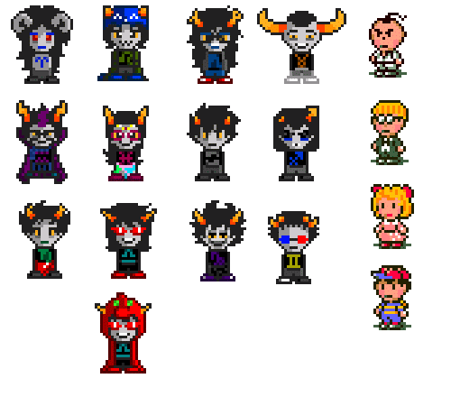

Foreword
This section is dedicated to preserving the original transcripts of conversations I’ve had with people on any manner of topics, taken unedited aside from formatting. Organization is the same as appendix A: alphabetically arranged by topic, with the person or persons being interviewed, and the date and method of contact following.
List of Transcripts and Recordings
Alexis "Gankro" Beingessner Interview
Multiple days, e-mail correspondence (answers received December 28th
Editor's note: bolded text is of interviewer, regular text is Gankro's words (excluding e-mails)
(sorry took me a while to write this up, lots of looking up emails combined with the holidays)
On Sat, Dec 23, 2017 at 4:04 PM, [redacted name] <drewlinky@gmail.com> wrote:
Alexis, I'm really sorry for the huge gap in time between my initial email and now. Finals and research got in the way, so I had to devote my full time to that. Thank you for agreeing to an interview, I appreciate it greatly. Here are the questions I've thought of:
So some disclaimers here: I don't have the best memory, and a lot of the relevant history here is content on the MSPA forums, which as far as I can tell have been completely annihilated from the internet. (a genuine tragedy) Consider everything I say to be suffixed with an "(I think?)" :)
How did you end up doing coding work for Hussie?
So it's April 2009, I'm 16, a huge fan of Problem Sleuth, and an aspiring Flash game developer (longtime denizen of newgrounds).
April 10th: Homestuck BETA drops ( http://www.mspaintadventures.com/?s=5)
Andrew announces it's going to be done entirely in Flash.
I lose my mind!!!! This is amazing!!!!
April 13th: Andrew realizes doing everything in Flash is a Terrible Idea, Homestuck relaunches in the mixed media format we now know.
April 14th: I am sad, because I friggin' love Flash, but also excited! I make an account on the MSPA forums and make a thread where I start posting a bunch of little mini games/toys I made in flash. At some point Andrew rolled into the thread, and was like "hey this is cool", and I'm blown away because Andrew Hussie is here saying my stuff is cool! I begged him to draw Problem Sleuth in my shitty Flash-based MS Paint clone, and he did!
Then Andrew PMs me on the forums asking if I'd be interested in working on some more complex interactive stuff for MSPA itself. And I'm like UH YEAH OF COURSE? Making games in Flash is my dream, and Andrew is like my hero!!
This would eventually become [S] YOU THERE. BOY. [http://www.mspaintadventures.com/?s=6&p=002153] (Project 01 - John Wander). Sadly, I think all of that work happened over forum PMs, so I don't really know the details or timeline here. All I know is that exactly two months after I joined the forums, I received $200 for my work! (This ends up not being my first Professional Flash Game, as in those two months I also somehow ended up programming Reincarnation: Riley's Out Again [https://www.newgrounds.com/portal/view/493215] for Chris Gianelloni - also $200. Yeah weirdly starving artists can't pay you much? Good thing I was still a kid with no bills!)
How did your contributions get designed? Did Hussie approach you with a specific plan already in mind or was it more collaborative? Did you have any creative license?
Ok this is the long question, and it's gonna dive into some messy personal stuff. Sorry!
So the biggest thing to keep in mind with MSPA is that it's based entirely off of collaboratively riffing off eachother's ideas. It started out as a faux text-based adventure where people would post prompts, and Andrew would take the ones he liked and riff off of them. As far as I'm concerned this is Andrew's super power: the ability to take a pile of things (comments, art, music, ideas, people) and rapidly recombine them into amazing things. The chatlogs in Homestuck full of amazing back and forths? That's just what talking to Andrew in chat was. Constant riffing and feedback loops.
Anyway, this is all to say that the genesis of ideas, and even how things got developed, is honestly really murky with Homestuck? Everything was kinda adhoc, a riff-on-a-riff, and done in incredibly little time.
Originally we developed everything over private messages on the MSPA forums with links. Over the years we would make use of email, AIM(?) chat, and a secret forum where the other artists and musicians hung out and riffed off eachother's work with occasional direction from Andrew.
As an example, when we started Project 07 – Alterniabound [http://www.mspaintadventures.com/?s=6&p=004692], sprites from Earthbound and Secret of Mana were introduced on the secret forums as pixel-spriting references, and I rigged the Earthbound ones up for my early development. But then the became templates for our animations. And then someone made Gamzee do the Secret of Mana dance. And then Andrew told me to put it in the final thing because it existed:

(My workflow frequently involved importing animated gifs directly into Flash, because it weirdly supported this Incredibly Well, and meant there was literally no difference between an artist sharing it on the forum and me receiving the final design)
As for my part in the whole thing, it was a lot of content firehoses and me racing to keep up with them. Andrew worked fast, and when we started I was a highschool student with a part time job at a grocery store (later, only an unemployed university student studying game dev).
Andrew would variously send me directories full of assets, Flash files with some stuff already rigged up, huge text dumps of dialogue/descriptions, or gif mockups of scenes I should rig up in Flash. I would just scramble to get it all done in a reasonable time-frame.
I can't emphasize this scramble enough. Andrew was a ceaseless content machine, and I don't think I was ever "blocked" on him producing content. Which is ridiculous considering how much content is packed into our games. (like, hundreds of pages of dialogue). He literally traveled back in time to make a comic about our development process while I was rigging up the content:
or more concisely
I honestly pushed myself too hard here. I don't think Andrew really understood how hard this stuff was on me; I think he's a good enough guy that he would've given me more space if he realized what I was doing to myself. But he's just so productive and I burnt myself out really hard trying to keep up with someone who, ultimately, was my hero that I didn't want to disappoint. I have two intense negative memories from working on homestuck:
* Begging Andrew (I think I was in tears irl) to just wait another day for me to finish one of our projects, because he wanted to start posting more pages of the story (he was that far ahead of me).
* Being so stressed out from working on one of our projects that I went to a party and drunk myself sick (I normally don't drink alcohol at all, for context)
I honestly can't remember which projects these were. I think it was probably the HTML5 games, since they were so much more work?
As an example of the pace at which we worked, consider Project 09 - Triterniabound [http://www.mspaintadventures.com/?s=6&p=005338], which I believe was done entirely over email in 3 days:
Andrew Hussie - Thursday, Feb 3, 2011: 1:00 AM
Have time in the next few days for another one of these AB-LITE things? Should be even liter than last one, just involving Equius and Nepeta as playables, and probably no other interactable character. One room, with possibly one or two smaller branching rooms. Chests to a minimum.
[editor's note: this entire paragraph would soon become a massive lie]
Alexis Beingessner - 9:00 AM (I presumably wake up)
Well I've gotta write a paper tonight and some game dev stuff to work on during the weekend, what exactly is "next few days" to you?
Andrew Hussie - 4:00 PM (Andrew presumably wakes up)
How about we jam it in post-paper and pre-weekend?
Alexis Beingessner
That would be tonight I guess? If it's the magnitude you suggest I should be able to get it done fairly easily between my various piecemeal obligations.
Andrew Hussie
Could be tonight. With maybe some last details patched in tomorrow?
Alexis Beingessner - 4:30PM
Yeah that's fine but anything done tomorrow would have to be very early or very late in the day.
Andrew Hussie - Friday, 1:00 AM
Ok here's room 1. Plus foreground layer to overlap to make walking around feel more natural if needed. Start as Equius. Put him anywhere for now. Nepeta is also in the room, and playable. Milk files: drop a few glasses of milk in the room here and there. For every milk: > Drink milk. If done with Equius, replace with broken glass. Then prompt: "Fiddlesticks." If done with Nepeta, just prompt "lap lap lap lap lap :33" Broken milks can be unexaminable.
<4 gifs attached>
Andrew Hussie - 8:00 PM
Ok, there'll be more rooms than I said, but most of these are really trivial. Basically just glorified paths from point A to point B, leading to a minor cut scene. Room 2 is the only one of any detail.
Room 2 stuff:
Put "great" in front of grate, sandwiching it between text and arrow, with its 2 frame animation in play.
If examine:
> Enter great, you mean grate.
You go in, on to room 3, etc.
Put the crates in front of the OTP drawing, lining up with the tiles underneath. If examine:
> Examine creats, you mean crates.
Crates fall over, swap crate img with crates2. Becomes the layout of the room thereafter.
There'll be text associated with this action, but we'll save that for the text dump.
Navigation:
Room 1:
> Enter door.
To room 2.
> Enter great, you mean grate.
To room 3.
First two grates are one panel cut scenes.
Left most grate is door.
> Enter grate.
To room 4, out of right grate. Transportalizers are inactive, but examinable.
Left grate is door.
> Enter grate.
To room 5.
Final grate is cut scene.
<7 more gifs attached>
(several more content dumps pass, I request some clarifications/corrections, occasionally post a progress swf)
Here's an example "text dump" (using a simple plaintext notation I had made, and the game engine parsed to do sprites):
Andrew Hussie - Saturday, 6:00AM (still awake?)
Note: there will be two new expressions: ACRoleplay and CTRoleplay to be provided shortly.
[editor's note: part of dump removed because there's SO MUCH TEXT?]
AS NEPETA
Suggest one last feelings jam in the pile.
> Roleplay.
> Tacklepounce.
> Be Equius.
> Suggest one last feelings jam in the pile.
ACSad NEPETA: :33 < *nepeta sh33pishly looks at her shoe with a question on her purrsed lips*
CTTalk EQUIUS: D --> For pete's goodfornothing di%ie whistling SA%ES, Nepeta
CTTalk EQUIUS: D --> I am through talking about feelings, now go hide like I commanded
ACShocked NEPETA: :33 < but so many of our friends have died, and it just makes me so sad to think about!
ACTalk NEPETA: :33 < i dont think we have even scratched the surface of our f33lings yet, and our f33lings in this case are a very tall and inviting carpeted post to sink our claws into!
CTTalk EQUIUS: D --> I do not hoove claws
CTTalk EQUIUS: D --> I mean have claws
ACAngry NEPETA: :33 < i KNOW, i was speaking metafurrikitty :33
CTTalk EQUIUS: D --> *Mr. Zahhak rolls his eyes, which remain concealed and a100f as ever*
ACTalk NEPETA: :33 < besides, i know for a FACT that you are still f33ling b100 (h33h33) from losing aradia
CTTalk EQUIUS: D --> I suppose
ACTalk NEPETA: :33 < i did not mention, but i think i should...
ACCheery NEPETA: :33 < it may purrk you up to know that i had a dream about her during my last catnap!
CTTalk EQUIUS: D --> You did
ACTalk NEPETA: :33 < yes, she had these purrty wings and a splendid hood, i think she might have b33n cosplaying much like friska has b33n!
CTTalk EQUIUS: D --> Uh huh
ACCheery NEPETA: :33 < she was so happy, just like she used to be, and she said she would s33 you soon!
CTTalk EQUIUS: D --> That's a nice thought, and thank you for sharing it
CTTalk EQUIUS: D --> But it was only a dream, and will surely have no consequence in reality
ACThinking NEPETA: :33 < equius?
ACCoy NEPETA: :33 < are those f33lings i an detecting with my wiggly whiskery nose?
CTTalk EQUIUS: D --> Maybe
ACCoy NEPETA: :33 < then we must take this to the pile, scratching-posthaste!!! ;33
CTTalk EQUIUS: D --> Okay, just for a while though
[cut to feelingsjam.gif (animated)]
"You then proceed to have the most poignant and heartfelt feelings jam in the history of paradox space, or piles of things."
> Roleplay.
CTRoleplay EQUIUS: D --> :33 < *I, a mu%ular man who is clearly a feline-obsessed female at the moment, do something suitably cat-like in accordance with the nature of this juvenile theatrical amusement*
ACRoleplay NEPETA: :33 < D --> *STRONG EQUIUS NO LIKE HISS-POOR ATTEMPT AT ROLEPLAY, ALSO DISAPPROVES OF MISSED OPPURRTUNITY TO SPELL AMUSEMENT AS AMEWSMENT*
CTRoleplay EQUIUS: D --> That's not how I talk
ACRoleplay NEPETA: :33 < D --> *EQUIUS COMMAND STRONG MEOWSCULAR CAT GIRL TO GET INTO ROLE BETTER* B33
CTRoleplay EQUIUS: D --> Oh good grief
ACRoleplay NEPETA: :33 < D --> *HE COMMANDS IT!!!!!!!!!*
CTRoleplay EQUIUS: D --> Fine
CTRoleplay EQUIUS: D --> :33 < *I, again as a lithe clawed female wearing a preposterous hood, I mean prepawsterous, strike a supine posture on the floor, darn it, pawsture*
CTRoleplay EQUIUS: D --> :33 < *The e%posed belly commands to be scratched*
CTRoleplay EQUIUS: D --> :33 < *It commands it, do as it says*
ACRoleplay NEPETA: :33 < D --> *RAWR, HULKING BRUTE NO OBEY COMMAND, TOO STRONG FOR TOUCHY CUDDLY STUFF PURR USUAL!* BPP
CTRoleplay EQUIUS: D --> :33 < *The scruffy haired, saucer eyed smart alec takes issue with the tone of the girl currently posing as said hulking brute*
CTRoleplay EQUIUS: D --> :33 < *She/he wonders if he/she app
urreciates that the pawerful nobleman currently meow%querading as her/him would be more than happy to accommeowdate said cuddly stuff, outrageous STRONGNESS purrmitting*
ACThinking NEPETA: :33 < :\\
ACAngry NEPETA: :33 < equius, dammit! why do you always have to make this so cerebral!
CTRoleplay EQUIUS: D --> Language
ACSad NEPETA: :33 < sorry :((
CTRoleplay EQUIUS: D --> What am I doing wrong
ACTalk NEPETA: :33 < well you dont always have to announce who you are purrtending to be in every line! and you dont always have to point out that its just purrtend!
ACThinking NEPETA: :33 < in fact, that is sort of an RPing no no
CTRoleplay EQUIUS: D --> How would you recommend I approach the absurdist charade, then
ACTalk NEPETA: :33 < oh i dunno, just by having fun and having a sense of humor about it and such! and not sneaking in sneaky sneakret little barbs of disdain for the exercise, i am not dumb you know, i catch those like scared little scurrying rodents!
CTTalk EQUIUS: D --> I was having fun
CTTalk EQUIUS: D --> The line about the belly scratching was e%ceptionally playful, and I am to be commended
CTTalk EQUIUS: D --> You will commend me, I command it
ACCheery NEPETA: :33 < yes yes, ok youre right. that was really great!
ACIdle NEPETA: :33 < do more of that. ok ready? go!
CTRoleplay EQUIUS: D --> I think I'm out of material though
CTRoleplay EQUIUS: D --> I don't actually know that much about cats
ACAngry NEPETA: :33 < errrrrrg! fiiiine, we can stop
ACRoleplay NEPETA: :33 < here, take your gross stinky glasses back, SWEATQUIUS
CTRoleplay EQUIUS: D --> Very well, here is your hood
ACShocked NEPETA: :33 < umm
ACShocked NEPETA: :33 < yeah
ACShocked NEPETA: :33 < why dont
ACShocked NEPETA: :33 < you hang on to that
ACShocked NEPETA: :33 < forever!
ACIdle NEPETA: :33 < it is my purrsent to you
CTRoleplay EQUIUS: D --> I
CTRoleplay EQUIUS: D --> I can't tell you how touching I find this gesture, Nepeta
CTRoleplay EQUIUS: D --> Thank you, from the very bottom of my ludi%ly powerful cardiova%ular system
ACIdle NEPETA: :33 < dont mention it! <33
> Tacklepounce.
[tacklepounce.gif (animated)]
Here's an example of us hashing out details, and taking the piss:
Alexis Beingessner - Sunday, 12:45 AM
Only hole I can see is there's no reason why CT can't go through the metal door. Also after the last one I started to believe you when you said short/simple... Silly me. Anyhoo I'm chuggin' along, just got these last two emails to implement. And then you will send me another email with more content when I am 90% done them. Then repeat.
Andrew Hussie
Whenever I use the words "short" or "simple", that is how you know for sure I am telling a funny joke. If equius tries to go in the door, make it say: This is no time to retire. Gotta go after the clown.
Alexis Beingessner
I'm kinda confused by this chest stuff? Is the conair poster the first towel??? ...is it a conair towel??? Also holy shit nic cage is like twice the size of the chest holy shit
Andrew Hussie
Con Air is the emergency backup towel, or whatever the hell I called it.
Andrew Hussie
Also I don't know what sort of file size this thing is ballooning toward. Wonder if messing around with sound quality would be worth it? I'm getting absolutely destroyed on bandwidth lately.
Alexis Beingessner
It was dancing just below 5mb before I last compiled, but I haven't compiled in a while (I'm a crazy motherfucker trying to do all the assets in one compile (this will not turn out well)).
And here we are getting delirious, and shipping it:
Alexis Beingessner - 4:00 AM
You can draw??????
Andrew Hussie
Sometimes I take a break from typing hundreds of pages of dialogue for you to copy-paste into Flash's Actionscript window, line by line.
Alexis Beingessner
Backspace Shift Quote Unshift Comma Shift Quote ClickNextLine Backspace Shift Quote Unshift Comma Shift Quote ClickNextLine Backspace Shift Quote Unshift Comma Shift Quote ClickNextLine Backspace Shift Quote Unshift Comma Shift Quote ClickNextLine Backspace Shift Quote Unshift Comma Shift Quote ClickNextLine Backspace Shift Quote Unshift Comma Shift Quote ClickNextLine Backspace Shift Quote Unshift Comma Shift Quote ClickNextLine Backspace Shift Quote Unshift Comma Shift Quote Cl... Sometimes I forget where I am. Also everything seems patched on my end, Supercar has volunteered to pull an all nighter to make some vague ethereal easter egg.
Andrew Hussie
I think if we're T minus X minutes to stability, just gotta go eggless. It's silly to wait on that. Can patch it later with an egg and he can put more loving finesse into it.
Alexis Beingessner - 4:30 AM (extremely goes to bed)
Okay there. Gonna go collapse.
Andrew Hussie
Rad dogg WTG.
Andrew Hussie - 4:50 AM
I got a pretty big music/gameplay freakout when I went into the secret room. Also I just noticed you can see the red border on the cut scenes. This I'm sure is from my "matte" layer, which you can delete from each clip. PATCHEZ YO
Alexis Beingessner - 2:40 PM
Tried to kick the shit outta this'un and it seemed to run fine: http://timelesschaos.com/mspa.php?curswf=Triterniabound At very least some of the more concrete bugs have been nixed.
Andrew Hussie
Ok got the patch up.
---------
So yeah a pretty intense experience.
Although Andrew was a fairly experienced programmer (in fact, he did all the simpler interactive Flash games himself), he would often defer to me on technical and implementation details. So that's where I was often the most "creative". Any physics or dynamic effects I would have the first crack at, and he'd give feedback on it if it bothered him. Sometimes this would leak into the actual content: his proposal wouldn't be worth the effort, or just wouldn't make sense and we'd figure out what to do.
Trickster mode, as far as I can recall, was entirely my idea and doing. Often I would be the "lead" on what to do with a game's easter egg, but since Andrew is just a living mixing board, he quickly got in on it and made it part of the process.
I think I also originally made the pogo ride game as a lark on the forums, and Andrew was just like "fuck it slap some paint on it and let's make it part of the story"? Could be making that one up though. :)
How do you feel about your contributions to the comic? Are they satisfactory to you, or are there things you'd go back and fix if given the opportunity?
It's weird. I think mostly I'm pretty happy with what I did because I know the context under which it was created. There was no time to do things right. I barely had a chance to test it. I was a kid who had school and a job and was teaching myself how to program. Very occasionally someone comes out of nowhere and complains to me that something I made is broken or bad, and I feel bad for an instant, but than I remember what it was like back then and I just don't care.
In theory I should probably go back in time and prevent us from using Flash since it's now an effectively defunct format, and that fact is actually starting to bitrot the games. But honestly Flash was the Right Thing to use at the time. It was certainly radically easier to develop our Flash projects than the later HTML5 ones (where we had to build animation and asset management systems from scratch, on top of then-still-buggy browser implementations, and instead of a nice GUI I had to design everything with hand-crafted XML files -- oh actually can I go back in time and stop that one? Making everything XML I wrote by hand..?).
If we're just cleaning things up, there's plenty of nitty-gritty things that I would fix having learned everything I did over the years. John Wander feels really unpleasant to me now because the camera's too zoomed in, the canvas is too small, and everything is a bit too slow and floaty for my tastes. Not to mention it's kinda glitchy on my current system (flash and hidpi are not friends).
Codewise I also know there's some real nightmares floating in the older stuff. Like the original scene description format I designed was just like, this amazing giant quintuply-nested array literal all on one line at the top of the main code file (AS2(?) didn't seem to like me line-breaking it?). It was like I invented JSON but only with arrays and strings. Just had to know how the code would interpret things at different positions (and based on things at the *other* positions).
I wasted a lot of time debugging syntax errors from missing braces or commas on that nightmare.
How do you feel about the fan response to them? Do you feel your work was received well enough or did any criticism strike you, so to speak?
If I can trust my memory right, the stuff I worked on was incredibly well received. The only criticism of it that I consider particularly serious is that it comes along with inherent accessibility issues. In order to follow along with this epic story you had to be able to play these little adventure games which were stuffed with hundreds of pages of words, only some of which would be important. And these games don't run the best because there were tons of things I did that were awful for performance but made it possible to implement things quickly.
(e.g. instead of efficiently describing the walkable areas in the HTML5 games with points/polygons, I just had a black and white image of each room's walkable area and did pixel lookups for hit-testing; a huge waste of memory and actually quite slow for the existing browsers... but much easier to make with only photoshop and a text editor in a few days)
At one point Andrew tried to alleviate this a bit by including static summaries of the content. I think that was a great idea, and helped a lot. I also think the community took it upon themselves to transcribe (and sometimes translate!) all the content. Good community :)
Are there any major or interesting secrets like Trickster Mode that, to your knowledge, have yet to be discovered even after all this time?
I'm pretty sure if anything went unfound for a significant period of time, I would just post it on the forums. I made stuff to be enjoyed by others! :)
Given that your work played a considerable part in it, how do you feel in general about how Homestuck and its fandom has turned out?
I really didn't like how the Homestuck fandom developed over the years, but I don't think that's as much a value judgement on the fandom as it is a mismatch of interests mixed with a lot of my own personal issues.
In terms of personal issues, Homestuck basically coincides with my absolute worst years growing up. I was just the absolutely shittiest and angriest god damn teenager, dealing with a lot of depression and stress. At times I genuinely perceived mundane expressions of joy as phony bullshit and got mad about it. This didn't mix well with a huge rush of other people coming to talk about things I don't care about. (Aside: holy shit am I embarrassed by some of the shit I said and did back then. I feel like there's more people I should be apologizing to than I can possibly remember...)
In terms of mismatched interests, what I really loved about Problem Sleuth and early Homestuck was the world and mechanics and how Andrew made all this complete bullshit slot together like a giant rube-goldberg machine. Insofar as I cared about characters, I cared about them as individuals. I loved the bullshit stats, mechanics, and enemies that Andrew would make up in Problem Sleuth. I remember spending hours discussing how totems and punchcards are supposed to work in Homestuck. I friggin' loved the ~ath programming language. I cared about the original kids in the ways they expressed themselves individually.
The story and relationships? Those were always just a vehicle for the things I actually cared about. A purely utilitarian thing.
But as Homestuck blew up, more and more people poured in who wanted to talk about their fan theories about the story or relationships. That wasn't for me, and it made me mad because, as I noted previously, I was a piece of shit. Eventually I found myself pushed out of a major part of a community that I was literally one of the most active members of (I spent basically all of my free time as a teenager on the MSPA forums).
And because MSPA is fundamentally a giant jam session lead by Andrew, this shift in the community's focus ultimately became reflected in Homestuck. It became more about the story and relationships. Originally (around the time troll relationship mechanics started being detailed) I perceived this as Andrew mocking the parts of the community that I didn't like, but as time went on it pretty clearly became some kind of Serious.
For a long time I just hung out on the General subforums (non-homestuck discussion), but eventually I completely drifted away from the forums. I never was able to bring myself to finish reading/watching Homestuck. It was just this thing that I hurt myself over and that stopped being for me. (Writing this email brought up enough Feels that I found myself ready to finish it, which I just did.)
I got pushed out of the core community fast enough that I never interacted with the Apparently Crazy Shit that I hear vague whispers of occurring. So no comment on whatever that is :)
Do you feel that working on it was a valuable or useful experience? Has it played into any other aspect of your life or opened any opportunities that wouldn't have been available otherwise?
Yeah! Working on Homestuck had a huge impact on me, and is probably the basis for my entire life trajectory. Like I fucked myself up over it, but working on Homestuck and the community around it gave me a reason to care about life at all. So, pretty net positive.
By the time I got to university I was way ahead of most of my peers because I had shipped like 7 games for a million people to enjoy, while the curriculum couldn't even assume you'd programmed before. This made me stand out in my class of like ~300 people, which got me a spot working in my university's Computational Geometry Lab over the summer. This put me on a path for academia studying algorithms and data structures. That study led me to mess around with data structures in the Rust programming language, where I quickly became a member of the Rust standard library team. That work in turn got me a job at Mozilla working on integrating Rust into Firefox, where I happily am now.
Of course this is all on the back of massive amounts of privilege which gave me the time and resources to teach myself programming and work on Homestuck, but without Homestuck I would have just pissed that advantage away and done nothing. There's a reasonable chance I would have dropped out of highschool overcome by depression with no one to turn to (even with Homestuck I got pretty close).
Finally, do you have any other comments or insight you'd like to add? Could be anything you like or have on your mind.
I would strongly advise against trying to use Andrew Hussie as a job reference. Background check people get really upset when one of your references is impossible to contact because they're basically a drifter.
Also I couldn't find a place to fit this in so I would just like to put it on the record that I totally named Rose Lalonde and that rules.
Also here's a dump of random dev screenshots/artifacts which I couldn't work in:
The reason LoWaS runs like dogshit (Andrew just dumped this FLA in my lap):
Using images as hit-detection (Flash made this easy and fast because you could just paintbrush vectors and do hittests on them from ActionScript) + a peak into how rooms were implemented as keyframes:
Explaining to Andrew how origins were used to define depth (also trees suck)
GOOD WIZARD BEST FRIEND
GOOD FARMER BEST FRIEND
A history of how my modern visual identity was a collaborative effort by the MSPA community
unused assets from The Midnight Crew Game, which was definitely not secretly a thing we worked on
Altgen Observations
Tori - 9th of October, 2017, Discord transcript
Drew Linky – 10/8/17 at 11:36 AM
yo, i'm writing my thing about altgen in the journo
do you have any comments you'd like to add about it
tori - 10/8/17 at 11:36 AM
what about altgen specifically
Drew Linky - 10/8/17 at 11:36 AM
such as what the history of the place was like, who its regulars were
i already asked zoey
tori - 10/8/17 at 11:36 AM
can you shill altgenstuck
ohhhh shit
hm ok
ewll i dont know a whole lot about early altgen
Drew Linky - 10/8/17 at 11:36 AM
i can definitely shill altgenstuck for you though
tori - 10/8/17 at 11:36 AM
swift talks about it a lot
thank u
but i barely remember
i know the first message was jakkyr just saying "cool"
hm
before i was pseudo i rarely went there and stayed to talk
i lurked
and i knew it as pretty much the hangouts of lognes, daddy, vdnw, and who ever else was altgen banned
not altgen banned
brain farm
i mean genban
which was i think the only channel ban at the time?
or sure as hell if others existed they didnt get used often
there was a ot of shitposting by jakkyr and swift before log-daddy era
and some other people i forgt??
mira maybe
i dont know shit about mira
uhhh
and so basically altgen did change a fuck ton when the reckoning happened
less from me but becausse makin deleted the old botspam, which [the original altgen pseudo] was also the pseudo of
altgen became botspam
and people attempted to have conversation while others had full 100 percent right to just fucking do whatever
i think the origins of altgenstuck were actually permeated by tagspam.
it was god awful
shitters reigned really fuckin uh
a lot
there were a lot of shitters
too many to remember
ones that stick out are asphaultapocalypse/atomicbinary who to this day hangs around, they alted a lot
you mightve been there
he had two accounts at once and talked with two mods to pretend he was two different people
fucked with hvd too
uhh and awesine as well
awesine was the WOSRST cause he didnt fuckin do anything wrong technically
but what this fucker would do was sit on his ass
hed go >tl
then roll through his fucking tags repeatedly
endlessly
altgen was just his fucking tag list for weeks
i think he ended up getting a server ban for being an asshat in another channel
i think awesine was what pushed me to beg makin to bring botspam back and let altgen have some semblence of order
that didnt happen untila t least a little after altgenstuck had been established
altgen was really at a low point when ags was started
i think those times where it was just bot hell and my job was to ban anybody who thought sonic toilet was a funny meme, and nothing else, are what make people think altgen is Bad today if they dont go there much
Uhhhhh what else
Ok yeah altgenstuck's birth
AGS kinda moved directly to its own server within days of creation
would going on about altgenstuck's server and creation be altgen and hsd relevant?
anyways the altgenstuck characters as of revealed were barely altgen regulars and more people who were half-regular and only happened to be online at the time
I dont think any of them were relevant to the servers culture before altgenstuck
except maybe a few that are leaks..
i wont tell.
Drew Linky - 10/8/17 at 11:46 AM
talk about literally anything you want dude, this is all very valuable information
tori - 10/8/17 at 11:46 AM
alright
hell yes ranting about altgen
my fave shit
so yeah im singlehandedly responsible for literally anybody giving a fuck about dickle and i dont know how to feel
alot of ags shit happened in its own server and it kinda. vored regulars
so they get replaced
altgen tends to change hands of regulars too often. probablly the only regulars who have been there long term are me and vdnw//zoey
and are still there to this day i mean
it might be because its super active
theres like eras and stuff
whereas with shit like read-mspalit and makin and tipsy and putnam and the other people i dont bother remmbering the names of theyve been there like so long their assprints in the chairs are hyperdetailed
whereas altgen is like just a bunch of random cushions and everybodys either throwing them or crying on them
thats just these-days altgen
old times altgen way pre AGS either [the original altgen pseudo] crew shat about in the figurative sense
or lognes or any other makara or ampora wearer would do so less figuratively
at the time of ags in its infancy there was kind of this really common sighting of people
this was when altgen was imrpoving to its current better state
sometime around people getting sick of altgen being botspam and makin finally agreeing to reinstate botspam
continuing of that incomplete sentence i mean a common sighting of people who felt it to be their lifes work to meme about how they are never gonna be in altgenstuck
and i mean so may of em
there was miskatonicmd who i ever found excuse to altgen ban because he pissed me the hell off
funny thing is he chilled off and matured and hes on the altgenstuck team now.
hes pretty cool actually too as a friend
i dont talk to him much but he was cool for terraria
but before he was like, atomic tier shitter
i dont even remember much about what atomic did and i dont hav ea good sense of if he was pre or post or both altgenstuck creation
AGS was created in 2016 september for reference i mean
But there was a lot of individual shitters whod do this and get banned
I dont really have good memory of altgen between neo-botspam and the current era
combination of not a lot happening, my trash memory, and me having other stuff i was doing on discord then
dark days for me spent more time propagaating splinter drama than giving fucks about altgen any more to prevent people from spamming the bot or posting sonic toilet or whatever
but yeah
before those dark void of shit maybe during since i wa a lil bitch during em
i feel like you were there for it? but i know you couldnt have been
redglare
oh man
this asshat
felt it his job to tell me what an ass i was for disallowing spamming tags and the bot without context in altgen
hed like legitimately hold the act of being a lawyer defending his people from an awful nazi moderator
back then i WAS known as a nazi actually
even though im definitely stricer these days
i think people have gotten used to the idea of a stricter altgen really
i think as the server grows it becomes a more public space
in altgens very beginnings the server was, apparently, very personaly
personal
like the size of the community of just one channel? except that was the entire server
the community of a single channel
or of one smaller splinter
but these days its fucking big.
8000.
almost 9
and every channel is its own subcommunity
and its just kind of unacceptable for such a channel to exist in a big server thats a big public space for homestucks
a channel thats like how altgen was when i very first started on it
where peopple were just spamming like offensive memes and slurs at each other cause theryre 12 and the sevrers only a few thousand most of which are lurkers and who cares its altgen haha
and the bot too
spamming the bot
god, i wish epople would use the bot reasonably
tori - 10/8/17 at 12:00 PM
these days they just repost their images raw instead of using the tag over and over and ive kinda given up on that front
using the bot was uglier and spammier anyways
i cant exactly reasonably say hey yuove posted that image 15 times in the last week plesae stop
i think its just something annoying me specifically
but honestly im so glad that awesine-type behavior has gone
i dont know if altgens culture relegating itself to being more and more moderated is a good or bad thing in weirder corners of my mind
it feels kinda wrong to say "hey dont call somebody a faggot" coz its altgen not serious
but then at the same time it makes the channel better
but when the spirit of the channel is to be shit
weve had to redefine shit
god i should go back to chronological descriptions of events instead of lie
other things
Uhh
Hm
redglare...
what happens after that
god i dont even know if redglare was post or pre atomic or altgenstuck or WHATEVER
ok he might be recent because i feel like you were around for the purges
and the purges were created as a result of redglare
i was in a bad mindset then from the dark ages and so i thought he actually had a right to backseat drive the channel in directions it was never supposed to be going
and caved to his will
didnt work
altgen because spammy
You were there yes
Defo
Drew Linky - 10/8/17 at 12:04 PM
if i don't respond it's not that i'm not listening
tori - 10/8/17 at 12:04 PM
And then there's the modern era which might be the best
Drew Linky - 10/8/17 at 12:04 PM
i'm just content to have you list whatever comes to mind
tori - 10/8/17 at 12:04 PM
Its fine
Im infodumping in case you find some noteworthy shit
Its pretty fun actually for me
I didnt expect id have anything to say and then it just started tumbling down
The current era i think which consists of an atmosphere more like #social than /b/
it's largely people posting their fantroll sprite edits or communicating within their friends
there's a lot of very strong regulars and they're all very much friends with each other and have injokes
with me as the distant yet too close guardian figure
its very civilized often and i dont really have to do a whole lot
99 percent of the time when trouble comes in altgen, it's a rando coming to be an ass hat
or somebody not knowing the extent of a rule
and being gently reminded
VDNW oh my god i forgot to talk about her
but there's really not a lot to say
the oldest altgen regular
been with it from like the fucking dawn of time
only one to have stuck with it
posts a lot of their fantroll and like hotline miami and metal gear
shes just omnipresent
true altgen mascot honestly
Altgen goes into serious talk a lot too?
the whole core of regulars/friendgroup trust each other enough to vent about traumas and things
and then they go back to talking about memes or whatver
i tune out lots of stuff and just scan for hostile looking words when i dont have it in me to pay attention really
so i cant say much of arbitrary whatever
ANd i wanna have like a bit about altgenstuck but im getting the thing like i did at first here where I couldnt think of anything
it's not super relevant to the server so ill just say like.
Buncha randos who were online like a year ago keep saying hey lets make a fanventure
as is done
exxcept for whatever Fucking reason this one decides it wont die before page ten
And it gets its own core of regulars who leave or make their own servers and friends
like the nsfw squad and stuff
dickle and hp were in on that
there's terraria
we play a lot of terraria at altgenstuck incorporated
it did take a lot of people as regulars
here's another interesting bit thats ACTUALLY relevant to things
and hsd iself
the majority of people who post regularly in altgenstucks general, non-team channels?
they're people who were full banned from HSD.
i think atomic's there but since he changes his accounts i cant be sure if its him or somebody like him
syl was a regular even before his ban and for a bit after it, especially after it, but i think he left when he went full off the rails because of new alternia shit
teal posts a lot and is even on the team
that wasnt my idea dont judge me
and cappter too
he posts a lot
Drew Linky - 10/8/17 at 12:14 PM
oh my god, fucking cappter?
tori - 10/8/17 at 12:14 PM
and of course pep
Drew Linky - 10/8/17 at 12:14 PM
teal i could almost understand
tori - 10/8/17 at 12:14 PM
yeah
cappter not on the team
Drew Linky - 10/8/17 at 12:14 PM
ah, right, how is pep doing
tori - 10/8/17 at 12:14 PM
just a regular
uhh
Drew Linky - 10/8/17 at 12:15 PM
is she still creepy as fuck
tori - 10/8/17 at 12:15 PM
she brought stuff up again but in a resolving it all kinda wya
so i didnt re ban
i think the repair is beginning?
Drew Linky - 10/8/17 at 12:15 PM
okay, sweet
thank you for keeping an eye on her, i appreciate it
she seems like she genuinely wants to improve but of course we've seen how that turns out sometimes
tori - 10/8/17 at 12:15 PM
yeah
Drew Linky - 10/8/17 at 12:15 PM
good to know that perhaps some actual improvement is happening
tori – 10/8/17 at 12:15 PM
genuine want to improve is really difficult
ive been there
its like you say yure gonna do shit it never happens
then it happens on its own
so i just hope pep finds that random it all clicks or whatever
ags server has a few non hsd banned regulars as well
all of which are altgen regulars lmao
TS, vdnw, dingus
god, dingus
another vdnw really
except with his own style
he posts in cafe-worm sometimes right?
and everybody knows his youtube comments
hes another altgen mascot, standing the test of time
all in all i think altgen is genuinely pretty cool when you think about it
maybe in a way similar to your whole journal being made out of a genuine interest in the development of online communities or whatever the ehck it was
but more focused on altgen
like putting away the whole oh its a shitchannel no need to give fucks
but looking at its history and what it means and stuff
people doin stuff
shitposting coz its fun
Yeah
Wait another thing i thought up
Very small
when they freak out about altgen being deleted its not out of childish fear
its of their best way of contact with best friends being severed
but yeah altgen
Drew Linky – 10/8/17 at 12:24 PM
alright
thank you very much for all of this information, i appreciate it
do you mind if i store this conversation verbatim in a separate file
just for record keeping purposes
i would edit it heavily or just paraphrase it when describing it in the journal itself
like, to make it flow more smoothly
tori - 10/8/17 at 12:25 PM
Go ahead
Drew Linky - 10/8/17 at 12:25 PM
sweet, thank you
tori - 10/8/17 at 12:25 PM
record keepings fun
make sure the eridabs make it in
Drew Linky - 10/8/17 at 12:25 PM
i'm actually very glad i asked you about all this
i'll try my best
Cool and New Web Comic Interview
O - 3rd of December, 2017, forum private message correspondence
Dec 3, 2017 14:20:38 GMT -5 drewlinky said:
Hey o! I'm writing a comprehensive journal about the Homestuck fandom, and I've been reaching out to people who are important figures in the community. CANWC is such a popular work, and your influence on us in the last year is undeniable; as such I wanted to see if I could ask you a few questions. Would you be open to this?
If this doesn't sound good to you I understand completely. Whatever happens, thank you for your consideration!
Dec 3, 2017 14:53:57 GMT -5 o said:
give me youre questoins......... i am ready.......,
Dec 3, 2017 16:00:43 GMT -5 drewlinky said:
Alright, thank you for your time o. I'm asking many of these on behalf of your fans, so they get pretty silly. There are some serious questions as well: answer as few or as many of these as you like, with as much detail as you want. Thanks for agreeing to this interview!
What is your: favorite character? Favorite scene? Favorite ship?
Least favorite of those?
What’s your extended zodiac?
Do you regret portraying any specific events?
How do you feel about the improvement in your art over time?
How do you feel about the response to CANWC, and how big the community for it has gotten? How about stuff like Cool and New Music Team? Which track or tracks from CANMT do you regret not being able to use for a flash animation?
Have you planned any animations that were subsequently cancelled?
What’s your favorite fanventure other than CANWC?
What kinds of commands do you like to receive the most and which do you like least?
Which SBAHJ comic is your favorite?
What are your favorite video games?
What doth life? [an Xavier: Renegade Angel reference]
Where is the sp”o””o”n? [a reference to the second SBAHJ book]
Do you think you’ll be able to finish recounting this story? How do you feel about your mission to tell this story, and how it’s gone so far?
Any other general comments you’d like to give in general?
Dec 3, 2017 18:18:44 GMT -5 o said:
What is your: favorite character? Favorite scene? Favorite ship?
Least favorite of those?
favorite chracacter: hecka
least favorite chracacter> jhon
favrorite scene: : when jhon dies
least favorite scne: when jhon kills swet bro because its to sad for me
favorite ship; dadd x dd of coarse
least ship: jaed x beq ....... thats just rong........
What’s your extended zodiac?
some day ill say....for now its spoiler's!
Do you regret portraying any specific events?
no cause it all true stuf that hapened and i want to portray everything odjectively and unbiasedly even when the truth is hard........
How do you feel about the improvement in your art over time?
its' good because now i can portray the storey even more accarately, also getting good at G.I.F's and animetions is very helpful always
How do you feel about the response to CANWC, and how big the community for it has gotten? How about stuff like Cool and New Music Team? Which track or tracks from CANMT do you regret not being able to use for a flash animation?
all the fans who are loving my web comic are insprires me to keep doing it and geting better! so thank's you everyone.....
the canmt muisc team is super great;before i had to use songs that were COOL but not NEW that i stole from youtune.com, or songs that were NEW but not COOL that i made by randemly sticking notes togethrer.....but now i have like a milleon billeon songs that are COOL and NEW at the SAME TIME!!!!
also theyre songs are inportant because sometimme's a make a flash just becaus i know the prefect song for it, and always i strcture the flapshes based on the way the song is, so the song's make the storie better in those ways too
i wish i could use all if the songs in animetions unfotunately i have to pick just a few that work best with the particaler animeations...but theirs lots of songs i havent used yet that i know ill use for certain things, even some of the realy old songs.....
Have you planned any animations that were subsequently cancelled?
no always when i think of something to be an animetion i make it hapen cause animations are awesone
but sometimes th other way around> i dont think somethign it will be an animatoin and then sudenly i change my mind and make animation!
What’s your favorite fanventure other than CANWC?
oceanfall's, and act omaga, and also all the other ones, but espacially those two ones
What kinds of commands do you like to receive the most and which do you like least?
all comands are good , it is good to know what is the readers are wanting too see even if i dont actualy able to use the comand,
also now i have so many hunderds of commands saved up that i have enoug freedom to still always use the readers comands instead of my own commands even when i sorta know what have to hapen next'/ the only commands which are mine are most of the flapsh names and also those "[unit's of time) in the futrure/past..." comands
the comands still influents the comic a hole lot,like i didnt eve n know obana would be a caracter until someone suggeste dadd make him and now allve a sudden obana is a main chracter.! also during alchemie sessions they just make whatevere the readers tell them too., and stuff and things like that. so a lota commands end up with having a way bigger impact uppon the story then i think when i first get them
Which SBAHJ comic is your favorite?
this [http://www.mspaintadventures.com/sweetbroandhellajeff/archive/008.jpg] or maiybe this [http://www.mspaintadventures.com/sweetbroandhellajeff/archive/009.jpg]
What are your favorite video games?
this [https://mspfa.com/?s=14113&p=788]
What doth life?
ummm.....isnt that one of the aspect's?
Where is the sp”o””o”n?
youll have too buy the b"o""o"k to find that one out!
(hint.....its insine the book
Do you think you’ll be able to finish recounting this story? How do you feel about your mission to tell this story, and how it’s gone so far?
definately i will finish!even when i am time to be very busy i can always find time for my web comic eventially
so far it isnt even half-way done yet even,im happy about the progres so far though,wen i started i dident think it was going too be over thousend pages long! and even with lots of animetoins and an intractive game and a muisc team.....whoaw...
i alreadey know the answrers to the plot misteries,and i knows in generel how it ends i think ,so now for me its just about the journiey to get there and see how it all goes doun!im excited to see what hapens as muchas everyone else!
Any other general comments you’d like to give in general?
make sure evreyone you buy diappers........cause its almots time for end of act 4rd flapsh.....and when that hapen youll poop youre pants
Dec 3, 2017 18:46:53 GMT -5 drewlinky said:
Alright, thank you very much for your responses! I've shared them with the rest of the community and they're extremely excited about what you've said. Everyone I know looks forward to your updates so much, and it means a lot that you're willing to answer their questions.
I appreciate it as well, sincerely. I'll be writing about your responses tonight, and I'm sure the journal will greatly benefit from it.
If there are more questions to be asked later, do you mind if I contact you again? There might be some new development in the fandom or even CANWC itself that people may be curious about. I'll try not to bother you except for really big occasions, but if you're not okay with that I understand completely. It's whatever works for you.
In either case, best of luck to you!
Dec 3, 2017 19:15:42 GMT -5 o said:
anytime
Hussie Essay on Homestuck's Direction
Transcript recorded from Perfectly Generic Podcast - 24th of August, 2019
The Homestuck Epilogues: Bridges And Off-Ramps
The history of printed version of The Homestuck Epilogues is also the history of The Homestuck Epilogues themselves, because I originally envisioned releasing them only as a book like this, to even further emphasize their conceptual separation from the main narrative. If you know anything about the epilogues, you probably already understand that conceptually distinguishing themselves from the story by their presentation as "fanfiction" is an important part of their nature and what they are trying to say. In the form of a book (which you can read from one side, or flip upside down and read from the other) it somewhat carries the feeling of a cursed tome. Something which maddeningly beckons, due to whatever insanity it surely contains, but also something which causes feelings of trepidation. There's an ominous aura surrounding such a work, probably for a few reasons. The sheer size of it means the nature of the content probably isn't going to be that trivial. The stark presentation of the black and white covers, its dual-narrative format, the foreboding prologue combined with an alarming list of "content warnings", and even the fact that an "epilogue" is delivered with a "prologue" first, all adds up to a piece of media that appears designed to make the reader nervous about what to expect from it. Such is the nature of a cursed tome retrieved from a place which may have best been left undisturbed. It is also the nature of any creative inclination to reopen a story which had already been laid to rest - a reader's desire to agitate and then collapse the bubble which contained the imagined projection of "happily ever after", simply by observing it. There exists inherent danger in a reader's eagerness to collapse that bubble, or to crack that tome. There is also danger in a creator's willingness to accommodate that desire. It's a risk for all involved. It should be.
Obviously, it wasn't released as a book, until now (the plans for printing it had already been made, but were just delayed until well after its release on site). We decided to just release it all on the site so everyone could read it right away if they wanted. There was a long tradition of making all content freely accessible on the site, and we just produced one utterly enormous update which we were perfectly aware would cause a massive amount of discussion and agitation in the fandom. Overall it was probably better to just get it out there, let people read it relatively quickly, form their opinions on it, and then begin discussing it critically. In other words, people were going to feel something from all this, so it seemed better to just let it out there, allow the maximum number of people feel whatever it would cause them to feel, give people time to process those feelings, and then move on to whatever comes next.
But what comes next? That's a good question. I feel like the work does a lot to suggest it's not merely following up on the lives of all the characters after a few years, but also reorganizing all narrative circumstances in a way that points forward, to a new continuity with a totally different set of stakes. In this sense, I think it's heavily implied to be a piece of bridge-media, which is clearly detached from the previous narrative, and conceptually "optional" by its presentation, which allows it to also function as an off-ramp for those inclined to believe the first seven acts of Homestuck were perfectly sufficient. But for those who continue to feel investment in these characters and this world, ironically the very elements which could be regarded as disturbing or depressing are also the main reasons to have hope that there is still more to see. Because, as certain characters go to some length to elaborate on, you can't tell new stories without reestablishing significant dramatic stakes: new problems to overcome, new injustices to correct, new questions to answer. There can be no sense of emotional gratification later without first experiencing certain periods of emotional recession. And by peeking into the imagined realm of "happily ever after" to satisfy our curiosity, we discover that our attention isn't so harmless, because the complexities and sorrows of adult life can't be ignored. Nor can the challenges of creating a civilization from scratch, when several teenagers are handed god-status. It turns out the gaze we cast from the sky of Earth C to revisit everyone isn't exactly friendly, like warm sunlight. It's more like a ravaging beam, destructive and unsettling to all that could have been safely imagined. Our continued attention is the very property which incites new problems, and the troublemakers appear to be keenly aware of this. So they spring into action, and begin repositioning all the stage props for a new implied narrative. But "implied" is all it was. There was no immediate announcement for followup content, and I'm not announcing anything here yet either. More time was always going to be necessary to figure out what to do next, including what form it takes, the timing, and all those questions. For now I think it was alright to just let things simmer for a while, and give people an extended period of time to meditate on the meaning of the epilogues and why they involved the choices they did. But regardless of anyone's conclusions about it, I can at least confirm that it WAS designed to feel like a bridge piece since its conception.
Is it this way because an epilogue SHOULD be this way? No. It is this way because I thought that was the most suitable role for an epilogue to play in the context of the weird piece of media Homestuck has always been. The story experiments a lot with the way stories are told, and in particular messes with the ways certain stretches of content get partitioned and labeled. Playing with the labeling I think has ways of bringing attention to those labels, what they actually mean, and how they affect our perception of the events covered under certain labels. It can even get us to wonder why certain labels exist at all, and can expose "flaws" in the construction of stories which include them. For instance, "intermission" is such a label. But perhaps another way of saying intermission is, "whoops, the story is getting too long, here's a break from the real story with a bunch of dumb shit that doesn't matter". It's seemingly a tacit admission to a problem. And by continuing to toy with that label as the story rolls along, you start to unpack the nature of that problem by implicitly asking questions about it. If you have one intermission because the story got long... can you have two if it gets longer? Can you have even more than that? Once you have a multitude of intermissions, don't you have two dueling threads of content, one supposedly "irrelevant", and the other important? And if that's true, then is it possible for the "irrelevant" thread to accrue more importance, throwing its entire identity as "optional content" into question retroactively? And if that can happen, is it possible the two threads can flip roles, with the intermissions becoming more important than the main acts? Then once the story goes through the motions of answering "yes" to all of this, isn't it also fair to ask, why bother with this examination at all? Was it pure horseplay and trickery? Actually, yes, sort of. There is a trick involved. The gradual realization that intermission content is nontrivial forces the reader to reevaluate their perception of the material, which was originally influenced by a label presiding over that material, and what they believed that label meant. It relies on the reader's presumption about the label's meaning to disguise certain properties of the content (like relevance), and therefore disarms the reader initially, leading to the potential for subverting expectations about the content later in surprising ways. In other words, you can use whatever it is the reader already presumes they know about stories in order to control the perception of what they are reading, just by gradually shifting the boundaries of whatever it is they've been well trained to expect from certain elements.
So now the label "epilogue" has been toyed with in a similar way, and also in a manner which exposes an apparent flaw with the label. Or actually, just by using the label "epilogue" at all, it seems the story is admitting to an apparent flaw. If another way of saying intermission is "whoops, story's too long, here's a break", then an alternate way of saying epilogue is "whoops, I forgot some shit, here's some more". And we know right away this label will be subject to the same kind of trickery, since there are two story paths of eight epilogues each, prefaced by a shared prologue. It's already an unhinged implementation of the label before you even read it, which means it's probably time to get nervous about whether it satisfies your expectations about what the content existing under such a label should provide. Before you read it, it's already an invitation to start questioning what an epilogue even is, and whether it's kind of a silly idea even if applied conventionally. Take a 50 chapter novel with an epilogue, for example. Why isn't the epilogue just called chapter 51? Why was the choice made to label that content differently? Should we consider it an important part of the story, or should we not? If it's not important, why are we reading it? And if it is important, why is it given a label which is almost synonymous with "afterthought"? Is it a simple parting gift to the reader, to provide minor forms of satisfaction which the core narrative wasn't built to provide? Is it actually important to deliver those minor satisfactions? If it really is important, why didn't that content appear in chapter 51? And if it isn't, why bother at all? What are we even doing here?
By going down this path of questioning, it sounds like we're assembling a case against writing epilogues altogether. But actually, there's really nothing wrong with them. It's a perfectly reasonable thing to include in any story. It's just that the more you ask questions like these, the more you are forced to think about the true nature of these storytelling constructs, the actual purposes they're meant to serve. And with something like Homestuck, where issues like this are heavily foregrounded, like what should be considered "canon" vs. "not canon", or even more esoteric concepts like "outside of canon" or "beyond canon", then the issues you uncover when you ask such questions about an epilogue can't really be ignored. My feeling is, there's almost no choice but to turn the conventional ideas associated with epilogues completely inside-out, because of the inherent contradictions involved with crossing the post-canon threshold and revealing that which was not meant to be known. Stories end where they do for certain reasons, answering the questions which were thematically important to answer, and leaving some questions unanswered for similar reasons, and the reader is left with the task of deciphering the meaning of these decisions. Under the "whoops, I forgot some shit, here's more" interpretation of an epilogue as a flawed construct, by reopening an already closed-circuit narrative, what you're really doing is introducing destabilizing forces into something which had already reached a certain equilibrium, due to all the considerations that went into which questions to answer, and which to leave ambiguous. And these destabilizing forces became the entire basis for the construction of an entirely new post-canon narrative, for better or worse.
These are the types of things the epilogues let you to think about, along with a few other ideas. Like the fact that all narratives have perspectives and biases, depending on who is telling the story, even in the case where it's unclear if the narrator has any specific identity. The suggestion that all narratives are driven by agendas, sometimes thinly disguised, other times heavily. There's also stuff to think about just due to its presentation as fanfiction, and that it's the first installment of Homestuck which included other authors (contrary to some speculation I've seen, every word of all seven acts were written by me alone). By deploying it as mock-fanfiction, and including other authors, I'm making an overt gesture that is beginning to diminish my relevance as the sole authority on the direction this story takes, what should be regarded as canon, and even introducing some ambiguity into your understanding of what canon means as the torch is being passed into a realm governed by fan desires. If the epilogues really prove to be the bridge media they were designed to feel like, then I expect this trend to continue. The fanfiction format is effectively a call to action, for another generation of creators to imagine different outcomes, to submit their own work within the universe, to extend what happens beyond the epilogues, or to pave over them with their own ideas. And I believe the direness in tone and some of the subject matter suitably contributes to the urgency of this call to action.
I also think many of the negative feelings the story creates isn't just an urgent prompt for the reader to imagine different ideas, or ways to resolve the new narrative dilemmas. It's also an opportunity for people to discuss any of the difficult content critically, and for fandom in general to continue developing the tools for processing the negative emotions art can generate. Sorting that out has to be a communal experience, and it's an important part of the cycle between creating and criticizing art. I think not only can creators develop their skills to create better things by practicing and taking certain risks, fandom is something which can develop better skills as well. Skills like critical discussion, dealing constructively with negative feelings resulting from the media they consume, interacting with each other in more meaningful ways, and trying to understand different points of view outside of the factions within fandom that can become very hardened over time. Fandoms everywhere tend to get bad reputations for various reasons, maybe justifiably. But I don't see why it can't be an objective to try to improve fandom, just as creators can improve their work. And I think this can only happen if now and then fandoms are seriously challenged, by being encouraged to think about complex ideas, and made to feel difficult emotions. I believe when art creates certain kinds of negative feelings in people, it can lead to some of the most transformative experiences art has to offer. But it helps to be receptive to this idea for these experiences to have a positive net effect on your life, and your relationship with art.
So now I'm looking to all of you on the matter of where to go next. Wherever the most conscientious and invested members of fandom want to drive this universe, as well as the standards by which we engage with media in general, that will be the direction I follow.
Land of Fans and Music (LOFAM) Discussion
Lambda, ndividedbyzero, Makin, DrewLinky - multiple dates, Discord transcript
lambda added ndividedbyzero to the group.
lambda - 02/15/2018
ndividedbyzero - 02/15/2018
keep injecting me those smilies
Drew Linky - 02/15/2018
oh goodness
what is this
wait, are we discussing lofam
ndividedbyzero - 02/15/2018
the interview thing you were talking about a while back
Drew Linky - 02/15/2018
yes
sorry, that wasn't meant to be the end of that statement
there's a lot going on atm
can we do an interview sort of thing at a different time
i actually don't know what i would even begin to ask, i don't know as much about lofam as i would like
ndividedbyzero - 02/15/2018
oh no problem, i think this was just there to get things going whenever
no pressure definitely
Drew Linky - 02/15/2018
sweet
i might appreciate it if you guys could give me a general history
like, how lofam got started
lambda - 02/15/2018
okay so like
i guess the start is sorta chronicled in lofam1's foreword
oj wanted to join the music team (c. late 2010-early 2011) but this was at the point when they stopped accepting new people(edited)
there was a fanmusic thread on the forums where like people just posted whatever, usually hosted on tindeck?
hence why tindeck has "homestuck" as a genre
because it was for the longest time just a repository for hs fanmusic and voice acting
so eventually... i assume it was elaine, not a hundred percent sure
was just like "hey let's compile stuff into an album"
so people could just nominate Whatever including their own stuff and assuming the composer was a) contactable and b) cool with it being on, it got on
i don't know if there was any, like, actual garbage nominated for lofam1?
i mean there's stuff like maibasojen or w/e but there was WAAAAY worse with the other lofams
ndividedbyzero - 02/15/2018
i seem to remember elaine (aka oj) being the main person, with solatrus (prominent homestuck musician who made jade's land theme among others) also as a co-organizer
lambda - 02/15/2018
so i can't really say if that was something that. came up
yeah jeremy was there too
and rj ran gaiden
all of the organization was done basically up-front
like
in an mspaf thread
people just posted their art there and stuff
they wanted uhhh fuckin
mk_97's hs title screen song, which was a skies of skaia arrangement, but they were a ghost
so kon arranged it into beginnings
and, uh, rj also arranged it into the last track
ndividedbyzero - 02/15/2018
homestuck gaiden was basically the unofficial mspa bandcamp where a few album projects that weren't greenlighted by hussie went between 2010-2011, most of them being done by the music team/people very close to the music team, with the exception of lofam 1
lambda - 02/15/2018
[REDACTED BY REQUEST]
ndividedbyzero - 02/15/2018
the music team ended up having really really having to emphasize the whole UNOFFICIAL bit
lambda - 02/15/2018
they sold holidays but it was for charity so.... shrug
ndividedbyzero - 02/15/2018
like, take a look at the bandcamp and that's. pretty evident
i also think (but i'm not sure) that's why unofficialmspafans is called that
lambda - 02/15/2018
yeah
i think it ended up being like somehow related to the "reasons" why nick was booted from the team
but anyway yeah uh lofam1
that... happened
ndividedbyzero - 02/15/2018
it had toby fox on it so it counts as undertale canon
basically it was released in july 2011, had 53 tracks (making it the second largest album in homestuck history at the time behind volume 5), and introduced a lot of fanmusicians to the limelight
it set the precedent for basically every fanalbum to come
lambda - 02/15/2018
especially hs vaporwave 2016
i personally came in at like
that september/october
ndividedbyzero - 02/15/2018
insofar as 1) being huge (which has become less of a trend lately granted), 2) having individual art along with each song made by fanartists, 3) having an intricate commentary booklet
lambda - 02/15/2018
like, my first update was cascade
i got on the forums and like 80% just hung around in the music thread
ndividedbyzero - 02/15/2018
i think my first "update" was 5x showdown combo but i never caught up until a few days after cascade because i was cheating and read hs in a random order
lambda - 02/15/2018
cait reads everything in random orders
and then on... was it new year's? bowman released ithaca, and there was the stream commemorating that
so i started talking to the ppl in the chat and then talked to them a bit out of chat
this is vaguely necessary backstory i promise probably
and then like 2/3s through january gfd invited me to a skype group
this came to be known as the stupid o'clock chat
it had... a fuckzillion people in it. lots of important hs music names, a few art people, some others
it got to be like 80 or 90 people in its largest incarnation
and there were several, because skype kept breaking the chat
sometimes the pencils to indicate a user was typing would just. never disappear. one time nick kept a call going for a week and it Somehow fucked things up to the point it had to be remade
there were splinters and subgroups and
it was a fucking mess, but it also introduced me to like
everyone
not Everyone but everyone
but yeah so in like fuckin
uh
april or may of 2012 probably
i was like
hey does anyone have any plans to do like a lofam2
because the majority of the like Noteworthy Fan Musicians had some presence there
and everyone was like i'd be interested but i wouldn't do it
so the next question a while later was probably something like "does anyone want to help if i head it"
i'm pretty sure this was past the point when people found out i was 13/14 but yknow if no one else wants to
but so yeah lofam2 happened i
don't super feel like summarizing what happened there on my own
there was a lot of dumb shit
because i a) was 14 b) had a bad crush for 9 months and it was wrecking me and c) had undiagnosed depression, largely as result of b
well and d) i'm just naturally really impulsive
cait wasn't around until lofam3 so she can't really weigh in much here so uh let's skip to that for now(edited)
i think lofam2 ended with like
at least one person saying "wow, never doing that again"
and liza said they wouldn't but they ended up doing it again anyway
ndividedbyzero - 02/15/2018
yeah i definitely remember a post like that
liza was another co-organizer for 2, i think i remember them officially being co-leader?
lambda - 02/15/2018
although liza had to handle the project fully for the last couple of months, when i bailed/was hospitalized, so
ndividedbyzero - 02/15/2018
today they head the official bowman fanserver, which people if this chatlog is shared should totally visit, no bias at all
so i remember like
lambda - 02/15/2018
oh yeah also one last thing on lofam2
ndividedbyzero - 02/15/2018
insofar as my history
lambda - 02/15/2018
[REDACTED BY REQUEST]
ndividedbyzero - 02/15/2018
i was basically "sort of" part of the soc friendgroup but not in the actual skype chat because skype sucks. but i was friends with liza and lambda and etc, although at the time i wasn't nearly a good enough fanmusician to get on lofam2
in terms of the whole fanmusic stuff i was an extremely active follower but not a major player, so i remember being real sad when i heard all the sentiment about drama on the lofam2 end
lambda - 02/15/2018
oh yeah this is what cait fuckin does
i write in short... not even sentences half the time
just fragments
while she writes whole paragraphs
it's frustrating to do dirty stuff with her because it's just like CMON FUCKER
ndividedbyzero - 02/15/2018
i remember there being closely to lofam2 an album called sburb ost, which was released in november while december led to lofam2
marcy might have led that one
lambda - 02/15/2018
"sburb OST more like mOST of it's done except [marcy's] stuff" -crazy-8
it was headed by marcy yeah
sburb ost is basically like
ndividedbyzero - 02/15/2018
but it was primarily based around a common theme (aka what the soundtrack to sburb would sound like) which also set a precedent for having themed fanalbums
lambda - 02/15/2018
what i'd call the "old guard" of fanmusic
ndividedbyzero - 02/15/2018
it was the first to actually be on the unofficialmspafans bandcamp which was where people decided stuff would go after gaiden was quarantined
lambda - 02/15/2018
basically anyone on there embodies the community as it was in 2011-12
plus, like, wmm.
Drew Linky - 02/15/2018
it is fascinating listening to you guys play off of each other
please continue
ndividedbyzero - 02/15/2018
it's like audio commentary without the audio
lambda - 02/15/2018
stop listening to me creepass
let me eat my entire box of chocolates that i bought for $7.49 in peace
cait was one of the organizers for lofam3 but she wasn't credited in the booklet bc who fuckin knows
ndividedbyzero - 02/15/2018
so like, brief timeline so far, homestuck gaiden is created as a hub for unofficial music team hs projects, oj and solatrus create lofam 1 and that's also put on the hs gaiden bandcamp, after a few more projects hs gaiden is quarantined
lambda - 02/15/2018
i left 2/3 of the way through so i guess that's what happens when i'm not around to micromanage the fuck out of it
ndividedbyzero - 02/15/2018
either around the same time or a few months later organization for sburb ost begins on the forums by marcy
lambda - 02/15/2018
"all the quotation marks and apostrophes in the booklet gotta be straight, not curly"
ndividedbyzero - 02/15/2018
in aprilish lofam 2 development starts
lambda - 02/15/2018
yeah i don't really remember when ost started but sometime in 2011
ndividedbyzero - 02/15/2018
sometime after that but before/during november unofficialmspafans is officially a thing, and both sburb ost and lofam 2 are put there in november and december respectively
lambda - 02/15/2018
veri sent me the link to the skaia.net site and his words were something like
"have a check o this DOES NOT LEAVE THIS CHAT THAT MEANS YOU [LAMBDA]"
ndividedbyzero - 02/15/2018
but due to the sheer effort and volume of drama in lofam 2 the idea of a lofam 3 is kind of unsure at this point
lambda - 02/15/2018
it was only unsure for like 3 or 4 months
ndividedbyzero - 02/15/2018
yeah
after a few months, in early-mid 2013 veritasunae/veri decided to head the project
lambda - 02/15/2018
oh yeah also by the end of 2012 soc basically dissolved
ndividedbyzero - 02/15/2018
the other org team was uh...
lambda - 02/15/2018
people floated off to their own spheres
ndividedbyzero - 02/15/2018
everyone in the booklet except me, who came onto the team later i think
lambda - 02/15/2018
yeah i don't think anyone else was there
then again my memories of that time are hazy
ndividedbyzero - 02/15/2018
i was asked to be a judge by lambda
well actually
lambda - 02/15/2018
no yeah i asked you
ndividedbyzero - 02/15/2018
it was a backup judge
but that just ended up making me full judge
lambda - 02/15/2018
oh
yeah i doubt i had any idea what that meant
this was before we were dating btw
goes to grab the lofam2 and 3 org lists
what the fuck i haven't even installed acrobat on this computer
ndividedbyzero - 02/15/2018
because of my relative lack of experience in the era, and the fact that i hadn't been on an album before (despite music already being my "claim to fame" sort of, as far as that goes when you have around 100 tumblr followers)
lambda - 02/15/2018
ndividedbyzero - 02/15/2018
i was pretty surprised but definitely above all grateful for the opportunity
so the way choosing songs for the album worked was
lambda - 02/15/2018
people had to fuckin post in the forum thread or send in an ask nominating songs
couldn't be their own, because of stuff like maibasojen, but... the judges already kinda took care of that
and it took two albums and like four years for us to realize "wait, this is stupid"
ndividedbyzero - 02/15/2018
lofam 1: submit anything yourself, it'll get on
lofam 2: i forget but i remember it involving nominations, or people who specifically WEREN'T the musicians asking for songs to be on the album
lofam 3: follow the nomination process, and the judges would decide quality control through listening to the songs during 3 or 4 listening sessions on livestream
lambda - 02/15/2018
and just let people submit their own stuff to be judged
yeah it was the same with 2
livestream
ndividedbyzero - 02/15/2018
when i tell people about this they get immensely surprised but it did have... one benefit
even if coordinating people was a pain and it led to less feedback overall (which wasn't even a thing in lofam 3 and 2 iirc), it made the process a lot faster than it was in lofam4 when we solely used a spreadsheet
but that's getting ahead of everything
ndividedbyzero - 02/16/2018
also brb
lambda - 02/16/2018
yeah aside from the like
small number of songs made specifically for lofam2/3
which... is probably few enough that i can count them on my fingers
it was basically just based solely on the tracks that were publicly available
also in fairness
lofam4 had a Lot more rejected stuff than those two
and there were... judge issues, that wouldn't be different if stream
ndividedbyzero - 02/16/2018
okay back, i got half a cinnamon roll and i will not elaborate on the subject
lambda - 02/16/2018
okay like
what the fuck are blue raspberries
are they a real thing
are they sour
Drew Linky - 02/16/2018
ndividedbyzero - 02/16/2018
i think they made them up so that sweets would seem more zany
when i search it up the wiki page just tells me it's a flavoring
lambda - 02/16/2018
apparently the coloring they used to denote raspberry was a carcinogen.
ndividedbyzero - 02/16/2018
so back to my first adventure as an organizer
it was basically what i just said, the lofam 3 process ended up being relatively smooth other than it being delayed for a few months (which is almost an inevitability in a project with near-100 contributors)
at one point i rejected john do the windy thing from being on the album but the other votes kept it on
i am grateful for that
lambda - 02/16/2018
delays are integral to homestuck projects
ndividedbyzero - 02/16/2018
it's a thematic tie
lambda - 02/16/2018
almost like a leitmotif
ndividedbyzero - 02/16/2018
a few days before lofam 3 came out we started dating
which was... mostly unrelated
but notable, probably
lambda - 02/16/2018
basically
ndividedbyzero - 02/16/2018
at that time we didn't really have like
lambda - 02/16/2018
then homestuck died for 2 years
ndividedbyzero - 02/16/2018
big flashy release streams like everything does now
there WAS a stream but it was relatively tiny
and the site used for it was sort of like irc i think? don't remember
i remember when i logged on my ip and town and name of my isp displayed for some ungodly reason when everyone else's didn't so i freaked and didn't get to talk in chat
lambda - 02/16/2018
why does this pack of airheads have like a 1:1:4 ratio of cherry:orange:blue raspberry
ndividedbyzero - 02/16/2018
but regardless, that would be the last great event in homestuck fanmusic for a while
lambda - 02/16/2018
there are literally 20 raspberries
ndividedbyzero - 02/16/2018
i'd prefer more blue raspberry to orange at least
but that seems like
overdoing it
so as it turned out
lofam 3 was the last album to be released on the umspaf bandcamp for nearly 2 and a half years
and consider that lofam 2 was released exactly a full year before that
it was sort of an island
lambda - 02/16/2018
then josie came and was like "hey, let's make an album for the worst characters in homestuck from the worst part of homestuck
and give it zero quality control"
ndividedbyzero - 02/16/2018
before lofam 3 came out, plenty of the "old guard" was basically already moving on
after that, the trend basically continued
lambda - 02/16/2018
i mean the music team already had
this was months after cherubim
ndividedbyzero - 02/16/2018
it's hard to get inspiration for fanmusic when the music team itself has resigned to fate
lambda - 02/16/2018
realizes i have nowhere to put these 30 airheads because the bag is no longer a bag
ndividedbyzero - 02/16/2018
and none of this was helped by the fact that when lofam 3 released, the comic had been on pause for 2 months, and would be for 10 more
i remember a time between 2014 and early 2015 where i'd check the fanmusic tag on tumblr, but there wasn't a whole new material left
lambda - 02/16/2018
do you actually remember when all the fuckopauses were
ndividedbyzero - 02/16/2018
yup
Drew Linky - 02/16/2018
f-fuckopauses
lambda - 02/16/2018
the fuckin
megapause gigapause omegapause epipause whatever
they all blur together for me
ndividedbyzero - 02/16/2018
robosmooch hiatus: late 2010
cascadepause: late august-october 25 2011 not including that one update that broke it into 2 pauses
animepause: mid july before caliborn enter and for some reason this was the one that caused people to make the meme of homestuck being an anime
openboundpause: august
megapause: april 2013-june 2013
gigapause: october 2013-october 2014
masterpause: january 2015-april 2015
omegapause: july 2015? probably?-late march 2016
creditspause: april 13 2016-october 25 2016
lambda - 02/16/2018
animepause
ndividedbyzero - 02/16/2018
so, as we can see
homestuck being on break drastically correlates with breaks in fanmusic production
except after homestuck ended
for some reason
lambda - 02/16/2018
except now it's back down :yoshi:
ndividedbyzero - 02/16/2018
so in 2014 and early 2015 the fanmusic scene was basically a grave
lambda - 02/16/2018
a grave, like
kali's album
grave
released sometime then probably
ndividedbyzero - 02/16/2018
when i did see new music it usually wasn't to the quality that i'd grown used to from lofam2+3
lambda - 02/16/2018
https://screamcatcher.bandcamp.com/album/grave
Screamcatcher
Grave, by Screamcatcher
13 track album
ndividedbyzero - 02/16/2018
but certain projects were still laying dormant
waiting to be awakened
lambda - 02/16/2018
ndividedbyzero - 02/16/2018
resurrected, if we're keeping the metaphor
at some point in 2014 the lofam 4 spreadsheet was created
there wasn't really much on it
lambda - 02/16/2018
it had like 10 things
ndividedbyzero - 02/16/2018
just a bunch of general ideas and whatever we pieced together from the ashes
lambda - 02/16/2018
some of them still never made it on
because rj or whoever was like "oh 10.5" and that never materialized, ever
then we were able to get Some of the stuff on lofam4 and they were like "oh 10.5" again and most of it was pulled
this was a year ago
ndividedbyzero - 02/16/2018
for my part i was amassing like 7 ideas for fansongs, only 1 of which was on lofam4, 1 of which will be on the next umspaf album and 1 of which will be on some future album, probably
lambda - 02/16/2018
10.5 is absolutely no closer
wait what's the last one
is that the lab one
ndividedbyzero - 02/16/2018
yup
lambda - 02/16/2018
#nice
Drew Linky - 02/16/2018
there is a lot of information to try and parse here
lambda - 02/16/2018
[REDACTED]
Drew Linky - 02/16/2018
me right now
this is completely aside from all this but is the nsfw channel in the lofam server still active at all
lambda - 02/16/2018
:shrug:
Drew Linky - 02/16/2018
i need to come back and start fucking shit up
like that one night so long ago
ndividedbyzero - 02/16/2018
it's semiactive
lambda - 02/16/2018
i figure most people have retreated to personal servers or w/e
Drew Linky - 02/16/2018
there will always be some people who come out of the woodwork to talk about [REDACTED] and shit like that
the internet is predictable and i love it
lambda - 02/16/2018
cait write your sociology thesis on lambda hour
Drew Linky - 02/16/2018
L A M B D A H O U R
lambda - 02/16/2018
a couple weeks ago i like
ndividedbyzero - 02/16/2018
god has blessed me by making me never have taken sociology
lambda - 02/16/2018
spent literally four hours looking through a friend's furry porn folder with her roommate
while she was asleep
Drew Linky - 02/16/2018
WHAT
lambda - 02/16/2018
it was like 8gb
Drew Linky - 02/16/2018
of just furry porn???
lambda - 02/16/2018
yes
Drew Linky - 02/16/2018
i'm impressed
and yet this seems right for furry porn
lambda - 02/16/2018
also, shortly afterwards
Drew Linky - 02/16/2018
cait, how do you feel about lambda hour
i take it for granted that lambda and i love this shit but you seem rather quiet about it all
lambda - 02/16/2018
sometimes i'll have a long stretch of sending her actual good porn and then just
[REDACTED]
ndividedbyzero - 02/16/2018
it's all mostly fun by virtue of me being amused by surrealism but also my mind suppresses the memories
it's good mental exercise
Drew Linky - 02/16/2018
[REDACTED]
ndividedbyzero - 02/16/2018
[REDACTED] isn't a figure of speech
in case there was doubt
Drew Linky - 02/16/2018
i figured, knowing lambda
for a second i thought it might be a figure of speech
lambda - 02/16/2018
[REDACTED]
Drew Linky - 02/16/2018
and then i remembered who exactly i'm talking to here
JESUS
CHRIST
ndividedbyzero - 02/16/2018
i think when this was posted earlier
i said my eyes were magnetically repelling me from the image
that's still true right now
Drew Linky - 02/16/2018
i can't stop fucking laughing at this image
who the fuck made this
lambda - 02/16/2018
presumably Canime
ndividedbyzero - 02/16/2018
a hero
Drew Linky - 02/16/2018
images like this speak to me in deep ways
it reminds me that there are real people out there
sentient just like you or me
who for some reason decide one day
"i'm going to draw this"
and that's what humanity is about, really
lambda - 02/16/2018
[REDACTED]
Drew Linky - 02/16/2018
man, i love you guys
i already was a sap towards cait last night after i felt discouraged about the journal, but for real
you're both pretty awesome human beings
thanks for setting this chat up and talking with me, i appreciate it
ndividedbyzero - 02/16/2018
except it's a happy one
no prob
i think in terms of info i'd classify all the lofam stuff talked about as
let's say disc 1
lambda - 02/16/2018
what's past is prologue
but does it have 2 discs or 3 :jaedthinking:
or is it just split into 2 albums
ndividedbyzero - 02/16/2018
the prelude that was hs gaiden, the formation of lofam1, the active community developed around it, the next 3 albums, and then the breaking of the fellowship
2 albums probably
lambda - 02/16/2018
the fellowship
ndividedbyzero - 02/16/2018
if there's a disc 3 we haven't gotten there yet imo
lambda - 02/16/2018
disc 3 will come when tbi2 does
ndividedbyzero - 02/16/2018
okay so a general overview of DISC 2: the beforus album and its release, the three projects that were given fuel or outright created by it (lofam4, team virgo, the ancestral album), the rise of canmt and the additional fuel it provided lofam4 to go into maximum overdrive, flsa, the uniting of every single one of these projects or their contributors into the new umspaf discord server, and everything afterwards
lambda - 02/16/2018
remembers josie
fucking lol
ndividedbyzero - 02/16/2018
describing the intricacies of all that could easily take me hours because of how deeply involved i was
lambda - 02/16/2018
what an idiot
ndividedbyzero - 02/16/2018
but i'll do my best anyway
lambda - 02/16/2018
do your best do your best do it everyday
https://www.youtube.com/watch?v=jGatO6vMPqw
hey you like clowns right
ndividedbyzero - 02/16/2018
bad
now it's stuck in my head again
lambda - 02/16/2018
good
ndividedbyzero - 02/16/2018
so between 2014-2015, lofam4 was gathering steam, but at a relatively slow rate
lambda - 02/16/2018
build up speed for 2 years
ndividedbyzero - 02/16/2018
the return of homestuck had provided a few great fansongs for consideration but not nearly at the same rate as lofam2
at the time we still weren't really formally accepting songs by application
it was still really mostly a "make songs, wait people to nominate them" thing
during mid 2015 i believe the album was formally announced with details of something to this effect
personally i'd also started finally working on my own lofam4 contributions
lambda - 02/16/2018
it was like right after beforus that it was properly announced
like, literally right after
i was half-asleep
ndividedbyzero - 02/16/2018
i think there was maybe... a forum post the year before that?
lambda - 02/16/2018
lol mspaf
ndividedbyzero - 02/16/2018
but because lofam4 was still pretty dormant and the fanmusic community small it didn't gather up all that much attention just yet
still talking about mid 2015 btw
lambda - 02/16/2018
Drew Linky - 02/16/2018
fuck
i forgot about that emote
is it gone forever
lambda - 02/16/2018
roxe hated it for Some Reason
she's weird abt things
it's in my server tho
Drew Linky - 02/16/2018
SAVED
thank u
lambda - 02/16/2018

ndividedbyzero - 02/16/2018
while lofam 4 was gathering steam, another fanmusic project basically came out of the blue, the organization starting in early 2015
this was... the beforus project
lambda - 02/16/2018
Lambda - Today at 12:12 AM
then josie came and was like "hey, let's make an album for the worst characters in homestuck from the worst part of homestuck
and give it zero quality control"
this was that
ndividedbyzero - 02/16/2018
josie/blackhole/not-terezi-pyrope/ntp started it up yeah
like in the days of yore, this project started as a mspa forums thread
Drew Linky - 02/16/2018
but wasn't the beforus album like actually good in certain parts
what's this about no quality control
lambda - 02/16/2018
that's..... heavily debated
at best, it's largely mediocre with a few standout tracks
there's one particular song that's...
cait, don't spoil it
https://www.youtube.com/watch?v=1BbsZunxh9o
ndividedbyzero - 02/16/2018
you could mean 2 things and both scare me
lambda - 02/16/2018
she uploaded it
ndividedbyzero - 02/16/2018
okay that one
lambda - 02/16/2018
so blame her
:japanesefolklore:
Drew Linky - 02/16/2018
amazing
lambda - 02/16/2018
i mean there was also a cover of uptown funk on beforus
ndividedbyzero - 02/16/2018
beware because starting at the 2 minute mark this song gives me literal physical headaches
Drew Linky - 02/16/2018
"Maybe it's screechy because she's freaking deaf."
lambda - 02/16/2018
by the head organizer
ndividedbyzero - 02/16/2018
like
i'm not exaggerating or expressing my dislike
i actually got headaches
lambda - 02/16/2018
i'm pretty sure like everyone on lofam4 was like "yeah, we'd... never let this touch a lofam"
ndividedbyzero - 02/16/2018
and do every time i listen to that part
lambda - 02/16/2018
even makin, probably?
who... semi-seriously advocates for you can't fight the homestuck
Drew Linky - 02/16/2018
shit, this is almost worse than songs i've made
not to be too judgmental
but my songwriting ability is nonexistent and i can't use famitracker for shit
lambda - 02/16/2018
drew no that's the idea
Drew Linky - 02/16/2018
but this is like
lambda - 02/16/2018
it's an illustration of how beforus went
like
i think there were literally one or two songs rejected
Drew Linky - 02/16/2018
OH MY GOD
lambda - 02/16/2018
because they were made from default daw loops
Drew Linky - 02/16/2018
THE HIGH PITCHED BEEPS
lambda - 02/16/2018
yep.
Drew Linky - 02/16/2018
WHO FUCKING THOUGHT THIS WAS A GOOD IDEA
ndividedbyzero - 02/16/2018
make sure to turn your volume down
not because of the jumpscare thing, just the headache thing
Drew Linky - 02/16/2018
oh, i just remembered that i was thinking of the lands album
or am i, shit
ndividedbyzero - 02/16/2018
xenoplanetarium?
Drew Linky - 02/16/2018
xenoplanetarium, yeah
lambda - 02/16/2018
beforus was like
what, 82 songs
and like 15 good ones
ndividedbyzero - 02/16/2018
from what i've heard people consider that the most accessible (i.e. not fuckhuge) quality album, which i'm proud of
granted that was right after release so people might have just been on the hype train
Drew Linky - 02/16/2018
ugh, it's not on here either
there's like one song in particular i'm thinking of that everyone thought was fucking amazing
like it blew every other song on the album it was on out of the water
ndividedbyzero - 02/16/2018
on beforus or xp
Drew Linky - 02/16/2018
and now it's driving me crazy
Drew Linky - 02/16/2018
xp i was pretty sure
ndividedbyzero - 02/16/2018
if beforus, skaia ad infinitum
if xp, acquiesce
lambda - 02/16/2018
if ancestral, bhgd
(big hands grand dad)
Drew Linky - 02/16/2018
:weary:
i'll find it eventually
lambda - 02/16/2018
gee jo how come your mom lets you have Two "best of"s
also like. this isn't even related but still
the beforus stream was wild because the stream could be playing actual trash and people in the chat (of which there were a lot, because TROLLS XD) just fucking gobbled it up
ndividedbyzero - 02/16/2018
so regarding beforus, josie/blackhole was pretty much the sole admin of the project, so i personally don't have insight into the project though i imagine it was mostly "ask for tracks, ask for art, accept them"
and from there it was a matter of waiting for the album to be done
the album was as heavily mentioned a very mixed bag in many people's opinions, with a lot of the contributors being very new to homestuck music, but at the same time i do think there's something for everyone to like on the album
usually that something for me is sandwiched between quite a few songs to skip, though
lambda - 02/16/2018
there's a stretch of like 20-30 completely forgettable songs
ndividedbyzero - 02/16/2018
it was 82 songs and at the time the longest homestuck album on record, i think
which, despite the quality issues, still legitimately impressed me for a fanmusic community that was supposedly dead
you know how at the start of the universe everything was sort of chaotic but eventually organized itself into systems of galaxies and planets and all that good stuff? beforus was a big bang of sorts
lambda - 02/16/2018
i'm like vaguely worried about saying something bad and insulting someone but also anyone i'd insult i wouldn't really care about so
ndividedbyzero - 02/16/2018
there were a few returning contributors (myself, wmm, not sure about anyone else), but like lofam1, this album was by far and large filled with new people
lambda - 02/16/2018
the cosmic background radiation is really just the track art for rex duodecim daemonia
ndividedbyzero - 02/16/2018
there is no think emote powerful enough for this emotion
also because of the beforus stream a bunch of minimemes were created that eventually led to the creation of a meme album called bee-forus, a narrative about cronus learning to drive safely with the help of damara and then he dies, i think
it was produced over the course of a week by contributors to the q&a session of the beforus stream, which would be the foundation of a fanmusic team called team virgo, which was also led by blackhole
that was one immediate consequence of the album
the second was that lambda realized "hey there are a lot of good new people on this album": people like psithurist (jo), seijen (then known as andromeda's cadre), and many others were people who were like. wow they'd be great for lofam 4
lambda - 02/16/2018
ndividedbyzero - 02/16/2018
thank you
lambda - 02/16/2018
wait lemme clean up the residue
ndividedbyzero - 02/16/2018
she made a post about lofam 4 while being half asleep as she mentioned, basically saying that lofam 4 was now open for actual music applications, breaking the previous trend of nominations
lambda - 02/16/2018
then cait started working on homosuck
ndividedbyzero - 02/16/2018
i don't think i saw the residue but now it's immaculate
also yes, around a week after beforus i started working on another lofam4 song
probably the most significant piece of fanmusic i've made
HOMOSUCK. DIRECTOR'S CUT OF THE YEAR EDITION was made nearing the end of april 2016 and lambda showed it to this very discord around a month later, which sort of made me a minicelebrity somehow in the discord
at least to the denizens of mspalit, or at the time i think it was upd8-spoilers or #homestuck or something
people REALLY seemed to like it so a bunch of them (makin, putnam, wheals afaik) followed me on twitter
and wheals began sorta talking to me through there
lambda - 02/16/2018
i need to sleep but i can't allow my girlfriend to say something wrong on the internet and go uncontested
ndividedbyzero - 02/16/2018
i was also a regular denizen during r/hs' megacontroversy phase back in mid 2016, when stuff like nomw hit its peak, so i sort of knew the place and its culture a bit
Drew Linky - 02/16/2018
i mean, it's getting late as is
i wouldn't mind picking this up tomorrow
ndividedbyzero - 02/16/2018
but i'd say that positive reception moreso than the controversy obviously is what led me to joining the hs discord
Drew Linky - 02/16/2018
could give me a chance to read through everything to try and familiarize myself with it too
ndividedbyzero - 02/16/2018
that's all an aside from lofam history, of course, but figured it was worth noting since i don't think i've ever vocalized it before
also that's totally fair
lambda - 02/16/2018
man lofam history is whatever
ndividedbyzero - 02/16/2018
how many messages did we even burn through
lambda - 02/16/2018
you could easily argue for that rune shit being lofam history
i mean it led to me leaving forever so
Drew Linky - 02/16/2018
it looks like about 500 messages
ndividedbyzero - 02/16/2018
hm, somehow not as much as i expected
thankfully
i'll try to at least summarize what was covered tonight to give a sense of structure for you
lambda - 02/16/2018
i'll try to
[REDACTED]
[REDACTED]
Drew Linky - 02/16/2018
perfection, truly
ndividedbyzero - 02/16/2018
DISC 1
2010: start of hs gaiden
2011: lofam1, death of hs gaiden, start of sburb ost project
2012: formation of the stupid o' clock chat which brings together a significant portion of the fanmusic community in one personal server-esque space, lambda decides to head lofam2, lofam2 is developed alongside sburb ost, unofficial mspa fans is created, sburb ost and lofam2 are released, but by the end of the year soc mostly dissolves
2013: veritasunae decides to head lofam3, lofam3 is released, but throughout the year most members of the hs music community (both official and fanmusicians) have started to move on from the comic
2014: Death. lofam4 spreadsheet is created. the comic starts back up in october, creating new sparks of inspiration.
END OF DISC 1
DISC 2
2015: lofam4 continues to slowly pick up steam. josie/blackhole decides to create the beforus project, which brings together people who mostly hadn't contributed to a umspaf album before that point. in the middle of the year, lofam 4 is formally announced on the mspa forums, but still uses the nomination structure
2016: beforus is released in april, mere days before the end of the comic. as a result of this, josie's new fanmusic group, team virgo, is created, we decide to accept music applications for lofam4 because of the influx of new composers, and the next month, the "ancestral album" project begins headed by josefin; the same idea as beforus, but with the ancestors. [this is far from all that happened this year and if we went on i'd have to split this year into paragraphs]
aand that's as far as we got
Drew Linky - 02/16/2018
excellent, thank you
i'll reread through this and make some notes tomorrow
also start forming questions if i can
lambda - 02/16/2018
make sure to note the airheads
ndividedbyzero - 02/16/2018
also if this wasn't clear
jo, josie and josefin are all different people
makin has been extremely confused on this subject in the past
so i just wanted to make sure
lambda - 02/16/2018
makin had immense trouble with this, yeah
and he like
Drew Linky - 02/16/2018

lambda - 02/16/2018
directly interacted with all three
Drew Linky - 02/16/2018
i mean, he's notoriously not a people person
so this doesn't surprise me
lambda added Makin to the group.02/16/2018
lambda - 02/16/2018
“Makin - Today at 4:16 PM
can I be added there
for fun”
Makin - 02/16/2018
Sad!
lambda - 02/16/2018
btw there's porn above
Makin - 02/16/2018
I covered my eyes
Drew Linky - 02/16/2018
why is makin in here
not upset, just curious
Makin - 02/16/2018
^
"not upset, just curious" describes my motivation
Drew Linky - 02/16/2018
that's fair
we got through a bit of background yesterday, going to continue talking tonight probably
or whenever works
Makin - 02/16/2018
wow you are deleting messages
lambda - 02/16/2018
what
Makin - 02/16/2018
my god
MY GOD
"mk_97's hs title screen song"
lambda - 02/16/2018
did i get something wrong
Makin - 02/16/2018
emelia k
em---- k
lambda - 02/16/2018
no
no way
Makin - 02/16/2018
I have solved this centuries old mystery
thank you dan brown
Drew Linky - 02/16/2018
wait, what
lambda - 02/16/2018
makin's game theorying
[THE REST OF THE 16TH IS REDACTED DUE TO IRRELEVANCE]
February 17, 2018
Makin - 02/17/2018
I'm late but(edited)
the part that deals with LOFAM4 better include when I saved the album all 5 times
I intentionally downplayed my role because I didn't want LOFAM4 to be "the makin album" which would have tanked its reputation massively
but I did a lot of things
I bullied lambda over 20 times
and many artists
and musicians
I bullied everyone
February 18, 2018
lambda - 02/18/2018
Drew Linky - 02/18/2018
Indeed
lambda - 02/19/2018
https://www.youtube.com/watch?v=T0OtCKMqOsU
i tried to get this on lofam2
ironically
ndividedbyzero - 02/19/2018
holy shit
better than my ironic contribution of sbahjsprite
lambda - 02/19/2018
fuck sbahjsprite
ndividedbyzero - 02/19/2018
while reception to beforus in terms of quality has been decidedly mixed, except for the troll lovers crowd who basically love everything, it seemed to at least be indicative of some sort of new beginning in homestuck music insofar as it introduced tons of new composers and artists into what was pretty much a dead community
lambda - 02/19/2018
something something life from the dead land
ndividedbyzero - 02/19/2018
in terms of lofam4, it absolutely helped us with contributions, and as i've said that was basically the turning point for the album being based on music applications rather than nominations
people were more than willing to apply, and that's when the spreadsheet started REALLY being full of life
i remember at one point close to when the applications began the spreadsheet was basically divided into nominations vs submissions, and the submissions section began to really quickly rival the former, keeping in mind the nominations had kinda-sorta gone on for 2 years prior
lambda - 02/19/2018
i mean it started "REALLY" being full last january
ndividedbyzero - 02/19/2018
yeah that's definitely true
this was really just the first wind
in a series of winds no one expected
i don't think i actually described ancestral last time besides vaguely putting it in the summary
ndividedbyzero - 02/19/2018
a month after beforus came out ancestral also began development, basically as a sister album; the admin was completely different, but she took the same approach for a long time of basically running the show on her own
+ like beforus, there wasn't a whole lot of emphasis on quality control so much as letting people submit if they wanted, as long as it wasn't like, literally ear damage
lambda - 02/19/2018
somehow it turned out better, despite the organizer knowing Literally Nothing about music
ndividedbyzero - 02/19/2018
funnily enough she had a really stringent quality control policy for art, which does make sense given she's an artist
in that respect ancestral ended up having possibly the highest density of great art in a fan album, although since the album wouldn't be released for over a year after the project started, that might be getting ahead of things
the bottom line is that basically, starting in early-mid 2016, A Lot Of Shit Was Now Happening
besides lofam organization it was pretty much the start of a new generation of fanmusicians
lambda - 02/19/2018
cait initially didn't do anything for ancestral bc porrim messaged her music sideblog that she never checks
ndividedbyzero - 02/19/2018
this is true :see_no_evil:
oh yeah, another good point to bring up is that porrim-maryam/josefin basically messaged everyone who'd worked on beforus
it definitely strengthened ancestral's position as a sister album
while new submissions were filtering into lofam4, another bit of good news also happened: in june 2016 homestuck volume 10 was finally, finally released
this was important specifically because we'd decided long ago that lofam4 shouldn't be released until homestuck volume 10 was
so i Think from that point on as well, the organization started to pick up
start of the year: casual walking speed
after beforus released: running speed
after v10 released: running but slightly faster
lambda - 02/19/2018
where does naruto running come in
ndividedbyzero - 02/19/2018
the upper bound of this metaphor is a car going at 200mph, we'll get to that later
oh that's when canmt submissions come in
unfortunately, even though a bunch of us were definitely picking up the pace on organizing the album, a lot of us... weren't
being busy/battling other life things/not having the motivation in general/etc
this caused a few problems, namely that judging all the songs was a months-long task
then there was the issue of more song submissions coming in that'd repeat the cycle
that's the main drawback of having used a spreadsheet for this album, but ideally that wouldn't be a problem at all
so as a few judges became inactive, it was clear that some things had to change
luckily, things were changing whether we wanted them to or not. because on july 2, 2016, the "cool and new music team" released its first album, "cool and new voulem. 1"
lambda - 02/19/2018
thanks
canmt didn't mean any change for a long time though
like
it wasn't until like october that they Got Gud
ndividedbyzero - 02/19/2018
yeah that's definitely true
i remember attending the inaugural stream of voulem 1
and being like
"oh jesus fuck"
"this definitely exists"
"they're probably going to get better. i hope"
not that voulem 1 wasn't
incredibly thematically appropriate
lambda - 02/19/2018
i nominated the 3itm remix and everyone was like..... fine, i Guess
ndividedbyzero - 02/19/2018
but it was a potential second wind in a music scene that still needed it
because although we got a lot of submissions from the beforus people, i don't think lofam4 was still exactly rivaling the heights of 2 or 3
in quality, sure, but quantitywise there was definitely room for improvement
lambda - 02/19/2018
lofam2 and 3 are overrated
ndividedbyzero - 02/19/2018
so as it happened, in a matter of months the average skill level on canmt had increased to the point where they had more than a few submissions for serious consideration on lofam 4
at this point they'd like
already released several albums with a total track count easily numbering in the hundreds (which, i'm sure wheals' article goes over in great detail)
so it was probably inevitable that a bunch would be candidates for lofam
and seeing this, a genuine second burst in fan activity, lambda invited ost, the founder and then-leader of canmt, to be a lofam judge
considering how active canmt was it's probably no surprise that ost got really active in judging songs, which was exactly what we needed
also i think a monthish? later, something happened that made makin (also a manager on canmt) join the lofam org club as well
i don't remember what it was tho
lambda - 02/19/2018
he saw that it was going slowly and bullied me into adding him
ndividedbyzero - 02/19/2018
of course
the start of many bullys to come
i think a long while before this point, we'd put the release date of lofam4 around octoberish of 2016
which. obviously didn't pan out
but that was mostly for the best as far as the album's concerned
lambda - 02/19/2018
was it that
i thought we were saying december
like the last two
ndividedbyzero - 02/19/2018
oh it might've been that
at the very least "end of 2016ish" was the idea
makin was also very very active as a judge
and probably the most critical, which was i guess a fair flavor to add to the judging team
(as long as he wasn't irrational about it like with midnight :GWsocksAngeryBob: )
in octoberish canmt volume 7 or 3+4 or whatever the fuck came out, which was absolutely the most quality one thus far
that album alone i think created like half of the canmt nominations on the spreadsheet instantly
at least, the ones that had any chance
okay to get the best accurate info i gotta get the big guns out
lambda - 02/19/2018
i have no recollection of that time tbh
ndividedbyzero - 02/19/2018
me neither
it was pretty quiet, mostly
the first discord server for lofam was created on november 11, 2016
and it was basically just a replacement for the previous skype chat we were using
which wasn't really active either, so no interesting stories there
it was created as far as i remember because makin didn't use skype, and also because skype fucking sucks and people wanted to move to discord
lambda - 02/19/2018
we were still trying to get the holdouts from [what would become hell] to move to discord
ndividedbyzero - 02/19/2018
oh, this might not be imminently obvious: both the skype chat and the first discord chat was just for the organizers
putting all the contributors in a skype chat would be absolute unmitigated chaos anyway
lambda - 02/19/2018
holdover from the lofam2/3 days
ndividedbyzero - 02/19/2018
a lot of this chat seems to basically be sharing info about what the potential contributors we contacted said (like "yeah i wanna be on" or "yeah i can fix this thing that you gave feedback on")
slash sharing feedback and opinions on songs
lambda - 02/19/2018
also probably posting bad songs and me laughing at everyone's shocked reactions
ndividedbyzero - 02/19/2018
definitely some of that
none of them will ever compare to synchwave though
oh right, something kind of unfortunate
while we were definitely trying to get as many canmt songs as we felt were appropriate, some people in canmt itself were... not very happy about this lofam business
lambda - 02/19/2018
notto disu shitto agen
ndividedbyzero - 02/19/2018
when canmt started to develop a distinct culture, there was definitely a subgroup who felt either that lofam was the establishment, or that the songs in 2/3 were too boring and canmt was better
so amongst people (i have no idea whether this was common opinion or a vocal minority) there was an idea that submitting to lofam4 would be to give away your True Loyalties
lambda - 02/19/2018
i know enough to know that they were being serious, but i still
have no idea how some of those people thought that canmt was like
legitimately musically better
ndividedbyzero - 02/19/2018
yeah there was definitely quite a bit of frustration about it
including from the canmt lofam judges
lambda - 02/19/2018
anyway this is going too slow
ndividedbyzero - 02/19/2018
just like that time period
lambda - 02/19/2018
in january makin bullied me more and had me just make a team discord and post to the subreddit asking for submissions
so that happened
and a bunch of songs were added
also some more judges eventually
then we restructured and vored virgo and flsa ("what's flsa?" unimportant is what) and started doing non-lofam stuff, like xp and guardians and some other albums that will probably never be released
then we released lofam4
then i did something impulsive, got a callout post, and got shunned off the server and left forever
the end
any questions
Drew Linky - 02/19/2018
wow
i'm gonna need a while to process all of this
both in a literal and figurative sense
ndividedbyzero - 02/19/2018
i can probably explain more about the 2017 period, that's like
actually probably legitimately half the history in content
but i'd need time to not make it fuckin massive and me rambling and also take out the lame drama
lambda - 02/19/2018
the drama's as much a part of it as anything else
i mean not to a bolin level but
Drew Linky - 02/19/2018
include drama as long as it doesn't endanger anyone
ndividedbyzero - 02/19/2018
yeah fair
lambda - 02/19/2018
what drama would endanger people
ndividedbyzero - 02/19/2018
i guess "people not wanting to be named" or something more like it?
Drew Linky - 02/19/2018
¯\_(ツ)_/¯
use your discretion
i trust you guys
lambda - 02/19/2018
put this on the record
makin is a poopyhead
Drew Linky - 02/19/2018
done
ndividedbyzero - 02/19/2018
okay, so i think i may have changed my mind
after remembering the massive amount of shit that went on in 2016, i'd group that up into a disc 2
so what i put in pins is basically the same, but disc 2 would end before the new discord server was created, and everything afterwards would be disc 3 the supercartridge expansion pack
at least, imo
ndividedbyzero - 02/19/2018
i should probably edit that pin sometime but i'm sorta tired so i'm gonna take a break of indeterminate time
lambda - 02/19/2018
be sure to mention sealstuck
and bear songs
ndividedbyzero - 02/19/2018
that will go in my 500000 page flsa journal
aw fuck i forgot to mention flsa
i'll just group that up with the disc 3 stuff
because it only really became active in 2017 anyway
for like... the month before it was vored
lambda - 02/19/2018
there's an interesting pattern of ppl only getting their music on albums when they head them :thinking: :thinking: :thinking:
February 22, 2018
You missed a call from Makin.02/22/2018
Makin - 02/22/2018
whoops
Drew Linky - 02/22/2018
:eyes:
ndividedbyzero - 02/22/2018
You used to call me on my, you used to, you used to
You used to call me on my cell phone
Makin - 02/22/2018
anyway you didn't stress just how much I saved LOFAM4
it'd still be in the works
or worse, bad
ndividedbyzero - 02/22/2018
haven't even gotten there
did you miss the part where i said this was only half the content
Drew Linky - 02/22/2018
i'm considering how i should save this conversation
i don't know whether to save it as a transcript or just go and pick the relevant parts
lambda - 02/22/2018
complete transcript, porn included
Makin - 02/22/2018
if this is preserved, I tell this to future historians: you are dumb for reading drew's baby diary
lambda - 02/22/2018
speaking of which cait can you crosspost the last 2 pics from hell
Makin - 02/22/2018
no
ndividedbyzero - 02/22/2018
oh no
i'm sorry i'm too much of a weenie
Makin - 02/22/2018
good, my bully skills are still top tier
Drew Linky - 02/22/2018
i think i'll save this as a more or less complete transcript just for makin's baby diary comment
Makin - 02/22/2018
drew
I did that on purpose
Drew Linky - 02/22/2018
minus the pornography
Makin - 02/22/2018
you got baited hard
Drew Linky - 02/22/2018
JEBAITED
does it count as bait if i wanted to do it in the first place :think4d:
lambda - 02/22/2018
[REDACTED]
[REDACTED]
Drew Linky - 02/22/2018
HOLY HELL
well, i know where i'm ending the transcript
Makin - 02/22/2018
there's still more history
lambda - 02/22/2018
too late
Makin - 02/22/2018
like the development of LOFAM7 cyberpunk edition
and the secret album fat husky 2: back 2 tha husk
03/06/18
Drew Linky - Yesterday at 9:32 PM
i am FINALLY getting around to reviewing this information/reorganizing it to be included in the journal
i'm sorry it took so long, i had to give a presentation on Friday and i've been so fucking dead motivationally speaking
there's a lot of great information here (microsoft word tells me there's about 50 pages of this shit to go through) so it's going to take me some time, but i'm also writing notes on what you guys told me
once i'm done i might have those questions finally, or may ask for clarification
is it okay if i quote you guys in various places
lambda - Yesterday at 9:34 PM
np
March 7, 2018
Drew Linky - Today at 1:09 AM
alright, after exhaustively writing down notes for the last several wieners i guess i just have one huge question
what is the current direction of LOFAM
like, any projects currently in the works or is it resting for now
ndividedbyzero - Today at 1:09 AM
right now the general trend is that lofam's definitely not dying out, imo
lambda - Today at 1:10 AM
general trend is "pretend we're not dying"
ndividedbyzero - Today at 1:10 AM
right now there's one project that's in active development about the guardians and i've been surprised abt the amount of effort on the spreadsheet there's been
like, for a while in the past few months it was really quiet but now i think i can fairly confidently say that was more of there not any direction really being given
a while ago i wrote a few announcements posts though about the guardians album and there's basically enough to keep me busy reviewing songs every day which is a good sign, at least for this project
whether that holds up is more. uncertain of course, but there are projects further than that in the pipeline so fingers crossed for that
also drew just keep in mind that there's like an entire year of history that hasn't been gone over and that arguably has the most to sift through
hopefully i can go in depth about that sometime but, my track record of course hasn't been the best
oh also in terms of lofam proper. lofam5 will probably be a thing. depends on how this next year goes
Drew Linky - Today at 1:16 AM
man, you're kind of frightening me with the implication of how much more there is still to discuss
there's already literally 50 pages of our transcripts i read through, is there actually substantially more to speak of
ndividedbyzero - Today at 1:18 AM
well i mean keep in mind that the transcript also includes dialogues about literal food porn and airheads
Drew Linky - Today at 1:19 AM
granted, but that didn't take up more than a page, two pages max of the entire thing
the rest of it is actually pretty dense
ndividedbyzero - Today at 1:20 AM
if i do write something it'll be in paragraph form like i was originally planning to do with this just to make it easy on you, i'm fairly sure that wouldn't be an actual 50 pages long
the good thing about that is that since the last year's basically all discord actually keeping track of what happened will be way way easier, even through just like
checking the announcements channel of lofam to corroborate details
so it'd definitely be more succinct
Drew Linky - Today at 1:20 AM
:think4d:
yeah, that's fair
i'm going to go ahead and write about what i've got so far, which
i figured would be most everything, considering you and lambda left off with the release of lofam4
but i can just edit/add in details about the last year as you give them, i imagine it won't be that hard
ndividedbyzero - Today at 1:22 AM
if i don't write about the rest makin will destroy me for not talking about him
Drew Linky - Today at 1:26 AM
i'll also be sure to put up the word document with what i've got so far once i finish it up
ndividedbyzero - Today at 1:27 AM
alrite, sounds godo
meant to say good but godo works too
i'm feeling a little motivated so maybe i'll start writing now
Music Team Interviews
AlbatrossSoup - 11th of November, 2017 - e-mail correspondence
Hi Drew!
It's my pleasure to help out, in part because it's fun thinking back to all this history, and also because things like this need to be preserved! It's a damn shame the MSPA Forums were nuked from existence. So much history was lost, and without them I'll only be able to tell you what I remember. That said, you've taken on quite a task, and I wish you the best of luck! I'd really like to read this journal when it's done.
I have to admit I'm a little curious how other members of the music team might differ in some of these answers, haha. I'm horrible with dates, but I'll try to use album release dates to give you an idea of when stuff happened.
________________________________
How and when did the Music Team transition from being a group of randomly collected musicians into a definite group of its own?
From the very beginning, actually. In 2009, after Problem Sleuth ended, and either before or right after Homestuck started (I don't remember exactly when), Andrew mentioned in a news post that he was looking for musicians to contribute some music to Homestuck. He told anyone interested to e-mail him and we'd go from there. You might be able to find this post if there's any way to look through old MSPA news posts, but it might be from too far back. Pretty much anyone who e-mailed Andrew was accepted. I remember in my e-mail I didn't even provide any samples of my work! I just said I was interested and that was enough.
Andrew made a private forum on the MSPA Forums for the Music Team, where we'd post music/ideas/discussion. It was very active in the beginning; there were a lot of people who had e-mailed Andrew. I don't think it was any more than 100, though. Problem Sleuth didn't have nearly the audience Homestuck did, after all. Imagine if he'd put out a call for musicians like that after Homestuck ended!
Were there any events that occurred that definitively brought all of you closer together, or was it a gradual transition over time?
It was definitely more gradual. Who stayed and who left was basically determined by who wanted to actually work and make music! Most of the people who joined in the beginning faded away by the end of Act 3. A few more would stick around until Act 5 or so and then disappear. A couple times someone would resurface years later, too! Eventually fan musicians that were making good stuff were invited onto the team. Toby Fox (aka Radiation) was the first notable one to be invited, I think in late 2009. He would go on to sort of manage the music team as Andrew drifted away from it, and would make the decision to invite people such as Thomas Ferkol and Joren de Bruin.
Our first major project where I feel there was actual collaboration and communication was the Midnight Crew: Drawing Dead album. Most of the people who contributed to that album would stick around. The more albums we did like that the more we had a sense of who was in the group and who was actively contributing. Another milestone was Homestuck Vol 6 (2011), where every contributor was a "core" team member. By then it was very clear who was part of the team and we really felt like a community.
What would you consider the Music Team’s highest and lowest points as a community?
Here's where I think you're really going to start getting different answers depending on who you ask. The highest point for me was that period around Vol 6 and all the fake band albums (Squiddles, Felt, Wanderers) when we were really collaborating and Andrew was still active talking to us and contributing ideas. It was so much fun! It really felt open for people to contribute ideas. The Squiddles album was my idea, and the Exiles and Felt albums were ideas from the team as well. We had a lot of ideas that went unused too, like a fake album for an RPG game one of the kids had played. Back in the VERY beginning, it was even more open than that. Andrew would outright tell us stuff like "John's going to get to a piano eventually, we're gonna need a piano piece!" This dropped off around Act 2 or 3, but he was still active in the forum for quite a while, commenting on stuff and being open about future album ideas.
I think any team member will probably agree on the lowest point: Bill Bolin (aka pleocoma).
As I recall, Bolin joined at the beginning. He had good music and it had been used in several flashes. I remember him always being a little rude to other members of the team, even early on. Then all this happened: https://web.archive.org/web/20160508122543/http://tickmancer-old.tumblr.com/post/3964177452/thetalk
Thank goodness something like that was archived, including that insane post he made on the forums. I was struggling to remember all the details and tried googling it, and fortunately that came up. Wealth of information on that page.
Other than Bolin, there was a pretty bad period in late 2011/early 2012. I'm not going to speak poorly of any members except one, since a lot of this stems from insecurity; we were young and had fragile egos. Bad feelings had been slowly developing among the team members, since it seemed that Andrew was increasingly favoring Toby over everyone else. Fact is, Toby made great music, he made it fast, and he understood Homestuck well and how it should sound. I think it started because he was able to predict things that would happen in the comic and make music for them ahead of time. Then he and Andrew became friends. People began expressing their distaste for this in kind of passive aggressive ways, and this was post-Bolin, which I think drove Andrew further away from talking from the team to talking to someone he knew he could trust. Anything I say about Andrew is speculation, however. The only thing I can state objectively is that Andrew became less and less involved with the team directly and started talking only to Toby, who would sort of manage the team instead.
Eventually something unprecedented happened: Andrew asked Toby privately to compose music for a new flash. Up until then he would select music people had already made and posted publicly to the other team members. I think that gave a lot of people the impression that the team was democratic or had rules or something, but it was really all up to Andrew. Again, many of us started as teenagers and attached our self esteem to our music getting used and appreciated by fans. So it could get pretty ugly. That song ended up being Umbral Ultimatum, incidentally.
This is unpleasant for a lot of us to think back on, but some of the team started ostracizing Toby somewhat. This was combined with the popularity of fan musicians like James Roach, who in a lot of cases was more popular than "official" team members. Eventually Nick Smalley (OMGTSN) made a tumblr post, and I'm sorry my memory is failing me, but I can't remember its exact contents. I remember it being very rude to Andrew, his girlfriend, and James Roach. Pretty uncalled for. He got kicked off the team soon after.
Oh, I just remembered SolusLunes, who plagiarized someone else's music in one of more of his Vol 5 tracks, who had his tracks removed from the album and was also kicked off the team.
Are there any events that drastically changed the group in some way, such as affecting its structure, amount of activity, how it felt to be a part of, etc?
I think I inadvertently covered this one in my previous answer, but yeah the main thing was Andrew relying more on Toby and the team becoming more of an afterthought. Activity tanked after Vol 8. People were allowed to release solo albums on their own, but there was very little communication between anyone in regards to the comic's music. If Andrew needed music for a flash, he would ask Toby or pick something off an album. Eventually they did that contest for fan musicians to get their music on an album, which turned into coloUrs and mayhem. At this point any idea of a music team was basically irrelevant. From Vol 9 onward Toby would curate what music would get selected, whether from team members or from elsewhere. Of course there wasn't much after that, just Cherubim and Vol 10 really. Pretty sad, but everything kind of petered out. Andrew was a ghost by this point, and what with the gigapauses and all, a lot of us simply lost interest and moved on. Vol 10 was a reunion of sorts for a lot of us.
How did you come to be a part of the Music Team?
I ended up covering this one, but I will add to it a bit. I actually got intimidated by how many talented people had joined the team at first, and skedaddled soon after! I still had access to the forum but I had very little self confidence and couldn't face going back there after a while. Eventually, by sheer coincidence, I talked to Toby on the starmen.net forums when he posted some Homestuck piano covers he had done. He told me soon after he was accepted to the team after submitting some stuff. For some reason this inspired me to try again (Toby has been a constant source of inspiration for me ever since, that's just the kind of guy he is). I didn't want to come back empty-handed though, and made a few tracks to post before I did. They ended up on Vol 5. Also as long as I'm talking about myself specifically, I want to assure you I felt every bit of jealousy, resentment, and insecurity that some of my teammates felt during that tumultuous period. I feel like I'd be throwing them under the bus if I didn't mention that. I'm happy to say we're all friends now and no one holds anything against Toby. We all respect him a great deal.
Do you enjoy being part of it? Why or why not?
I enjoyed being a part of that team a great deal. When things were good, it was the best. There was no better feeling than putting out an album and seeing how excited everyone was. Things like hearing Horschestra turn up in a Flash will always be some of my favorite memories. I always regretted how thing fell apart toward the end, but that's just how things go sometimes. One of the best parts of being on the team was being inspired to get better and better when I heard other peoples' music. That drive didn't always come from a healthy place, but I'm thankful for it and I think I'm a better musician for it today.
______________________
Ahhh, I ended up typing more than I thought I would! I hope I was helpful, and thank you for the opportunity to walk down memory lane. If you think of more questions later I'd be happy to do my best to answer them. I may have focused a bit too much on negative stuff, so if there's a next time I'll try to focus more on positive things.
Erik "Jit" Scheele - 29th of November, 2017 - e-mail correspondence
Yeah, sorry. I think I mentioned I'm awful at correspondence. I'm actually awful awful awful at it. Lemme give answering these all a shot though, if it's not too late. I'm kinda wary about going into giving out statements that people might misinterpret and use against me, despite the fact that I'm hardly connected with anybody out there anymore to begin with. Some people always have their ears and fingers running to spread gossip. I don't think talking about the history of things is going to do anything, though. Just try not to use too much depressive drama stuff from me, I have a tendency to ramble.
How and when did the Music Team transition from being a group of randomly collected musicians into a definite group of its own?
Well, it was pretty much a group from the start, when Andrew grabbed people who wanted to make music/were making music and wanted to help, and said "alright let's make music for this thing". After that point, it was just like, whoever was brought in to help with the process was "part of the team" and that was that. The concept of it being a group more waned over time, from more musicians springing up in the community/less need for all of us as opposed to specific people, until we were "officially" called not a team, but a bunch of contracted musicians. Right now, there's a loose collective of people that stuck around and people who're still making some things, but it's hardly got anybody from "the music team", and it's pretty much regressed to just being fan music, like it always was to begin with.
Were there any events that occurred that definitively brought all of you closer together, or was it a gradual transition over time?
People kind of had their own individual friendships and groups going on, I'd say. Radiation/Toby Fox being made the "leader" probably was supposed to organize us more, but all that was was Hussie leaning on Toby to do/organize whatever random things he needed to get done. It felt pretty close back when Hussie would come directly to us to ask for specific tunes or things he wanted exploring for later, but even then, I don't know. I mean let's be fair, I'm absolutely awful at maintaining friendships with anybody so I probably can't be a good source of info here. We always gathered around albums, that much is for sure. And I can say at least that doing SXSW with bowman/plaz was something. Dunno how close it brought us in a friendship sense, but it definitely brought us closer in a physical sense.
What would you consider the Music Team’s highest and lowest points as a community?
Highest point, probably something like volume 9. Lots of input from the people we started to meet, the branching out of the "team" to include more fan musicians, how it's a good album that includes a lot of good people but doesn't limit the amount of songs everybody gets as much as 10 did, yeah. Volume 5 was a great time too, just because we were all like fuck yeah, we're doing this ridiculous thing, we're putting out an album with 92 pieces or whatever it was. Oh, and on a personal level, that time that me and nick smalley made some fake Prospit & Derse leaks. That was a lot of fun, and I still wish I had a copy of it somewhere. The skype group chat might also be a high point. But yeah just, collaborating to make an album, the fruits of the effort, those were better than all the other junk. That collaboration is sorely lacking in what's going on anymore.
Lowest point, all the drama, the slow dawning realization that we weren't as necessary to the comic process as we'd like, the fights between the people running the comic/their friends and us (and the resulting passive-aggressive posts on social media from them), that nonsense. How depressive and dramatic and young a lot of us were. Or at least that's probably more me.
Are there any events that drastically changed the group in some way, such as affecting its structure, amount of activity, how it felt to be a part of, etc?
I wouldn't say there were many drastic changes. There were changes that came about over a long period of time. Stuff like Hussie not coming to us for music but working directly with people that went directly to him. Filtering the team down to people he'd use and got along with. I guess if anything, there was when Toby made his own album just off on his own before anybody else could make troll motifs, that's what started solo albums being a thing.
How did you come to be a part of the Music Team?
I was making awful recordings of ideas on the piano, and some snippets in Famitracker, and for some reason this got me on. Toby vouched for me and some other people, I think it was more to do with my activeness than the quality of my stuff. This was about 7-8 months after the comic started, I think? Definitely right before a new year. I want to say 2010, might have been '09.
Do you enjoy being part of it? Why or why not?
I mean, I owe a lot to it. Without it, I'd have never learned how to digitally create music, and I'll still use a lot of the same software nowadays or do other music work for people with it. It got me to actually work on something, and I'm a pathologically lazy recluse. Throughout university, I did much more writing for Homestuck than I ever did working towards a Composition degree. But at the same time there's all those other factors I've already mentioned that made things iffy. Some people outside the "team" that got depressed and angry themselves because how dare there be this "team" thing there isn't even a "team" it's just a bunch of shitty young adults. That sort of thing. The pedestal that we'd get put on, despite hardly anybody but Toby or Bowman actually getting a following or getting noticed more by the general fandom. That's probably more me being inactive most of the time than anything else though. I do wish I could go back and do things differently, though, make more music, do more work, all that. There were the fun bits, there was a lot of drama, and that's that.
Do you have any thoughts or comments as to the future of the Music Team? For example, are there any projects or events you're all thinking of pursuing in the future?
Hiveswap soundtrack? Yeah I wish. I don't know. Most of who I know from the "team" have disappeared to go do their own thing. And some of them are doing cool things. But I think we all pulled our friends and people we worked with from those times and that was that. Not a whole lot of people are in contact, or maybe that's just because I wasn't hugely in contact with a lot of them before, either. Volume 10 somehow happened from some people getting together and saying "let's do a volume 10 because we really should? for a lot of reasons?" and then we managed to pull people back together for one more go.
I was told about the existence of something called the "Music Team Forums". Apparently only a select few people know about them: Why were they created? Was there anything noteworthy about their existence, either because of projects completed using them or through interactions that you guys may have had on there?
Yeah, that's where we organized everything, posted our wips, made album threads and posted stuff in there, it was more organization than super cool funtimes or anything. I saved most stuff from there but at this point the forums are gone, so. There was a whole wiki too, but that's disappeared. But yeah it wasn't like a super-hip place. It was okay. Really wish the forums would come back just so I could grab all that old stuff.
How does the music team appear currently? Is it active or engaged in anything? Do you guys still use it on a regular basis for talking casually, or is it defunct? How do you feel about it personally, and what do you think everyone else thinks about it?
Pretty defunct. Even the bits I've seen scattered around in the discord group don't talk too much. So I guess it isn't that different than the old forums. Someone posts something they're working on, maybe you get someone that comments, days go by, the people who're out making things don't post in there, maybe you can get a conversation going but just talk with each other or something. I'd imagine the general homestuck fan will continue to not know it ever existed in the first place. Or they'll just be like oh yeah, radiation made the homestuck music, right? No wait, it was james roach, tensei, malcolm brown, and radiation, right, they made everything, or at least the stuff that mattered. Personally, I don't know. I wish I could get myself to work on stuff casually just to begin with. But as for the rest of them, I don't feel like most of them would respond if I messaged them, anymore. It always surprises me if I poke one of them and they do respond.
Finally, I've heard there were some tracks on album 10 that were going to be included but weren't in the end. Any particular reason why this happened?
No idea. Something to do with track limits, I think. And maybe the deadline for getting everything in. I can't say for sure though, because I really don't remember, didn't involve me.
--
Alright, there ya go. Should be a good amount of info there to sift through. Since you're documenting things, take whatever useful information there is, I'd imagine a lot of other negative stuff might not be all that useful, but I've always been the melancholy one, so there it is. Probably good to clip out a bunch of that for my sake, because who knows.
Besides that, you can always contact me about whatever else, and maybe I'll be able to be on top of things enough to actually respond in a decent time. I don't mind it, just, yeah, I'm real easy to distract or will get fixated on something else or put it off or I don't know what, so it's more if you're willing to deal with a flake than anything.
Anyway yeah fun sifting through the rambling. Lemme know whatever comes of this, yeah?
Kali - multiple days, Discord transcript
10th of November, 2017
Drew Linky - Last Friday at 10:01 PM
hey Kali
sorry for the bother, but i'm writing a journal about the history of the homestuck fandom/community
considering your involvement with the music team, i figured it'd be worthwhile to reach out to you
the music team is pretty well recognized but i feel as if not a lot is known about it, you guys seem to have your own sort of internal community going on
do you mind if i ask you a few questions about it? i totally understand if you'd prefer not
thanks in advance for your consideration
kali - Last Friday at 10:02 PM
oh go for it
Drew Linky - Last Friday at 10:02 PM
oh sweet, thank you
well, since not many details are known about the inner workings of the music team i'm not exactly sure where to begin
do you have any experiences in general concerning the music team that you'd like to share?
kali - Last Friday at 10:05 PM
well, I was part of the like "first wave" of members that read problem sleuth and saw the post Andrew made about looking for musicians, and I submitted a few of my (terrible at the time, because it was so long ago) tunes and got welcomed aboard
it was very... freeform, at best we got like clued in on some plot stuff (the bare minimum of clues lol) but for the most part he just said "uhhh yeah make a bunch of music and post it here and maybe i'll use some of it"
this was all done through the MSPA forums at the time, but we did all start hanging out on skype a while after that, and most of us still get in touch with each other
Drew Linky - Last Friday at 10:08 PM
even to this day, you guys talk to each other on occasion?
kali - Last Friday at 10:09 PM
yeah, I remember it getting a little salty at times right when we first started getting paid from the project, some people were agitated other people made more songs than others, that sort of nonsense...
but it ended up not really meaning much
There was the whole Bolin debacle, but if it's all the same it's better if that just stays with the people who already know it, that guy's been kicked around enough
Drew Linky - Last Friday at 10:11 PM
funnily enough the bolin incident hadn't even crossed my mind as far as things to ask about
i'll refrain though, no worries
ah, i'm sorry
something's come up
do you mind if ask you more questions at a later time?
kali - Last Friday at 10:13 PM
yeah no problem, message me whenever and i'll try to get back to you
Drew Linky - Last Friday at 10:13 PM
sure
thank you for responding, sincerely
kali - Last Friday at 10:13 PM
np!
November 11, 2017
Drew Linky - Yesterday at 1:03 PM
alright, i'm really sorry about disappearing on you
it's my first semester as a graduate student and it's getting to be a critical time, so there's a lot of stuff i have to take care of lately
as it is, i took some time to think about how i was approaching this and i guess i should provide some context about what exactly this journal is and why i'm writing it
i wrote down a whole big spiel if you're interested in seeing that, but the long and short of it is that the journal started off as a documentative effort to try and preserve as much culture concerning the fandom as i could
i was originally writing about just the Homestuck Discord Server in particular, but quickly realized that there's way too much other stuff to be writing about for me to focus on that alone
like, there's an incredible amount of history that i wasn't around for and is in danger of being lost because no one recorded it, and i'd like to help safeguard against that
i recently interviewed a number of people associated with the MSPA forums and then the creator of MS Paint Fan Adventures, and I was inspired to go talk to you guys on the Music Team as well
i'm extremely interested in hearing about the dynamics of being part of a group on the internet, so i guess i've structured my questions around that principle:
How and when did the Music Team transition from being a group of randomly collected musicians into a definite group of its own?
Were there any events that occurred that definitively brought all of you closer together, or was it a gradual transition over time?
What would you consider the Music Team’s highest and lowest points as a community?
Are there any events that drastically changed the group in some way, such as affecting its structure, amount of activity, how it felt to be a part of, etc?(edited)
less open-ended and group oriented:
How did you come to be a part of the Music Team?
Do you enjoy being part of it? Why or why not?(edited)
i guess i still went on a big spiel, sorry to clutter your inbox with all of that
feel free to answer those questions as little or as much as you like; i would love to have as much information as possible on this topic but if you'd prefer not to say anything on a particular part then i don't mind at all(edited)
and of course, if you have any additional details you'd like to provide even absent a question then feel free to do so
thank you again for agreeing to talk with me, i sincerely appreciate it
November 12, 2017
kali - Today at 5:02 AM
How and when did the Music Team transition from being a group of randomly collected musicians into a definite group of its own?
Kinda confusing question to answer, since we're still not the most cohesive group, but I guess around the start of Act 4 of Homestuck when it was really getting big was when we started really all collaborating.
Were there any events that occurred that definitively brought all of you closer together, or was it a gradual transition over time?
Well, Homestuck blowing up and not just being some silly little webcomic I make my friends read definitely made a lot of us go "oh man, ok, so this is happening."
What would you consider the Music Team’s highest and lowest points as a community?
I dunno if we ever had a particularly low point, besides some minor drama that's honestly just going to happen if you invite any bunch of 17-23 aged artsy types all into a private forum. Honestly, gearing up to release any of the albums was always a little bit stressful, since tracks were going to get axed, stuff would need to be changed, but it was also the most fun part, since, well, it's cool to make stuff with people.
Are there any events that drastically changed the group in some way, such as affecting its structure, amount of activity, how it felt to be a part of, etc?
Well, along with the Homestuck hiatuses, we sorta would take our own hiatuses too. Around the start of Act 6 in the comic was when the activity started slowing down. Like any other project, the most intensity and excitement was in the beginning.
How did you come to be a part of the Music Team?
My friend showed me the "musicians wanted" news post on MS Paint Adventures right after Problem Sleuth ended. I figured I would see what the comic was all about, and I read through all of Problem Sleuth in like 3 days, went "this is absolutely genius", and sent some tunes to Andrew. In retrospect, I don't know how, because they were terrible, but he deemed them good enough to eventually maybe be in his comic.
Do you enjoy being part of it? Why or why not?
Yeah, it was super fun. I met people I'm still close to today, people I got to meet in real life, all because we liked making soundtrack music. I really wouldn't trade it for the world.
hope these answers are useful!
Drew Linky - Today at 5:03 AM
hey, thank you for responding kali!
it's 5 AM here so i need to get some sleep before i review those in full
but i'm absolutely looking forward to it
any and all information you provide is useful, i appreciate it
after i review your and others' responses i might have some more questions i feel like asking, if that's the case do you mind if i contact you again?
kali - Today at 5:04 AM
i'm usually slow to respond but i am always free
Drew Linky - Today at 5:05 AM
alright, thank you very much
November 27, 2017
Drew Linky - Last Monday at 9:35 PM
Hey Kali! sorry to bother you again. I thought of a little bit more to ask you if possible:
Do you have any thoughts or comments as to the future of the Music Team? For example, are there any projects or events you're all thinking of pursuing in the future?
I was told about the existence of something called the "Music Team Forums". Apparently only a select few people know about them: Why were they created? Was there anything noteworthy about their existence, either because of projects completed using them or through interactions that you guys may have had on there?
Other random questions:
How does the music team appear currently? Is it active or engaged in anything? Do you guys still use it on a regular basis for talking casually, or is it defunct? How do you feel about it personally, and what do you think everyone else thinks about it?
Finally, I've heard there were some tracks on album 10 that were going to be included but weren't in the end. Any particular reason why this happened?
Alright, if all goes well that should be it. I really do feel bad about pestering you so much, and I appreciate your patience. Take as much time to answer these as you like, I look forward to your answers.
thanks again kali, sincerely.
November 28, 2017
kali - Last Tuesday at 2:57 AM
Do you have any thoughts or comments as to the future of the Music Team? For example, are there any projects or events you're all thinking of pursuing in the future?
No idea, haha. A lot of us have banded together on our own little projects, but there's no one thing the team is gonna do next. What I can say is that the formation of the music team definitely gave a lot of us the confidence to pursue a lot more creative projects. I know for sure Alex Rosetti (aka Albatross Soup) will have a game coming out called Haymakers that looks super cool, and many of the rest of us have our own projects now. Actually, mine is a visual novel about... cyborgs, right? No, no, it's androids? Is it androids? Uh, I dunno. There's bikes, too. I think. There's bikes, right? Can't say for sure.
I was told about the existence of something called the "Music Team Forums". Apparently only a select few people know about them: Why were they created? Was there anything noteworthy about their existence, either because of projects completed using them or through interactions that you guys may have had on there?
Well, it was more or less just a marriage of convenience. The easiest way to gather a bunch of people online in ~2009 was a forum, since Skype was (and still is) a piece of garbage and Discord didn't exist for a while yet. We all needed a place to meet, discuss, and post our work, and it just so happened the MSPA Forums facilitated the creation of another sub-board only we had access to very easily.
How does the music team appear currently? Is it active or engaged in anything? Do you guys still use it on a regular basis for talking casually, or is it defunct? How do you feel about it personally, and what do you think everyone else thinks about it?
Well, we're not working on anything now, and there's no one place we all congregate anymore, though I do talk to the friends I made through the music team all the time. I don't really think we're all gonna come together on a new project, and I dunno if anyone else thinks that either. But it would be super cool to "get the band back together again", so to speak.
Finally, I've heard there were some tracks on album 10 that were going to be included but weren't in the end. Any particular reason why this happened?
We've been cutting tracks that didn't fit, either in a thematic or production-value sense, since Volume 1. It's just sort of a thing that happens when you have to gather a bunch of music for an anthology. I'm sure t
hopefully these answers are useful
Drew Linky - Last Tuesday at 2:59 AM
yeah, absolutely. thanks for answering again kali
i can't say how much i appreciate it
Drew Linky - Last Tuesday at 3:00 AM
i've tried to ask others about the forums and everyone's been kind of vague about them
kali - Last Tuesday at 3:00 AM
really? that's weird
Drew Linky - Last Tuesday at 3:00 AM
i guess they were more for utility than anything else
kali - Last Tuesday at 3:00 AM
yeah we never even really chatted there
Drew Linky - Last Tuesday at 3:00 AM
that makes sense
kali - Last Tuesday at 3:00 AM
it was just sort of a repository for our work
Drew Linky - Last Tuesday at 3:00 AM
that does clear it up some actually
i wasn't even getting that much out of people, haha
but thank you for clarifying
kali - Last Tuesday at 3:01 AM
you're lucky you chose me to interview, i'm the one with no filter
hahaha
Drew Linky - Last Tuesday at 3:01 AM
hey, the more information the better dude
hopefully by the time i've squeezed as much info as i can out of everyone i'll be able to write something cohesive and interesting
i'm curious to see what people will think about it
kali - Last Tuesday at 3:16 AM
well, you're a better journalist so far than most of the ones i've met, and i've actually met a few
good luck!
Drew Linky - Last Tuesday at 3:18 AM
hey, i appreciate that
thanks very much dude
i'll let you know if i have anymore questions, but hopefully i can stop pestering you after tonight
take it easy kali
kali - Last Tuesday at 3:18 AM
oh don't worry i love rambling
Michael Bowman - 17th of January, 2018 - e-mail correspondence
OK: answer time.
1. The music team never transitioned into being its own group. Those of us who were inducted into the project had access to a subforum on the MSPA website (later the defunct mspaforums.com) and that was the extent of it. Sometimes guests appeared on the albums (ie. the vocalist on Song of Skaia and the many contributors to Colours and Mayhem) but the "team" itself was really just whoever had been given access to that particular website. The forums remain defunct, and further music contributions have been handled on a case by case basis.
2. We all joined a Skype channel at some point. There were regulars and we socialized. We planned in-person meets there, such as the various conventions we checked in at. The concerts I performed with Clark, Erik, Marcy, and Riki in 2012 were planned on Skype; Tyler Dever and Bob Blaker (kalibration) also came to town. That was maybe the largest gathering of music team members. We check in on each other with Discord now.
3. I'm biased towards those concerts in 2012 as our high points, the closest thing we've ever pulled off to having a live Homestuck show.
4. Volume 5 going out of its way to include gobs and gobs of material definitely changed the project; the floodgates opened. I think people admired Andrew's astonishingly prolific pace from 2009 to 2012, and between 2010 and 2011 the music project had the same vibe: we released one or two albums monthly. What Pumpkin was what every music label wants to be during that period. I think we were our proudest and busiest at the time because we all were getting a shot to showcase our music to the fans.
5. Andrew put out an open call on his blog, which I think was on Blogger.com? All the inside lore like his bromance with Ryan North and that horrible horse painting he owns came from there. He asked anyone who could make music to email him. I got drafted with like thirty other people back then; not sure how many of us stuck around, maybe 10? A lot of people got into it later. Andrew paid a lot of attention to his forums and would just draft people.
6. Yes. It was fun and I got to show people my music. And I made some friends!
7. We're just a group of friends at this point. There's no big inside scoop on what Andrew's plans are next for Homestuck/Hiveswap that I'm aware of personally, so we check in with each other on our own projects. I think we all wish we could operate the way we did in 2011, but that's getting to be ancient history and a lot of people are trying out their own projects (music, game development). Judging from the line of questions, I'm assuming everyone else thinks we get on long video conference calls and read from Robert's Rules of Order but nothing we've ever done is that formal.
8. I think we just want to support each other, whatever happens. I'm not the biggest nerd in the world, so I'm not hitting up conventions often, but I think everyone else checks in with each other at those. There's talk of maybe putting together a fan album or an outtakes album in an unofficial capacity; I think for us all to work on something big though, it would have to be another What Pumpkin release.
9. To review: it was one forum, and you could only access it if Andrew (or his mods) added you to it. There was a similar forum for an art team for a while, who pulled off projects like the Squiddles TV cartoon intro. We all just posted a record of what we were working on there and organized the actual albums.
10. Doctor Space was a pitch I had to create a comedic rock opera and use people involved in the Homestuck music project. It was very ambitious and we planned it for a couple of months in mid 2011, but I think we were already too busy trying to get material done for Homestuck and maybe the format we were trying to pull off was too collaborative. I think there's a reason The Postal Service had two band members, not 23. That project spawned "Ascension" from my solo record Ithaca, which features a lot of people's little bits and pieces and was written around a midi loop by Tyler Dever. "Feel" from Volume 10 was something we worked on at that time; I think that really hyped people up because it was something we kind of worked on one piece at a time. I like the spirit of collaboration, but you need time to do it, and it doesn't help being spread thin across the world (hey, isn't that the theme of Homestuck).
11. Volume 10 had assigned slots to meet a meme number, and because I submitted "Jungle Boogie" too late, I did not get a slot. I put that track on an album called Archive, a collection of my own outtakes, commissions, and other random tracks.
12. I plan on making music for the rest of my life and will have an answer when I have one on the next solo record.
RJ Lake - 8th of December, 2017 - e-mail correspondence
hey dude! hope these are ok enough.
How and when did the Music Team transition from being a group of randomly collected musicians into a definite group of its own?
My first impulse is to say “never.” We’ve always, even on Volume 10, operated pretty independently in terms of making music largely by ourselves. BUT that’s kind of disingenuous if left as is because we did become more of a group, just not like you typically think of when you think of a band or the like. “Collective” is a good word for it. We weren’t a very coherent musical group, ever, but we started to work pretty well together and know each other's’ strengths and weaknesses as artists well. There’s a community aspect there that can’t be understated.
The “how” is pretty much just time and I guess that answers the “when” as well. I mean by the time Volume 10 came out we’d known each other for going-on seven years. That’s a hell of a long time to know anyone. We just slowly became kind of a thing as the thing we were a part of kept going.
Were there any events that occurred that definitively brought all of you closer together, or was it a gradual transition over time?
The first answer kind of answers this one too. You throw a bunch of people into a room who don’t know each other and you get a general sense of awkwardness but like anything, you know, people learn how other people work given enough time spent together. But as for singular events...it
wasn’t one lightning moment or anything, but there are a few I can think of. We all definitely seemed to click more after Volume 5 and The Felt. We definitely seemed to click way more during and after Volume 10.
What would you consider the Music Team’s highest and lowest points as a community?
The highest is easily Volume 10, though I might be biased on that one. It was pure joy to pull it together!
As for lowest...probably just the span of time between Cherubim and V10? We had several years of not really doing much as Homestuck itself kinda petered out until it had that sudden rush back at the end.
Are there any events that drastically changed the group in some way, such as affecting its structure, amount of activity, how it felt to be a part of, etc?
Nothing that super drastically changed the group itself but there were a few things you’ve definitely heard of that made things weird.
For my part, Jailbreak Vol. 1 was kind of a whole mess of poor communication, especially on my
part, that didn’t make things necessarily too bad but definitely put a damper on everyone’s mood for a hot minute. That was mostly my fault.
How did you come to be a part of the Music Team? Do you enjoy being part of it? Why or why not?
Andrew Huo pointed Hussie towards
my music and he just shot me a message because he liked my chops, I guess. Shocks me since my music at the time was pretty much garbage.
As for the second part of the question, yeah! There’s a ton of people I know only because of this, and it...sort of started my career for real, so that’s kind of a big deal.
I was told about the existence of something called the "Music Team Forums". Apparently only a select few people know about them: Why were they created? Was there anything noteworthy about their existence, either because of projects completed using them or through interactions
that you guys may have had on there?
“Only a select few people know about them” is definitely an exaggeration, hah! The “secret music enclave” was a pretty open secret and is far less exciting than it sounds. It was basically the equivalent of a slack board or discord server for us to post and share music and coordinate projects.
Basically every music team album except for Vol 10 was born there.
It wasn’t even its own forum, just a subsection on the main MSPA forum. Sorry to kill the mystery!
How does the music team appear currently? Is it active or engaged in anything? Do you guys still use it on a regular basis for talking casually, or is it defunct? How do you feel about it personally, and what do you think everyone else thinks about?
Well, I mean...Homestuck is over. “Defunct” is a strong word but we’re obviously not going to be making music for Homestuck albums going forward. We’ve each got our own projects we’re all working on, though.
All of us do talk casually.
We’re just, y’know, friends. I imagine most people on the team have pretty leaning-positive feelings about it in general looking back, on balance. I know I do.
Finally, I've heard there were some tracks on album 10 that were going to be included but weren't in the end. Any particular reason why this happened?
Well, I mean, we had to keep to 25 tracks for obvious reasons. Any album has stuff that gets cut out, anyway.
Thomas Ferkol - 15th of November - e-mail correspondence
Whew, alright. I came onto the team later than most. Right around Hivebent I started posting my music online, a lot of which were troll themes as soon as characters were revealed. With how prolific and different my stuff sounded, people I guess took notice, including Toby. I posted on a forum that NotASenator, Tynic, and Lexxy frequented as well and tried reaching out to Andrew a couple times about music. So in a combo of knowing cool folks and flooding the fan music market, Andrew got exposed to it and the powers that be brought me onto the team in time for The Felt.
So, I don't have the full scope, but I'd say around Volume 5 and the fake bands the team was more of a team. With the original and sequel recruiting sprees, there was a lot of fall off and restructuring. Fake Bands was an opportunity for us to collaborate and unify our direction. We had a Skype chat that got pretty active. Bowman tried to organize spin-off projects. We participated in community stuff more, especially with the fandom boom on Tumblr.
Highest point was probably when we were cranking out albums at almost one a month, around Volume 6, 7, and 8. Just a huge atmosphere of creativity and feelings of becoming something neat and successful.
Lowest point was probably either the Bolin fiasco or the solo album purge. The latter was a pretty sad turn of events. We reached an unsustainable level of development and creation.
Most active members were trying to push a side solo album based on the comic. Andrew had to step in and basically shut it down or truncate it severely since he couldn't keep up with it. We couldn't release them at a reasonable rate and not all of them were run by him first. A lot of material got scrapped, people were tense and disillusioned from it. Couple members were kicked or left following that over a long period of time. After Volume 9 things died down a lot too, especially with more comic hiatuses. Main issue though was a perceived lack of communication from Andrew and What Pumpkin. For a while, people thought he and/or Rachel were actively trying to smother the music team. Toby, Malcolm, and Seth seemed unaffected because of their distance from the social side of the music team or by being closer to Andrew. More and more most of us felt ancillary to both Toby and Malcolm since their music tended to be the most popular among fans and most directly called upon from Andrew. Team slowly died, came back for Cherubim and eventually Volume 10.
We were just sort of forced to move on. It was pretty sad. We had expectations and hopes for the team that was misaligned with or counter to what Andrew or What Pumpkin wanted. We couldn't take initiative and when we tried it was often constricted or shot down. Fans never got a full picture of us, so unless we were featured heavily, not much of a lasting impression was made. With how popular Homestuck was, we always felt like we were sort of thrown to the wayside. You get your 15 minutes of fame/exposure when a flash features your music, then you fade back into the background. Just all ephemeral while we dreamed of making it something real and lasting.
ANYWAY, it was fun. Met some great artists and fans, had people listening to my music, was really interesting during the Tumblr craze. But it was surprisingly dramatic. And overall bittersweet.
And I don't think anyone or anything was at fault in it. Just a sad situation. Andrew set out to have a team of musicians and composers to push and work with when he only really needed a couple. It was ambitious but rather than adapting to accommodate it, the cracks in the foundation stayed throughout until it fell apart and only the basic necessities (asking a couple composers for music specifically for flashes) were sustained.
Sorry for being a downer, but glad it helps. I enjoyed getting to know the others on the team, working together on projects, getting to interact with the fandom. Just wish we'd gotten to do more up to the end.
27th of November
Uhhh, for the most part we've all moved on to other stuff. We haven't been called on for anything, at least, and Hiveswap only really needs Toby and James.
Music Team Forum was just a hidden part of the MSPA forums where people could post projects and organize. Art Team had one too.
We still talk to each other casually, but from what I know the music team itself is defunct?
Not sure what people think, but the comic is over so makes sense that the team isn't active anymore.
And tracks not included was mostly due to trying to keep it a reasonable length and keeping everyone represented.
Toby Fox - 3rd of December, 2017 - e-mail correspondence
How and when did the Music Team transition from being a group of randomly collected musicians into a definite group of its own?
It never stopped being a group of randomly collected musicians but it just achieved more identity as certain members of it became regular composers, started talking to each other more online, collabing, etc.
I was told about the existence of something called the “Music Team Forums.” Apparently only a select few people know about them: Why were they created? Was there anything noteworthy about their existence, either because of projects completed using them or through interactions that you guys may have had on there?
It was created by Andrew for us to post music for him to use and for us to collaborate with each other. It was literally the forum that we posted all of our music on and talked. Having access to that forum essentially made you an official "Music Team" member. Then later around the time of Universe A & B it didn't really matter if you were officially on the Music Team or not. However the forums are down so there is no venue for all of us to communicate. There is also no comic to make music for. So I don't think the team really exists now
Were there any events that occurred that definitively brought all of you closer together, or was it a gradual transition over time?
I would say it was many small events (making songs, collaborating with each other) rather than one big one. Because it's just a group of people on a forum it was mostly just individual people individually interacting with each other.
What would you consider the Music Team’s highest and lowest points as a self-contained community?
I don't really think I can comment on the overall morale of the music team because it was mostly individuals who sometimes felt completely different from each other or oftentimes didn't care that much at all. People were really happy when their music got in the comic.
Are there any events that drastically changed the group in some way, such as affecting its structure, amount of activity, how it felt to be a part of the group, etc.?
Originally the team's purpose was just to post music that would go into the comic. If it didn't get in then it wouldn't be used for anything. On Volume 5 we kind of dumped all the music we had on there. After that it kind of felt like even if you made music that didn't get into the comic you could still put it on an album which I think severely bumped up the amount of stuff that people did and made them feel much less restricted to make whatever they want
How did you yourself come to be a part of the Music Team?
I think I private messaged Andrew on the forum and he added me. There were no requirements to be on it at the beginning he pretty much added anyone that asked and the majority of the people with access to the forum didn't even post any music
Do you enjoy being part of it? Why or why not?
I enjoyed being part of it, having a community of musicians making music together was fun and made us very powerful. We all got way better at music (everyone that regularly contributed)
How do you think your position influenced other members of the Music Team as time went by?
I can't speak for other people
How does the Music Team appear currently, in your opinion? For example, is it active or engaged in anything? Do you guys still use it on a regular basis for talking casually, or is it defunct? How do you feel about it personally, and what do you think everyone else thinks about it?
It doesn't really exist except as like a loose concept or badge of honor
I think most people look back on it with a mix of nostalgia and embarrassment
Do you have any thoughts or comments as to the future of the Music Team? For example, are there any projects or events you're all thinking of pursuing in the future?
The Music Team is gone but if any of the members wanted to collaborate they could do that.
There were a large number of solo albums that the Music Team wanted to release but then were cancelled, such as Seer by eidolonorpheus and kali's ancestor album. Any comment as to why?
I don't remember.
I've heard there were some tracks on album 10 that were going to be included but weren't in the end. Any particular reason why this happened?
I didn't do Volume 10, you should ask RJ
I answered your questions but it seems like you don't really know that much about Homestuck's early history. I think it might help you if I gave you some information
Music Team History:
4/13/09 Problem Sleuth ends and Mark Hadley makes a fan song for it that Andrew thinks is cool. Andrew who is thinking he's going to use Flash for the entirety of the next comic decides that it'd be a good idea to have an entire team making music for it. He puts out a call in a newspost on the front page. Literally everyone who emails him gets onto the music team.
12/XX/09 In December me and a few other people get added onto the music team because we were posting fan music on the MSPA forums. I'm still in High School and I've never composed music using a DAW to any actual extent before.
After that it's all a blur
BTW I think the mspa discord is not a good place to write a comprehensive journal on the hometsuck community because most of the community used different places for most of the comic
1. Early Comic - Mostly MSPA Forums
2. Mid-End comic - Mostly Tumblr
There were also some other places that people used such as Deviantart and AO3 (not to talk to each other but to post fanfiction).
You need to find people who were on tumblr or the mspa forums in order to understand what you're missing. And you need to talk to cosplayers and other people that did events at cons in order to get that aspect of convention culture.
the reddit and discord were not very used until after the comic was barely updated anymore, so i think its a really narrow representation
Ms Paint Adventure Forums
1011686 - 30th of September, 2017 - Discord transcript
Eagle Time was made by a bunch of the Forum Adventure regulars who wanted a place to make FAs that wasn't associated with MSPA; because they had been getting a bit stale; also to host Grand Battles, which were a kind of writing competition; they're quite active still, and some notable adventures like Waterworks and Fortuna are run over there
3tych - 30th of September, 2017, Discord transcript
aight, so: -I'm not really sure when the forums were created; I thiiiiink the forums were around since at least Problem Sleuth but I wasn't around for their early days so I'm not really sure. -I joined in 2011 because that's when I became aware of Homestuck. I was nominated by forum members and picked by admins to be a mod in mid-2014 or so. It was shortly befeore the Gigapause ended, to help deal with the expected surge of activity on the forums once the Gigapause ended.
as for notable events... I don't have the BEST memory of stuff like that. I've heard about stuff like Toby Fox "The Baby Is You" controversy that I think played out on the forums; the Forapocalypse was a big restructuring/reboot of the forums that I wasn't around for but which I think involved some degree of community activities for fun before it happened; the forum games/roleplay subforum(s?) got removed at one point which caused a whole bunch of controversy and upset among the users who valued them; and there also used to be an "Advice Column" subforum that was for serious topics and life advice and stuff, but that was eventually removed because it led to a lot of heavy/problematic/troubling/etc discussions that I guess the administration didn't feel like being responsible/liable for entertaining
there were also various community events like holiday art exchanges as well as an intentionally-shitty art exchange
but really, by the time I got on board and was most active on the forums, they were sort of past their heyday since Homestuck was starting to get into its slower updating, longer hiatus phases. I think a lot of the more exciting stuff went down more in the 2009-2013 era.
Schazer - 30th of September, 2017 - Discord Transcript
hmmm ok so the MSPA forums existed before homestuck actually
basically Andrew and his webfriends had their own forum+community which I believe was called Team Special Olympics
then Hussie started problem sleuth in 2008 and I guess that was driven by suggestions on the forum? I wasn't around then
there were various waves of people signing up to the forum but most of them must've happened in like. 2008 or so? I remember a link from vgcats was credited by a lot tof people as the reason they ended up on the forums
oh ok. I'm looking and quite a few people joined the forums aprill-june 2009
so right after the end of PS (March 2009)/start of homestuck (April 2009)
the forum adventures subforum (sometimes called the fan adventures subforum) must've really got going around that time. It's the zone I was most familiar with
July 2010 was when the forums were transitioned from phpbb to vbulletin. The admins of the time had a kind of event/series of comics leading up to the downtime
https://web.archive.org/web/20120610005148/http://www.mspaforums.com/forumdisplay.php?77-Forapocalypse&s=d9b2c9c6a89ad9ff852054e91d547ad1
I remember a bunch of non-admins (myself included) had fun leading up to this by roleplaying the rush of getting into "sessions" as well
and then there was the "winter 2010" awards which had so many delays it ended up happening in spring 2011
ok so how Eagle Time started.
It sort of was preluded by two events. One was that aforementioned transition of forum software, which primarily happened because homestuck was getting so popular and so many people were signing up to the forums
and the effect was most noticeably felt in forum adventures with the popularity of the troll characters and all the Alternian worldbuilding that was being introduced?
so loads of fans joined the forums and started doing "fan adventures". forum adventures with their own cast of fan characters, which obviously appealed to fans of homestuck but a bunch of people who had been telling their own stories through the forum adventure medium were a bit salty, I guess, at the guaranteed traffic the fan adventures got
this also happened in the collab+roleplay forum where people would make fantrolls then link up with other people and roleplay sburb/sgrub sessions. This was a particular "issue' for my subcommunity because we had slow-moving lore-heavy roleplays called Grand Battles
(I was not a moderator at the time)
(my friend SleepingOrange was tho)
so our slow-paced Grand Battles which formerly were one of the main things happening in the Collab+Roleplay subforum were getting muscled off the front page by people roleplaying their trolls futzing through the process of basic digital social interaction and sgrub item placement shenanigans
it's the kind of thing that is Not A Big Deal in retrospect (especially because Forum Adventures and also Grand Battles had their own IRC channels where everyone hung out and updates were posted) but at the time it was annoying
anyway SleepingOrange was often quite henpecked at the fact he would keep asking the admins to institute this feature or this subforum shuffle and they would always drag their heels about it. Then they announced they were upgrading the software and everyone in forum adventures groaned because it was just another case of The Homestucks making life difficult for us?
As part of this process the forum administration (who were all Andrew Hussie's TSO-era webfriends) added a guy called NotASenator who had the actual technical knowhow to do this forum ugprade
https://michaelfirman.deviantart.com/art/MSPA-Forum-Admins-292382383
NAS was also from this friendcircle
Anyway, the upgrade happened and most people were unimpressed with how it looked and didn't like how all old links to forum threads broke and this, and that, and the other thing
and what happened was that the admins' attempts to talk directly with the forum adventures subforum kind of blew up in their faces, and I've got two reasons for that
firstly, the admins of the forum like I said were all Andrew's friends. They had been ok with being administrators while the community was primarily people they knew but all of a sudden their job shifted to managing this big community of Mostly Teens while they were adults, at the time, and I don't think any of htem really got sat down and asked if they were going to sign on to something like that
so their approach to complaints+criticisms was mostly from the perspective of "well the remainign 80% of the forum isn't complaining, so we'll shut down the complainers instead of making changes which a) take work and b) more people might complain about down the track"
so the second issue which stemmed from that was because the admins were apathetic about community management, this guy NotASenator (who was really only meant to be the tech support guy) ended up being the PR guy and the spokeperson for the admins
and suffice to say he was not great at this second part of this job (a part he shouldn't have had to be lumped with anyway)
so he also ended up taking the perspective of "if you kids don't stop complaining we're just going to see you as a problem and disregard+shut down your concerns entirely"
this included such gems as "forum adventures aren't even profitable for Andrew+What Pumpkin anyway so you're existing here at our discretion"
and I guess I ended up in this sorta-leadership position within the community, (this was at like 10pm my time when I was a depressed uni student in my residential college's computer lab) organising via the Forum Adventures IRC to make sure nobody said anything inflammatory and we got our message across clearly
and that night NaS came onto IRC and asked to chat with me, and by 3am my time that ended up with a couple of things happening
firstly, I became a moderator. Secondly, forum adventures was restructured so new adventure threads had to be made in a subforum called the Cradle, adn would only be moved out of there once the author had clearly comitted to it with enough updates
this meant the main subforum front page wasn't choked out with "low-effort" adventures and this system worked pretty wel, mostly. It meant people stopped complaininng which was what hte admins really wanted
this all would've happened by late 2010.
By 2011 my own personal anxiety+depression was getting real bad and I had serious impacts on my confidence as a moderator. Mostly because I still personally didn't like fan adventures/homestuck derivative adventures at all and felt like a Bad Mod for not properly representing my community
also I fell into the same trap as SleepingOrange had before me of the admins being unapproachable for any kind of support+assistance, so my job mostly became about placating my friends+subcommunity into not aggravating the admins. It sucked
July 2011 and my friend Pinary offered to make us (the Grand Battle community, and by extension a chunk of the forum adventures community) our own separate forum as a safeguard against any kind of shit going down on MSPA with non-homestuck content. That's how Eagle Time formed
at some point Slorange and I quit as moderators and I started distancing myself from MSPA. Then I guess around April 2016 the MSPA forums finally went down for good
so yeah, Eagle Time was created primarily as a place for the Grand Battle community to be able to do their stuff without sharing a subforum with innumerable troll sgrub roleplays, and also somewhat as a safeguard for the "original stories" forum adventures community if we were no longer welcome on MSPAF at any point
right now it's kind of the unofficial hub for anyone who was associated with MSPAFA to reconnect with folks. We also host a bunch of forum adventures and like to shitpost. The Eagle Time discord channel is also a pretty central gathering point for the community so it's almost more like, the forum's there as a platform for projects which were first aired on the discord channel?
other former MSPAF-hosted subcommunities that ended up on other forums include Hiddenlevel and also Chocolatepi. I can tell you a bit more about those if you like but they're not "my" communities so much
HiddenLevel is basically a gang of friends who met in the general chat subforum of mspaf and really enjoyed shitposting
I lost my temper with them and was honestly a bullying moderator toward them and they made their own forum
this was mid-2011. There's not much to be noted there other than "yup that was a thing that happened" for posterity's sake
Chocolatepi forums was created by a guy with the same internet handle. He introduced a game called Witchhunt to the Forum Games subforum. I don't know if you've played mafia+werewolf before but it's kind of like that
Witchhunts however list all the roles and their powers at the start of the game, and barring special roles+abilities people's roles aren't revealed on death. There's a 3rd party role that acts as a mechanic to stop everyone claiming, is the guts of it
so this guy's designing his game and makes a subforum to discuss game design but also did test runs of his game (and homestuck-themed variants with homestuck characters as the roles) on the mspa forums. The IRC associated with Forum Games was called #mspafia
#mspafia was its own subcommunity whose members also overlapped a bit with forum adventures (both original and fan content) and general chat. It was moderated by SleepingOrange and myself (begrudgingly, because games breed competition breeds heated discussions breeds mad drama which often can't be resolved until the game is over), but after we quit a guy called ProfessorLizzard was made the moderator. He was a long-standing and well-respected member of the forum games community who didn't play mafias so much but did enjoy hosting+designing+participating in the other games that took place in that subforum (like godhoods and other mechanics-heavy roleplay type games)
the point where many old members of the community finally lost patience with the administration was when they announced that Forum Games was getting archived and people who wanted to do those could go to Chocolatepi, which had advertised itself as a semi-official satellite community. They didn't consult PL about this and it was widely regarded as a dick move
Wheals - 30th of September, 2017 - Discord transcript
yeah, phpbb3 was the intermediate step when it was the mspa forums but not on mspaforums.com
MS Paint Fan Adventures
nixshadow - 30th of September, 2017 - Discord Transcript
Well MSPFA started off when an adventure called Roomland (ID 1 on mspfa) was posted on
front page of MSPA new sections
A bunch of people offered to host roomland on its own site so it was easier to read
Because back then they were called forum adventure, you'd have to wade through tons of pages of suggestions before actual panels
I was one of the people making it a site when a user called Lolzorine was like HA SUPRISE, mspfanventures
a place where anyone can editor their own adventure (let me get a web archive link)
This is what it looked like at first: https://web.archive.org/web/20100215223926/http://felonia.free.fr:80/mspfa/
It was hosted on a free site and originally didnt have a user system
A bunch of users quickly told Lolzorine that not having any kind of password was a terrible idea, and I joined up as a moderator for the site
It quickly changed into this: https://web.archive.org/web/20100322221427/http://felonia.free.fr:80/mspfa/?
A while after I, as well as my friend MrRazzle, bought our own server and we moved it to our own site, as it would constantly go down
The url became http://nixshadow.com/mspfa
While hosting it on GoDaddy it would also go constantly down and soon enough they told us to fuck off, which is why we now own actual servers just for mspfa
Sometime during this Lolzorine goes missing and I take over hosting and paying for the site
Around two or three years into the site, I go homeless (unrelated to hosting mspfa), MrRazzle runs the server while I try to run mspfa using a mobile phone at starbucks
During this time I buy the domain http://mspfanventures.com/
Another user, Violet CLM, Helps me take over as redoes the site, making it easier to run and use
The first version of the site allowed everyone to edit every adventure, Violet added the user system that locked adventures to those who created them
At one point I finally am not homeless anymore and I update the front page to look like this: http://web.archive.org/web/20170201152819/http://mspfa.com/
At some point in time, around the end of last year (2016) (or the beginning of this year i dont remember)
A young fellow known as Mirowafe Something whatever messages me letting me know the site is basically insecure as all hell
I ask for his help recreating the site and he does, which is the current version of the site, at this point we finally buy the shorter http://mspfa.com/ domain
He convinces me to open up the discord channel, and some point later I decide I'm not doing enough with MSPFA and decide to give him ownership.
Regretting my decision months later.
That's a general history without a lot of things I cant remember offhand
KNZK Interviews
CyclopsCaveman - unspecified dates and platforms, circa June-July 2019
Interview with: Aelums
>What brought you to the fediverse?
I moved with the large group of leftist Twitter users in August last year. I was drawn by the concept of decentralization, the lack of ads and the chance to be part of a new culture.
>How did you find out about knzk.me?
I found out about knzk simply by seeing posts from other english-speaking users on the instance boosted to my timeline, and watching a couple of my friends move over there from mastodon.social.
>Why did you choose knzk.me over other instances on the fediverse?
The admin seemed nice, it seemed relatively small, and the people I already knew that had moved there were cool. Also it has a cool name!
Was your first account on knzk.me or another instance?
My first account was on mastodon.social, but after a month there I gathered that it was better for the fediverse as a whole for people to move away from the flagship instance. I can't remember what the last straw was, but Eugen did something suspect and I decided I no longer felt comfortable being on that instance.
>What was it like being on knzk? Did you interact with others on the local timeline a lot?
Being on knzk was quite nice! I didn't check out the local timeline that often because I followed most of the english-speaking users already but I would check it out every once in a while. The users on knzk seemed relatively mature, funny and understanding, and had good politics. I appreciated that the general tone of the instance was not too far from that of twitter - but only the good parts.
>What’s your favorite memory from knzk?
It's gotta be the time @knzk and other japanese speaking users made a music hellthread and started tagging in random other users from the instance. We didn't share a language but we all enjoyed music and had a great time sharing things, listening to each other's recommendations and having our notifications destroyed.
>What was the instance administration like?
knzk was a fantastic admin. He really just wanted his users to have a good time and trusted us to self-govern, and would only rarely take action. He was kind and interacted with our posts, liked our selfies and chatted to us. When he did have to take administrative stances they were sensible and well-explained. I never had trouble with him and the good will he embodied led me and others to treat him and the instance in general with respect.
>Do you think when a popular instance goes down permanently, it has an impact on the wider fediverse?
Absolutely. Users on the instance will move elsewhere and have an impact where they land, and the particular culture of the instance that goes down can never truly be replaced.
>What do you think the future holds for people that had a home on knzk?
I think that most knzk users simply moved instances, but I know that a few of them took this opportunity to log off for good. knzk was the first home for many ex-twitter users, and many of those users have since gone back to twitter; if they ever decide to return to mastodon, they will find their accounts inaccessible and might give up instead of starting over.
>What do you think the future looks like for the fediverse as a whole?
Tough question! Hopefully with vigilance and care we can continue the path it has been on over the past year: slow and steady growth, more users on smaller instances developing robust decentralized networks, and continued banning and defederation of Nazis and their brood.
I hope these answers are helpful, and I'm absolutely willing to answer more if you have them. Thanks again for doing this!
Aleums
Interview with: Evelien
as to what brought me to the fediverse? i'm not sure, honestly. it was during this big migration off twitter, in, like, august or something. everyone was getting banned and i was told people with old accounts that got suspended before were especially being targeted. i knew i had an old account that got banned (still no clue why. never got an email) so anxiety was startin' to creep up on me. i saw like, 2 people mention mastodon so i thought i'd do some googling. i had the tab open for the google search for like, 2 days straight 'cause finding where i was supposed to go was confusing as hell. i guess i ended up figuring it out!
how i found out about knzk.. i'm not sure honestly. i was on bofa.lol, and most of my buds were there, but i also had a couple pals over on knzk who were boasting about their amazing instance with the cute little admin who didn't understand much of what they said, but still liked them. i ended up setting up my alternative / backup account there.
the reason i went with knzk was because the whole thing about a tightknit community with a funky little japanese admin that interacted with his members a ton definitely spoke to me. i wanted a sort of different experience of the fediverse like that.
my first account was actually mastodon.social, which is where i am again now. i was only on there for about 5 days though, until i switched to bofa.lol! i don't think i know anyone whose first fediverse experience was on knzk.. it's just a little too niche and special for random people to find it.
being on knzk was... special. i felt very close to other members, despite rarely looking at the local timeline. it was such a sweet community. we were all united in loving our cute college student admin, no matter what!
i honestly wouldn't really be able to pick a favorite moment from knzk. kanzaki-san always favoriting all of my posts never failed to make me happy. other than that i think the most memorable moment was when everyone was cracking jokes about inspector gadget. i forgot who he was, so i said i didn't really understand them. my friend kate, also known as pbandkate, replied to my post saying something along the lines of "who wouldn't love this wacky little fella?" with a picture attached of inspector gadget. however, accidentally, this was not any picture of inspector gadget. instead of his normal gadgets, our beloved "wacky little fella" was equipped with a bunch of sex toys. embarassment ensued. it was so hilarious seeing the whole timeline freak out about kate accidentally sending me a kinky version of inspector gadget.
when it came to the administration, it was quite lax. it's kind of what everyone on the instance wanted, though. if there was harassment or anything terrible happening, we would always be able to cross that language barrier and kanzaki-san would listen to us. though i never really reported anything, because i didn't want to bother him. i wanted him to live the most peaceful, happy life he could have, so i just sorta left him alone when it came to that kinda stuff, lol.
i think when a large instance goes down there definitely is an impact on fediverse culture. whether it be due to monetary issues, time, drama, whatever, there's always something that people learn from it. or, well, they pick something up from it. for me, this was that even those big instances end eventually. the reason i am now on mastodon.social is because i just want a stable instance that won't go down. pretty much guaranteed with this one, eh?
aside from that, a community gets broken up. that's always sad to see, and i think it definitely has an effect on all the little strings connecting people in friendship.
the people that were on knzk i think will mostly be fine. i know a few people decided to go down with the ship. all power to em, but i don't think that's how most fediverse users roll. ya just pick it up again where you left off. you'll find your mutuals again on a new instance.
as to the future of the whole fediverse -- i'm not sure. it depends on whether many people decide to switch over to decentralized software. i think it will be running for as long as i live, but i don't know about the size. it could become absolutely massive, but it could become even smaller than it is right now. i'm cool with both ideas. i think we're so tightknit at the moment because it's all so small. it doesn't have to get big. there is no monetary gain or anything in the fediverse. more users might even destroy the culture we have right now.
think i got all the questions now. hope that's good, feel free to ask anything else if needed.
-evelien
Interview with: Idopa
>What brought you to the fediverse?
I was fed up with the current social media options, especially twitter. The algorithm was annoying and blatantly pushed their own agenda, the sponsored posts were getting to be very creepily targeted, and reporting shitty posts / accounts did nothing. I think this was also around last August when they were going to start suggesting posts that your friends supposedly liked but they didn't. Bottom line I felt powerless and frustrated so I wanted to see what other options there were out there.
>How did you find out about knzk.me?
I started out on a much smaller instance, made some friends and eventually noticed a lot of them were on knzk.me
>Why did you choose knzk.me over other instances on the fediverse?
It became obvious that my smaller instance didn't federate as well / much as knzk and when I did contact the admin about something they never responded. So I admired knzk perks from afar like all the custom emojis, the increased federation, how active and friendly the admin were, and the overall sense of community, and then ended up joining
>Was your first account on knzk.me or another instance?
Nope, started out on another!
>What was it like being on knzk? Did you interact with others on the local timeline a lot?
It was great! On one hand it almost seemed like a "cool kids club" that I was nervous about joining, but once there it was just a bunch of people posting and having fun, you know. We all just happened to be on this instance. The emoji options were amazing and kanzaki was so friendly! I did end up interacting with others a lot in time, especially during the blackout or whatever you would call it.
>What’s your favorite memory from knzk?
It's funny to say but my favorite memory was the blackout in December. It was so unique in that it was the only time you could ONLY interact within your instance and those of us who were still active on knzk made friends and of course made jokes about it. It did feel like a little deserted island where you end up bonding. That would be cool if that was somehow an option on all instances.
>What was the instance administration like?
So friendly and supportive, while also hands off about moderation. Some instances are very strict about what you can / can't post but it was like a free for all, in a good way. And luckily I never had any problems with other users.
There was once a little conflict about kanzaki and his connection to a problematic user but he worked hard to understand the conflict and clear things up despite the language barrier and I always admired that.
>Do you think when a popular instance goes down permanently, it has an impact on the wider fediverse?
I think so! I think if rad town went down it would also be a huge loss. But at the end of the day an instance is made up of its users. If an instance goes down, users can just find a new one and keep going there and not much of a difference is made, you know. I still follow the same users from knzk wherever they are now and if they moved I would follow them there too. Like a group of birds on a powerline that briefly take to the air for a little and then settle back down together on a nearby building.
>What do you think the future holds for people that had a home on knzk?
They would keep being the same great people! I hope they've find a different home that they're happy in and if not, that those spaces can be created.
>What do you think the future looks like for the fediverse as a whole?
Very bright! There is so much power in the platform being decentralized.
Interview with: kew
>What brought you to the fediverse?
So I was actually part of the August 2018 migration from Twitter to the fediverse. Whenever they started taking their moderation more seriously, I remember waking up one morning and seeing that almost half of my entire following list had been banned overnight (I ran in many left-twitter circles). Those who weren’t banned already began posting their Mastodon handles, and on a whim, I decided to check the platform out.
>How did you find out about knzk.me?
To be honest with you, I honestly can’t remember. It had to have been just from seeing people posting from the instance in my timeline, talking about the community, things like that. I got to be friends with many people from the instance, so whenever I realized the admin of my first server’s politics didn’t necessarily align with mine, I decided to jump ship to knzk.
>Why did you choose knzk.me over other instances on the fediverse?
There were 2 main reasons: the community and the moderation. Most of the english-speaking members of the instance were a lot like me, lefty shitposters just looking for community post-Twitter. As far as the moderation went, knzk had a very “hands off” approach. I had always disliked when instance admins made decisions to defederate from people/instances they individually didn’t like; it felt like a betrayal to the end user, even if the intent was benevolent. Knzk wasn’t like that. If my memory serves, they would defederate/block instances that were known to be overwhelmingly harmful, but for the most part, what you wanted to see on the fediverse from knzk was almost entirely up to you. I liked being able to curate exactly what kind of content I wanted to see, and not have moderation taken out of my hands.
>Was your first account on knzk.me or another instance?
Another instance. I stayed on said instance for less than a month before moving to knzk.
>What was it like being on knzk? Did you interact with others on the local timeline a lot?
Being on knzk was like being at the back of the school bus with your friends at the end of the day where the driver couldn’t hear you, it felt like a safe haven with the people you liked. I’d be hard pressed to think of someone on knzk that I had a problem with; it seemed like most of us were friends. It tended to draw a very friendly crowd. In the beginning, I did use the local timeline a lot; it was how I met a lot of my friends on the instance.
>What’s your favorite memory from knzk?
Maybe not technically a memory, but a post: when Kanzaki posted about wanting to create a place where people could gather in peace. I feel like he achieved that goal.
>What was the instance administration like?
Similar answer to the “why did you choose knzk” question. Very hands-off, but at the same time willing to do what needed to be done to protect its members. It was really the only server that took that approach to the extent that they did, if you’re not counting fash instances like freespeechextremist etc.
>Do you think when a popular instance goes down permanently, it has an impact on the wider fediverse?
Absolutely, 100%. It’s like moving out of your childhood home. Yeah you can make accounts elsewhere, but it’s not really the same, the community will never be the exact same as it was there. Berries perfectly illustrated this.
>What do you think the future holds for people that had a home on knzk?
New opportunities to explore different corners of the fediverse, as well as a bunch more shitposting.
>What do you think the future looks like for the fediverse as a whole?
I think it’s going to continue to be a niche sort of service for a good while, at least until Twitter becomes completely unusable and alienates the remainder of it’s userbase. I want to see it grow and thrive going forward, but it’s hard to make predictions like that. You never know what’s going to happen.
Pesterchum Information
Olkiswerve - 16th of January, 2018 - answers provided via Google document
[Editor’s note: the questions were asked separately but are included in italics, for clarity’s sake]
When did you first get involved with using Pesterchum?
1) I like to think that my entry into the fandom was a unique one, but it's basically just a nicer way of saying I was a dumb kid who had no idea what he was doing; I first got into Pesterchum after I googled it to see if it was a real program halfway through reading the comic, and to my surprise, it was! I found the download page on MSPAforums and ended up using Pesterchum before I did anything else, marking my entry point into the Homestuck fandom.
In your own words, how does the program function?
2) It's a neat little irc client-dealie that's made to mirror the in-comic version of Pesterchum. Layout-wise, it's much the same; even the chumhandles have to follow the lowercaseUppercase format, as in Homestuck. Once in, you're able to choose from a list of memos (group chats), pester specific handles or even get randomly matched with other users, though I think that function doesn't work anymore. Notably, you could also add a variety of quirks; if I remember correctly, the list went something like prefix, suffix, simple replace and regexp quirks. Each of these would automatically add your quirk to your text whenever you typed. It was a lot of fun.
What was the cultural landscape at the time? Were there any notable figures or important events that you became familiar with?
3) Back then, it was a buzzing hive of activity; of course, like most other facets of the Homestuck fandom, it was largely US-centric, so I tended to log on during the quieter hours of the day, but I still managed to be able to consistently carry conversation with other Europeans. I think one thing that was particularly attractive about Pesterchum was that everywhere you looked, you could find a variety of groups and cultures. Every memo had its own regulars, its own rules and memes, and it felt like you were being thrown into something radically different each time you joined one. Sometimes, you got a tiny group of people chatting away in their own little memo; I was particularly fond of a collective of three or four australians dubbed "team_lazer_maids" who would keep me company during the earlier hours of the day. Other times, you'd get huge, eclectic roleplay-oriented chats, with different people on different handles popping in and out daily. Me, I stuck by a different kind of memo altogether; my favorite, Anyone_Want_to_Talk, was a non-roleplay casual hangout chat that mixed elements of both. Where you had a dedicated core group of regulars (myself included), you'd also get a variety of people dropping in, sometimes saying no more than a few words, sometimes joining in the conversation for a longer period of time. It was absolutely my favorite place to hang out, and being at the top of the list made it so that at peak times, we'd get in the vicinity of 20 people chatting at once. Again, it might seem like nothing compared to the Homestuck Discord's several-thousand-odd numbers, but back then it made all the difference.
Other notable memos generally tended to include the largest ones; there was a chaotic clusterfuck (I'm probably allowed to swear, right?) named Hello_Troll, which I guarantee you every former Pesterchum user worth their salt knows or has been to before; there was Aperture_Laboratories and its multiple derivatives, a huge roleplay memo I never really used but which is still active today; once-large but now-dead roleplay memos like Seven_Minutes_In_Heaven, and a multitude of others that I clicked on every now and then but which I generally tended to be vaguely aware of when scrolling past them.
In terms of notable figures and important events, it kind of depended on the memo; again, each one had its own little culture and its own little world, so there wasn't really any cohesive sense of kinship, or anything like that. However, I do remember three people who made their presence known enough that I think they could've been considered "Pesterchum important"; there was ghostDunk, the creator of the program himself, who last I heard ran a failed kickstarted for some sort of sequel to Pesterchum. There was the eponymous Midna, who seemed to lurk or be a moderator of a huge amount of memos for whatever reason; though they were generally silent, I think I had a conversation with them on a roleplay memo once when it was empty. Cool person. Finally, there was Zemedelphos, who helped people with their quirks and with other technical issues on the forums. Real cool guy, used to have him on Skype. I think he occasionally chatted in team_lazer_maids with me.
The one "event" I can think of that got spread around Pesterchum was skaiaio, the fanmade Homestuck DnD-online-tabletop project's ARG. A bunch of people made a memo to discuss findings and work on puzzles together, and it attracted all sorts from memos all over Pesterchum. It was a lot of fun, but that's a whole *other* can of worms.
How has the cultural landscape changed? Is it greater or worse now, in whatever metric you would judge that by?
4) You know how I've repeatedly talked about memos being dead? Yeah, Pesterchum is more or less defunct now; at least, it's nowhere near even a quarter of its former glory as far as number of still-active memos is concerned. It might be, again, because of that lack of kinship between memos; though it meant that different subcultures could grow and flourish, it also meant that without the support of core regulars memos tended to quickly die out. You could feel the impact on a memo when someone important to the regular user dynamic went missing; an important piece of the conversation lost, often with little other way to reliably contact them. Generally, the only ones up now are the ones with dedicated communities, like Aperture_Laboratories (they even have an active discord!) and the ones with one or two handles sitting in the memo on their own for whatever reason. My favorite instance of the latter might be zombocom, a weird memo with a single user who's kept it running as long as I've known of the memo's existence. I don't think he talks very often. I wonder what his deal is!
How significant do you feel it is for the overall Homestuck fandom?
5) Hm.
It's an interesting question because my gut instinct is to say it wasn't; but I somehow doubt that. It held relevance to projects like skaiaio, and I feel like a lot of Homestuck fans might have downloaded it, used it once or twice, and in failing to figure out how to use memos or failing to find one that met their tastes, abandoned it entirely. I feel like it had the kind of relevance where most would be vaguely aware of its existence and hear it cropping up in conversations, but would lack enough interest to become dedicated members.
What do you like about using the program? What was your favorite occurrence or a great example of the positive aspects of Pesterchum's community?
6) I have particularly fond memories of the gradient quirks everyone used, where you could mess with your text color through the regexp quirk feature so it comes out in a gradient of your choosing. I also remember a bunch of other little things that made it great; mostly for flavor, like being able to change the theme of your client, making honk noises whenever you typed the word honk, setting your status (I was a fan of peppy) and being able to use emotes from inside the comic. The one that sticks with me the most is probably being able to change your typing prefix so past, present, future and ??? versions of yourself. It might seem insignificant, but back then these features seemed to make all the difference.
Maybe one of my favorite parts of the community - at least, of the memo I was in - was the silly interactions and injokes we had with each other as regulars. I'm particularly fond of the time we celebrated the memo's anniversary; we ran a contest for a gamut of wacky things, including who had the best beard and who was the most popular user. Dumb fun, but I loved it; I miss those simple, dumb interactions where it felt like I had all the time in the world and I had nothing to worry about.
Though I guess you come to appreciate that kind of thing with age regardless, har har.
What's an example of the negative aspects?
7) Drama, though no community was really exempt from that. I remember one of our regulars got called out on a public callout type blog because they were righteous about their opinions, or something. It was pretty funny.
I think I heard about some problems with some older users preying on younger users? But again, memos were practically worlds apart, and when handles could be switched at will with no real consequence, I’m sure it would be upsettingly difficult to make that kind of thing stick.
Some users could get annoying too, but that wasn’t really a Pesterchum-specific problem… more a general, attitudinal problem on the part of the fandom.
Oh, also, I think there were a lot of people who were miffed at the way ghostDunk ran things? Though you might have to ask someone else about that.
What would you say are the particular advantages or disadvantages of Pesterchum as a medium for community interaction?
8) I’m sure other irc clients are much the same, but a lot of what made Pesterchum appealing tended to be a double-edged sword; each memo having its own subculture, for example, meant that there was little to no kinship or cohesive sense of community on the program. Seriously, in the years I’ve used the program, there are at least a couple hundred people who I’m absolutely sure I’ve never met and never will solely because I spent so much time on just the one memo! Likewise, people being able to easily switch handles meant that you’d sometimes lose track of people; admittedly I did it too, but it was just… fun, I guess, in its own way, to change your handle around with new color schemes and quirks regularly. Because each one counted as its own “account”, essentially, there was no way to find a person who’d changed their handle through their old one until they told you somehow. As fun as it was, it seems like Pesterchum wasn’t really constructed around the idea of creating a holistic, lasting community in mind.
Are there any other people you think I could reach out to for information on this topic?
9) Oh, plenty. If you could track down the three notable people I talked about earlier, it would be great; I’ve also kept in touch with a lot of memo regulars, at least some of which I’m sure would be more than happy to take a moment out of their time to answer some questions!
Zemedelphos - 25th of January, 2018 - Reddit private message correspondence
How did you first learn about Pesterchum?
I first learned about it through the old MSPA forum, long before it went down. There was a thread about it including a download link and a guide on how to make "quirks"; there was a system that allowed for automatic insertion, removal, and modification of characters and such to make it easier to emulate the typing quirks used by various Homestuck characters, and the system was most popular for its ability to make your own.
What do you know about its creator ghostDunk? Did you ever interact with them, and if so, what did your interactions entail?
Stephen (ghostDunk) didn't have any sort of relationship really, but we have spoken. Other than him occasionally responding to posts on Pesterchum thread in the MSPA forums, we've had a few discussions on skype and tumblr, but they weren't in the greatest of circumstances. More than likely, I just annoyed the hell out of him with my messages about problems or attacks on the Mindfang server, or notifying him of certain users who were not allowed to contact me violating those terms.
What do you personally think about Pesterchum? Is there anything about it that you particularly like or dislike?
I enjoyed my time there, but it certainly was better in its earlier days. I still have at least three friends I speak to on a semi-regular basis that I met there. I liked being able to join a memo (chatroom) and discuss things and get to know people, and also co-ran a roleplay memo known as #redditfantrolls. I did not like how often people would randomly contact me and try to start conversations even though I had told the program to disable the "random encounter" feature.
What are some positive and negative aspects of it as a platform for conversing with other people?
The positives were simply that it was an IRC chat system that you were almost guaranteed to share at least one similarity with anyone you met; Homestuck. The negatives were that its basis upon the IRC protocol meant that it was hard to enforce rules in a memo if the rulebreakers came in while you were offline, and as a result, I ended up having to set a sort of "nanny" profile to keep chatlogs 24/7.
How has the cultural landscape changed since you first joined? Are there are any particularly important historical events or figures that you recall which might have played a significant role in shaping how Pesterchum as a whole developed throughout the years?
The only change I can imagine is how general chat memos began to die out, and RP memos began to grow as time went on. The only significant event I can remember was a period of weeks where there were increasingly larger attempts to DDOS the server, resulting in Stephen having to put in additional small measures to make it harder for people to access the server from a non-pesterchum or chumdroid client.
That said, I was involved in another sort of "event" that I feel was sorta significant to users as individuals, rather than the service as a whole. On the Pesterchum thread, people often asked the creator how they'd code the quirks they wanted to use, and many others were bothered by it flooding out the technical questions. As a result, I started the Pesterchum Quirks Thread, which went on for a total of about 240 pages (20 posts per page) before the forums went down. Whoever recommended me likely remembered this, as any time someone had a quirk question, they'd either go to my thread or message me directly for help. At the time, it made me quite adept with regexp, but I'm rather rusty now.
How significant do you feel it is for the overall Homestuck fandom?
I'd personally feel it was very significant, but I can't speak for its significance to the greater fandom. To me it seemed like everyone used it, but I'm willing to bed it was only a small portion of the entire fandom.
What did you personally do on Pesterchum that might have signified you as a prominent figure? In other words, what was your role in all of this?
My role really just was in creating a thread for people to come for help with creating the quirks they wanted to use in Pesterchum. That and at one time i was a fairly active poster to the subreddit.
Subreddit Nostalgia/Reminiscing
frig_darn - 7th of November, 2017 - Reddit post
We are born, we live, we die. We work and we express ourselves and we lock ourselves away and we talk to gods and we kill each other. Sometimes we flood the subreddit with fanart. Other times we have to slow our roll.
Do you remember when Rachel from What Pumpkin used to comment here? What happened to her? Wade, MrCheeze, Is_A_Velociraptor, FeatheryAsshole, vriskasucks, SylphBadger, Artemis_Hunter... Well, actually, I know what happened to vriskasucks, and its name is Vriskagram. And I know some of these folks still post every once in a while. But everyone else...
Ah, the insane scale of Redditstuck. What an impossible dream. The fact that there was once enough meta-content here, enough diverse personalities and recurring characters, to convince a team several dozen strong to collaborate on a fanventure... What hubris. Not foolish pride in our content or talent, no. There was enough. Redditstuck could have gone on. No, our hubris was in our identities. Our hubris was in assuming that essence is immutable. We made the error of assuming that character is a meaningful notion, rather than a term used to simplify the extraordinarily complex, constantly adapting network of biochemical signals that determines behavior.
Theories used to be posted here. Paradox Space updates used to be posted here. Hussie's tweets used to be posted here. Homestuck updates used to be posted here! The banners used to change to reflect what was going on in the plot. Roxy and John's silhouettes preserved their momentary shiptease in digital amber. Sweet Bro and Hella Jeff used to be posted here. How halcyon and innocent were those days.
We used to have real drama. Multiple posts, then callout posts and callout-callout posts, explanations, summaries, reactions. We used to get posted to subreddit drama.
At least, I think this all happened. I can't be bothered to bushwhack through the archives, so I'm left with fading impressions, chemical plates that have been exposed to too much light.
Who's to say it even mattered. I sure wouldn't. I didn't visit r/homestuck because it was fun. I visited because I was addicted. I needed that chemical high of typing an "r" into my search bar and hitting return, the "eddit.com/r/homestuck" having entered into the annals of autocomplete. How many afternoons, when I should have been doing homework or talking to friends, did I piss away into the tornado that this place used to be? It's not like I even contributed, not in a major way. I once posted a Zack Morrison tweet about editing out the body horror in Summerteen Romance and everyone got mad at "tumblr", whatever that means. But still, I was here every day, opening 25 separate tabs for every post on the front page, closing them when I finished reading.
This place is my adolescence. This place is part of my life. And like so many other parts of my life, it has shriveled and lost its vitality. What are we any more? Who am I any more? If all this stuff just disappears then why does it bother showing up in the first place?
I don't know what happened to CakeScientist, SuicidalSushi. I don't know where they went. I don't know who they are. I don't know who you are and I only barely remember who any of you were. Cakescientist met their end months, if not years ago. They were replaced by someone very much like Cakescientist, except they no longer want to post Homestuck fanart. That person has since been replaced as well. As have I. As have you.
Anyway, good luck, hope you figure out what happened!
Tumblr Information
Brooke - 28th of January, 2018 - Discord transcript
when did i first get involved: 2012 summer
how does it function: because of the system of reblogging things, posts can stick around for a long ass time, which differs from other places ive hung out like imgur where posts were only good for like a day and then you moved on, whereas on tumblr a single post can circulate for literal years if it doesnt age poorly. there's also much more sense of knowing individual people - you get to know everyone you follow more and more as time goes by, and if you just view your own dashboard and tend not to search tags you'll only ever see content through the lens of "oh someone i know reblogged/posted that". it's a very personalised experience as a social media
cultural landscape at the time: 2012/2013 tumblr was a fandom-y hellscape that was divided between "fandom" and "hipster" blogs (read as: all caps humour blogs and memes that feel ancient now, vs blogs that just reblog untagged uncaptioned pictures of flowers and things in jars), notable figures of the time including benedict cumberbatch, the whole supernatural/bbc sherlock/doctor who mashup, homestuck and hetalia were paired together, there was a big sense of fandoms as "communities" that i don't really see any more. big example being the old posts where someone insulted a show and then there was all that "you messed with the wrong fandom" type stuff
cultural landscape change: i'd say it's worse now. a lot worse. like, it's probs got funnier and a cooler place to be, but the discourse aspect of things has gone too far - not in a sense of what's being discussed, but the handling of it is obnoxiously appalling. everything's all guilt trippy (people appending things like "hey X people, you're encouraged to reblog this" to posts about minorities) which isn't new but the witch hunting, the callout posts, this sense that you have to put things on a pedestal and if something has so much as one problematic element it's done with. random example: that anime from a bit ago Yuri On Ice which was great caus yknow That Gay Shit etc, but someone found out that years ago the creator had once been a bit of a yaoi fangirl and so if you liked YOI on tumblr after that, you had to become quiet about it or you'd get messages like "you know the creators pretty homophobic right :/" like you just aren't allowed at all to enjoy things if there's any element of bad shit around it. i've heard tumblr discourse/callout culture being called "puritanical christianity in a gay hat" before
ok moving on to the next q's now
how significant is it for the overall hs fandom: i don't know much about fandom culture outside of tumblr back in those days tbh but i assume deviantart and tumblr were amongst the most important places for homestuck in the sense that it like. okay, i have to write another sentence about this. homestuck transformed internet fandoms and meme culture from 2011 or so onwards. i'm pretty sure it more or less invented shit like "layers of irony" that's absolutely crucial to modern memes, and tumblr is one of the places most definitely affected by that. homestuck fandom definitely had a MASSIVE role in making tumblr the place it is today. in terms of how significant it is for the overall hs fandom... tumblr was one of the places that cascade successfully crashed, and like i said about the longer life of individual posts, stuff about homestuck just keeps on going for longer. i'm pretty sure some of my posts about homestuck on tumblr still get notes periodically, and the existence of homestuck blogs (again, tumblr is very personalised because of how blogs work) means it's one of the bigger places imo where homestuck is still living on today
what do i like about using the website: yknow im half tempted to answer this being all funny and go "ABSOLUTELY FUCKING NOTHING" but nah i love the absurd multi layered irony meme culture that's sprung up everywhere over time, i love being able to have this personalised experience of a blog dashboard where i choose exactly what i see (or at least which people can throw whatever shit they want at me, such as this the other day http://neproxrezi.tumblr.com/post/170184852164/6qubed-sexhaver-two-sick-horses-evaluating-an ) and like i said, i like how posts have long lives on there. i have a post from september that just broke 150k notes the other day and it's still going strong, and one of my irl friends showed me it the other day and almost shit themselves when i said "oh that's mine". as for my favourite occurence of tumblr's homestuck community, i'd have to say the popularity and positive vocal reception of tipsy's longer comics (i love those comics so much), and a tumblr chat post that just goes "terezi, bursting into the front door of the house holding a crocodile: TH3 SW4MP 1S FULL OF FR33 DOGS"
negative aspects: im not a discourse blog nor do i follow any so i kind of dont have any examples on me, but just the constant anger and refusal to ever be satisfied really. i guess one example would be EVERYTHING about steven universe and how it's such a genuinely ok cartoon but people just go out of their way now to view anyone who likes it as obnoxious, cringy and probably racist or homophobic or something idk for ignoring it's blatant flaws (i mean people literally ran one of the storyboard artists off twitter for "queerbaiting" them by depicting two female characters as becoming great friends)
advantages of it as a community interaction place: the freedom to do whatever, the humour, the long life of posts as ive already said, the big homestuck content blogs that just reblog stuff people have posted tagged #homestuck that you can follow to just get a constant flow of hs content
disadvantages: i tabbed out of skyrim to write this and the whole time, there has been some nirnroot ringing in the background and it's driving me insane, the discourse, and ok i need to write one more advantage here hold up
other advantage: homestuck is just so ridden with dumb problematic bullshit that it's just not even worth bothering trying to tell someone it's problematic. the dude who wrote it used to write some pretty offensive stuff and like yeah theres trigger warning jokes but honestly everyones just too tired to fuckin care man
also the caucasian trickster joke was hilarious and people making andrew change it was a crime
Roots - 28th of January, 2018 - Discord transcript
A cursory check shows me that my first post was in October of 2012, but, I had already started using Tumblr a few months back. I know this because I was arguing with tipsy through anon asks about the Burning Low drama, an episode that came out in July of that year. This was when she still went by adventuretitan. I used to look through some of the Adventure Time forums and at some point found tipsy's long ass posts. She had her tumblr linked somewhere and that's pretty much when I got involved.
Describing how it functions...
I've thought about that before but I don't know how I'd best describe it.
It certainly functions in a way that's appealing enough to me. I've tried using Facebook before but I didn't bother keeping up with it. Think I left it to gather dust a month after making an account. I have a Twitter too but I have next to no tweets. The only other site I've used extensively is the Housepets! forums. I was fairly active there and it was the origin of the name I use now. I still read the comic but I drifted away from there sometime before or not long after I started using Tumblr.
Adventure Time was definitely one of the major fandoms at the time. And like I said before, I got involved with Tumblr because of tipsy. You've probably heard by now that she was big in the AT fandom. Big enough that the staff noticed and publicly lamented her deletion. Certainly freaked me out until I learned she was still lurking. Lotta drama in that fandom. Burning Low, Mathematical controversy, shipping stuff like Fubblegum and Bubbline. Just a mess of angst.
How it's changed...
Lotta the fandoms I've been more involved in on Tumblr have experienced some sort of major change. Adventure Time is certainly no longer the juggernaut it once was. Folks have been shitting on it for some time now despite the fact that it's one of the best cartoons out there and I will humor no contrasting argument saying otherwise. With the arrival of shows like Steven Universe the atimers fandom was getting dunked on more and more as fans negatively compared it to the new content.
The SU fandom is just fucking jam packed with controversy. Like holy fuck there has been a lot of shit associated with it. When you have a show that tries to approach topics like gender and race I guess it's not surprising that people are gonna be on top of it. Arguments about whether or not Garnet is supposed to be black-coded (she is, clearly), the third eye controversy, Sugilite's appearance possibility being racist, the Uncle Grandpa crossover and the ensuing controversy about him dressing up as Rose being transphobic, that cosplayer that did blackface for their Garnet cosplay.
Quick sidebar that cosplay shit pissed me off to no end. It connected back to that argument about whether or not Garnet is black-coded. People waved off the very apparent blackface by saying that it didn't count because Garnet is an alien. Also the worst argument of it doesn't matter because it's a good cosplay like seriously fuck off. Just a lot of shitty people being condescending and excusing blackface.
The SU fandom is also connected to the zamii controversy I think. Damm that was fucked up too. So many receipt tumblrs were made. So many people involved in harassing her acted like they didn't do anything. Damn pieces of shit.
I'm not as strongly involved in the SU fandom as I was at the beginning, partly because of the controversies but also because of how much the show has changed. I've lost a lot of the interest I originally had.
Tumblr has definitely been significant to Homestuck.
I don't know for certain if it had any major influence on how Hussie shaped the story, but he wouldn't have created characters like Kankri or hyped up a gay singularity if the Tumblr fandom wasn't as big as it was. Plus the Hiveswap team uses Tumblr to promote the game so that has to mean something. Whether or not they're going about it the best way well...
It's at this point that the questions become more difficult to answer. I posted plenty but I didn't keep up that well with the community. I mostly just paid attention to a dozen or so tumblrs that I followed.
Tipsy - 16th of January, 2018 - Discord transcript
Drew Linky - Today at 12:39 PM
alright tipsy, i gotta come clean
i got like no sleep last night at all and i wasn't able to think out questions as well as i wanted
i do have a few available but i might have more to ask you after i've seen your responses and have more information to work with anyway
i hope these are alright for you:
When did you first get involved with using Tumblr?
In your own words, how does the site function?
What was the cultural landscape at the time? Were there any notable figures or important events that you became familiar with?
How has the cultural landscape changed? Is it greater or worse now, in whatever metric you would judge that by?
How significant do you feel it is for the overall Homestuck fandom?
What do you like about using the website? What was your favorite occurrence or a great example of the positive aspects of Tumblr's Homestuck community?
What's an example of the negative aspects?
What would you say are the particular advantages or disadvantages of Tumblr as a medium for community interaction?
Are there any other people you think I could reach out to for information on this topic?
TIPSY - Today at 2:12 PM
o shit
i cant believe its been an ENTIRE day
okay i will answer now
1. i first started using tumblr when i was 16. i was watching Adventure Time and would look on there to see how people respond to new eps. King Worm aired and people were really confused about whether the entire series was just finns dream or not, so i made an account to yell at them that it wasnt haha... then id use that to post my adventure time thoughts, theories, fangirling, and reblog posts.
i shut down that blog when i had just turned 19, when the gigapause had very recently nded, and was originally not going to make a new tumblr but decided i wanted to make a place to post the homestuck comics id started to draw
2. the cultural landscape at the time on tumblr? as in, homestuck tumblr? well when i first saw homestuck tumblr it was through my friends, but they only posted rarely, until one started reblogging DOZENS of posts about gamrezi. and i gotta tell you, i was still in the process of reading act 5 and had no idea what the fuck was going on, but people were VERY fierce about gamrezi. very strong views, because tumblr takes stuff like abuse and of course character-stanning super seriously. rizaveph tells me that people on tumblr used to send each other pictures of dead bodies over the gamrezi argument, though im not sure if i actually believe that.
the dominant names i remember mostly are charlesoberonne, a super popular blogger who would post panel edits, as well as Tang. now Tang was one of my huge inspirations drawing comics, mostly cos of her art style rather than her actual humor, but i liked her work a lot and we both loved terezi. then there was papers but by the time i joined the fandom, papers was already working on the comic. ive spoken to papers a few times and shes really nice.
anyway the most primary characteristic of tumblr was that theyd take everything in the comic to heart. if the characters have big emotional moments, people would express that they're strongly affected, relating deeply. and this is also reflected in the tremendous number of kin blogs. they wouldnt see it as a work of fiction, really, because if a character in the comic was slighted theyd either blame the character who wronged them or accuse hussie of mistreating them.
oh also there was a lot of porn. at first there was tons of yaoi but as time went on i saw less yaoi and more girl/girl porn from lesbian bloggers.
3 but actually 2 cos i didnt see 2: tumblr functions as a place where you can post whatever youre thinking at any time, and where its really easy to share other posts you like. i enjoy using tumblr because its a place where i can clear my thought processes by talking to a silent audience. sometimes i even write up posts and save them as drafts if theyre too personal to share. i think its a place where people can build an online identity, a face for others to see. not just in the content they create but in the content they share(edited)
4. over time, tumblr has changed because all the big names dropped homestuck and i guess im among those now, but at the same time i go on there and see all my friends, all the people whose blogs i used to frequent, still reblogging it enthusiastically. despite taking act 7 more personally than most of the fandom, tumblr still... remains optimistic about the comic. in fact, i even see people still arguing with each other passionately!!! about what characters theyre supposed to like and how much it sucks that, say, dirk has so many fans. and yeah theres still loads of kin blogs. while its not nearly as active cos all the big content creators are gone, it still feels pretty much the same, if less hectic. and you still get new rising stars with hiveswap.
5. tumblrs significance to the homestuck fandom is overexaggerated by people who hate tumblr, including hussie himself. i also think we dont know how to assess the importance of other places like reddit because it's not as if andrew hussie wrote a 3 part flash mocking reddit... but you cant deny that the love and fierce expectations the community put into the comic directly affected how it progressed. in this regard, while it shouldnt have been that significant, tumblr had the biggest impact on the end of homestuck out of the entire fanbase. i dont blame the tumblr community for this really, it's down to the decision of a couple individuals. the idea of a hivemind agenda is bullshit when free will still exists and if people think andrew was bullied into writing the way he did then theyre dumb. additionally its not like he actually pandered to the community because, yknow, the whole thing with gamrezi was shit and tumblr hated that, and the ending itself NOBODY liked.
6. i loved how warm it all felt, how we were able to post stuff about our feelings on the comic and characters, we got invested like no other community. and for my experience in particular, i made a group of friends who had a similar sense of humor, we made plenty of shitposts together which was amazing and some of them are still my good friends today. it was FUN. really really fun. it didnt matter how good you are at drawing as long as you were alble to create stuff thats funny and relevant, and id never drawn so much in my life. and... through the homestuck community i encountered so many new perspectives, people, who helped me feel a lot more welcome as a young gay woman when the guys i spoke to most in the AT fandom were just a liiiiittle homophobic.
7. tumblr overracts to fucking EVERYTHING. takes it all so personally. ive said multiple times now that people got invested to the point of yelling at each other and MAYBE sending gore or other threats but over what? andrews fucking comic? hes just a dude, hes not going to write something that will help you specifically because he has no idea about your experiences and also hussie's got the sensitivity of an atari joystick. sometimes i personally feel theyre a bunch of suckers for displaying so much enthusiasm over something thats clearly dead, that maybe doesnt deserve the attention. and the kin stuff drives me crazy. youre never going to be happy if you press your identity onto a fictional character, because they will never be as interesting and multifaceted as you, the actual living human being! they dont have real reactions to stuff. terezis unhappy cos someone wrote her that way, not because she has to be. same with dirk and everyone. trying to project onto them will make you miserable.
anyway these dudes need to chill
8. tumblrs advantage is probably the sheer number of people who are able to see a popular post, whereas anything on reddit may be big for a day but then itll eventually fade into the darkness. tumblr is IMMORTAL. this is also a disadvantage though because people can share a post you made 2 years ago and start an argument with it, or use it against you. i also feel like it's an echo chamber of sorts where you follow people and only see one side of the discussion, or maybe you dont even read other peoples posts and just write whatevers on your own mind, refusing to accept criticism.
tumblr chat is okay but i prefer big group chats, which discord provides. i dont like that anyone can decide to chat with me at any time. though ive met some cool people this way such as Brooke, who was this rando talking to me on tumblr chat.
i like seeing lots of diverse and controversial views written in a casual manner but tumblr either has people agreeing with each other gently, or huuuuuge textwall attacks. it's... unsettling
you could probably ask brooke about this stuff but thats the only person who i think might even talk to you
maybe cait
Drew Linky - Today at 2:52 PM
people have been a lot more approachable in general about this stuff than i would have thought
like with the music team interview and gankro i expected to be shot down nearly every single time, but they've all been rather nice about it
i guess it's different with tumblr, is there any particular reason people in general wouldn't want to talk about it?
also, these answers are really interesting and not what i expected honestly
like, they're a lot more conflicted than i thought it would be
and that's pretty cool, i can't wait to review them in full
thank you for responding so in depth to my shit tipsy
TIPSY - Today at 2:56 PM
i think its cos you dont know anyone!!! like who would you even ask
people on tumblr would be suspicious of wtf u doing
especially if you said the words "homestuck discord" and they had never used a discord before but happened to be following some people who hatted it
Drew Linky - Today at 2:56 PM
yeah, that thought did cross my mind
but i try to be as transparent as possible about who i am and what i'm doing
i like to think i can kill people with kindness and honesty, i guess
TIPSY - Today at 2:57 PM
what sort of answers were you expecting from me
"tumblrs the best"? "tumblr sucks"?
generic "its ok"
Drew Linky - Today at 2:57 PM
the latter, mostly
i wasn't expecting the answers to be so like
vicious in a way
it's kind of awesome
TIPSY - Today at 2:57 PM
well i am myself after all and if theres one thing i love its criticism
so this was a lot of fun lmao
Drew Linky - Today at 2:59 PM
well
if you have more you want to say then by all means go ahead
or, shit
i guess i should say
TIPSY - Today at 2:59 PM
hahahaha
Drew Linky - Today at 2:59 PM
in the interest of transparency, this is all for journal stuff i want to write
are you okay with that
TIPSY - Today at 2:59 PM
yeah im fine
im not sure how many people WOULD be fine but cos i know you, im one of them
Drew Linky - Today at 2:59 PM
i appreciate that
Turbro/curiousTerminal - 16th of January, 2018 - Discord transcript
When did you first get involved with using Tumblr?
Uhhhh 2011 I think, it was pretty early in the grand scheme of things, current "tumblr culture" had many years left to rise up
In your own words, how does the site function?
You post things and tag them, at its core. People can put those posts on their blog automatically with a reblog button, and you can add your own content underneath. In practice it's become both a method with which to catalogue things with an extensive tagging system, as well as a way to communicate and share jokes with your followers. Like a more verbose twitter.
What was the cultural landscape at the time? Were there any notable figures or important events that you became familiar with?
I've been on tumblr for a while so a lot of the "big figures" are either inactive or deleted. I'm sure there's a list somewhere of all the major events, as well.
How has the cultural landscape changed? Is it greater or worse now, in whatever metric you would judge that by?
Oh, it's so much worse now. Early tumblr culture was about how much better the users were than others. People ensconsed in it calling others "peasants" as a fake, joking air of superiority. Nowadays, it's called the "hellsite" and there is a completely legit fear of making a small mistake and being harassed forever. God help you if it was a big mistake which you later learn from, because that willm define you forever. People are defined by their negatives, their illnesses, their oppression. It makes me wish for "fandoms vs hipsters" to come back.
How significant do you feel it is for the overall Homestuck fandom?
It's basically the only place it still exists, however small that is. A lot of good content came from Tumblr, be it art, videos, animations, "lyricstucks" (where someone draws a comic to fit a song) cosplay photos, comic theorizing, jokes, it was a veritable fountain of Homestuck content. A lot of major players in the fandom at large were there as well, or at least popular among the users even if they weren't active on the site themselves (octopimp screams in the distance)
What do you like about using the website? What was your favorite occurrence or a great example of the positive aspects of Tumblr's Homestuck community?
I talk a lot of shit about tumblr, but I do honestly love the site. It's a great time waster that presents me with oddles of funny pictures. I think the greatest part of the Homestuck tumblr community was the sense of connection
What's an example of the negative aspects?
There's plenty of readily stated horror stories (the grey body paint everywhere, the apocryphal terezi cosplayer who supposedly tried to dye her skin in a hotel room [which there is, to this day, no evidence of that happening], the karkat cosplayer who had a bucket thrown at him) but I think the most negative thing was, after a while, the sneering at new fans. That part has gone away now, but it used to be that if you were caught reciting old jokes or not intricately familiar with every aspect of the comic, you were laughed at.
What would you say are the particular advantages or disadvantages of Tumblr as a medium for community interaction?
It's the same as every other social media site: It's not suited to conversation. What gets attention is what gets clicks, anything not shocking or otherwise immediately emotionally impactful is pushed aside and ignored. On, say, a forum (which aren't under maintenance and were hacked if you are reading this and you had an MSPAF account please change your passwords) you have a much slower pace of movement, because conversation is cordoned off into specific topics, where all your thoughts at the time are voiced at once. Because each post isn't given exact same space to fight over, they have more room to breathe, be heard, and be responded to. It's easier for every person to have equal say in a topic because the number of people who see their posts isn't limited to how many people follow them, and the people that click the thread are already interested in its topic. Tumblr, and all other social media, is influenced entirely by those who have followers: it's a numbers game, and trying to be heard means trying to be popular. Forums aren't like that. There's petty squabbles over post count but otherwise everyone is on equal footing. ANd, because they're generally smaller in scope, they're more easily moderated than a huge website, allowing unsavory people and trolls to be easily removed and paid no mind to, whereas on social media they'll get looked at because they're shocking and making a lot of noise.
Are there any other people you think I could reach out to for information on this topic?
I'm sure some of the current big names in Homestuck still active on tumblr would be willing to talk about it, Kylee Henke especially.